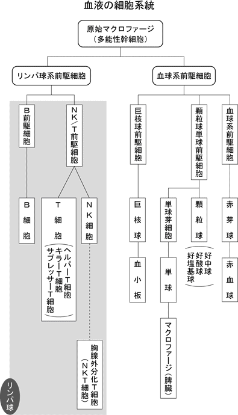
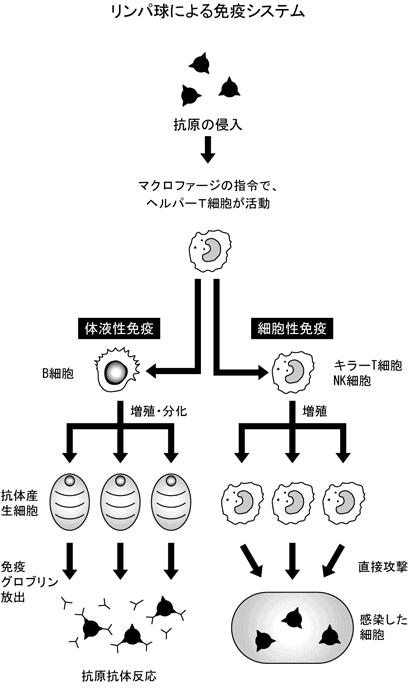
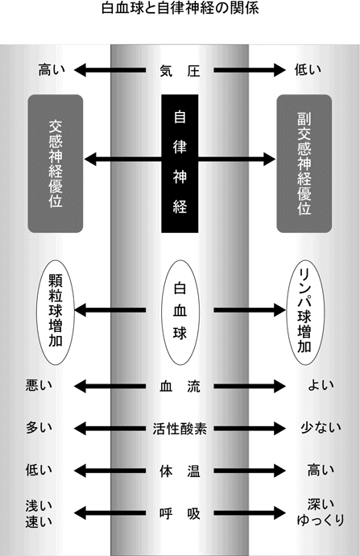

| 「まじめ」をやめれば病気にならない 簡単！ 免疫生活術 (PHP新書) | |
| 安保徹 | |
| PHP研究所 (2007) | |
「まじめ」をやめれば病気にならない
――簡単！免疫生活術
安保徹
はじめに
いまの日本には二つの不思議な現象があります。
一つ目は、豊かで平和な時代なのに病人が多く、長生きしても寝たきりの人が多いということ。そして二つ目は、りっぱな病院が多いのに病気をなかなか治せないということです。病院に行っても満足している人は少ないでしょう。
こんな変なことが起こったのには、じつは理由があるのです。
第一の問題として、時代とともに病気の原因や種類が変わるということに、一般の人も医師も気づいていないことがあげられます。五十年前の日本なら、冬の寒さ、飢え、肉体的重労働のような過酷な生き方が病気の原因だったのです。しかしいまの日本には、このような原因で病気になっている人はほとんどいないでしょう。
残業続きの長時間労働、パソコンの長時間使用による眼精疲労、冷房や冷たい飲み物による冷え、夜ふかし、人間関係から生まれる精神的ストレスなど現代人の病因は多様です。あえてまとめれば、まじめやクヨクヨ性格による日常的負担の過剰が原因といってもよいでしょう。お年寄りのなかには、薬の飲みすぎによってからだを壊している人もいます。子どもの場合は、甘い物のとりすぎや過保護の結果、ストレス耐性を失っているという流れもあります。
病気の成り立ちが見えてくると、それに合わせて生き方を変えれば病気は治ります。いまの日本人は、全体的に働きすぎ、まじめすぎなのです。無駄に生まじめな生き方をすこし見なおしてほしいのです。「まじめ」をやめれば病気にはなりません。
このような意識が拡大していくと日本も成熟した社会になっていくでしょう。いまは、病気の原因も知らずにいるわけですから、病人がふえても仕方がないのです。
また、病気が生き方の偏りから生じていることがわかると、病気の予防法も見えてきます。健康と病気の境目、それを決めている因子は自分自身の生き方そのものであるということを、この本で学んでほしいのです。
第二の問題は、医学が分析的研究にシフトしすぎていて、からだ全体を見る視点が希薄になっていることです。ずいぶん医学研究は盛んですし研究論文もたくさん生まれています。しかし、病気の成り立ちを解明する力にはなっていないのです。私たちのからだは、単なる細胞の寄せ集めではないし、遺伝子ですべてが解決できるわけでもありません。
生き方の問題と病気の成り立ちをつなぐには、遺伝子や分子の異常というよりは、からだ全体を束ねる調節系とか、防御系とか、循環器系とかのはたらきに対する影響を考えなければならなかったのです。調節系の最大のものは自律神経であり、防御系は白血球システムであり、循環器系は体温や代謝のレベルを決定しています。ここから、病気の成り立ちが明らかになっていくのです。そろそろ、医学や医療も新しい時代を迎えるときがきていると思います。
今日の日本の医療は薬を出して病気を治すという流れになっていますが、本来、薬はつらい症状を軽減するための対症療法なわけです。長期間飲むには適さないということを医師も一般の人も理解することが必要です。
病気の成り立ち、病気が発症する、あるいは治るときのからだの反応なども学び、ともに成熟した日本社会をつくりたいと思います。それが、この本の役割です。
二〇〇七年十一月
安保 徹
第１章 悪いのはすべて働きすぎとストレスだった
働きすぎる人たち
日本人の最大の病因は働きすぎ
先日、私の講演に、大手建設メーカーのビジネスマンたちが来ていました。彼らは毎日夜の九時まで会社で仕事をしています。自宅は郊外にあって、通勤に二時間かかるので、朝は六時に起きて七時前には家を出て、家に帰るのは午後十一時、寝るのは午前一時過ぎになるというのです。ウィークデーの睡眠時間は平均五時間で、慢性的に睡眠不足の状態です。
睡眠不足は、通勤電車のなかで眠ることでなんとか補っているそうです。彼らは三十代、四十代前半の働き盛りで、子どもはまだ小学生だという話でしたが、家を出るときには子どもはまだ寝ており、帰ったときにもすでに寝ているので、平日は子どもと遊んだり話したりする時間もないというのです。
すべての会社の勤務状態がそうではないでしょうが、働き盛りの日本のビジネスマンは多かれ少なかれ、それに近い生活をしているのではないでしょうか。
アメリカは猛烈なビジネス社会のように見られていますが、ハードな仕事をしているのは、ほんのひと握りのエグゼクティブで、ふつうのビジネスマンは、朝こそ日本より早く八時ころに始まりますが、残業などはほとんどなく、午後五時ころには仕事を終えて帰宅します。何年か前にスリランカに行ったのですが、スリランカでは朝八時から午後四時というのがごくふつうの勤務スタイルのようでした。
ＯＥＣＤ（経済協力開発機構）の二〇〇五年の統計によると、年間労働時間はアメリカの一八〇四時間に対して日本が一七七五時間と日本のほうが少ないくらいですが、統計の取り方が国によって違っていて、アメリカでは、労働時間に有給休暇や休日など賃金の支払い対象になる時間も含まれているようなので、実際には日本のほうが多いと考えられます。
しかも、日本はサービス残業など、表に出てこない労働時間がかなり多いために、実際には長時間労働が当たり前になっているのです。
また、いまはフレックスタイムを導入している会社も多くなっています。通常の九時始まりよりも朝のスタートは遅くてもいいわけですが、実際には労働時間が八時間前後ですむことは少ないので、スタートが遅くなればなるほど、どうしても夜も遅くまで仕事をしなくてはなりません。
しかも、日本人には周囲を気にするという特性があるため、周りが遅くまで残って仕事をしていれば、自分だけ定時には帰りにくく、たいした仕事がなくてもダラダラと遅くまで会社にいることになりがちです。それでは帰りも寝るのも遅くなり、当然、朝早く起きるのもつらくなります。そんな生活が続けば、疲れがたまり、からだが悲鳴を上げます。その悲鳴を無視していれば、いずれ病気にもなります。
日本人が病気になる原因としては、長時間労働、つまり働きすぎがもっとも多いのです。アメリカ人の場合には、むしろ食べすぎのほうが問題で、アメリカ人の健康に対する関心はダイエットと運動に向いています。最近はその影響で、日本でもメタボリック症候群が話題になっていますが、太りすぎや運動不足以上にまず改善しなくてはならないのは、働きすぎなのです。それが改善されないかぎり、日本人はなかなか健康にはなれません。
パソコンの使いすぎが免疫力を落とす
働きすぎと並んで健康を損なう大きな原因になっているのが、長時間パソコンを使うことです。最近は、たいていの仕事でパソコンが必需品になっています。一日二～三時間程度ならまだいいのですが、一日中パソコンの前に座って作業を続けなくてはならない職種も多くなっています。パソコンを使っての長時間労働となると、さらにからだを壊しやすいのです。
夜遅くまで煌々とした明かりの灯るオフィスで仕事をしていれば、視神経に光の刺激を与えつづけることになり、それだけでも疲れます。そのうえ一日中、パソコン画面の光の点滅を見つづけるとなれば、目の疲労はいうまでもありません。そうした目の疲労が重なれば、病気を引き起こす危険性も増すのです。
夜遅くまで明るいオフィスにいて、しかもずっとパソコンを前に集中していると、自律神経のうちで交感神経の緊張状態が長く続くことになります。明るいところでは交感神経が緊張にさらされ、暗いところでは副交感神経がはたらくことになるので、光を浴びつづけるだけでも交感神経が緊張しストレスになるのです。
免疫力をもっとも落とすのは、長く起きている（長く重力に逆らう）ことと、光の点滅を見つづけて目を疲れさせることなのです。夜遅くまでパソコンで仕事をするというのは、この二つの要素が重なることになります。
同じようにパソコンの画面を見つづけるのであっても、昼間の光のほうがマシです。たとえ屋内であっても、昼間は窓から太陽光が入ってきますから、人工の光だけに頼る夜よりはいいのです。
いま自律神経という言葉が出てきましたが、この自律神経は私の免疫理論のポイントなので、ここですこし説明しておくことにしましょう（くわしくは第３章で説明します）。
自律神経とは、自分で意識してコントロールすることができない自動的に動く神経のことです。自律神経には交感神経と副交感神経の二つの系統があって、交互にはたらいてバランスをとっています。興奮状態のときには交感神経がはたらき、リラックスしているときには副交感神経がはたらいています。昼間活動しているときには交感神経が優位で、食後や休憩しているとき、夜寝ているときには副交感神経が優位な状態です。
健康な人はどちらか一方の状態に偏ることなく、一日のなかでバランスをとっているのです。
現代では、長時間仕事をして、夜遅くまで起きている生活の人が多くなっているので、どうしても交感神経優位な状態が長く続くことになるわけです。私たちのからだは昼間活動するようになっています。本来であれば、夜は昼間の交感神経優位の状態から副交感神経優位の状態に切り替わるのですが、夜も仕事をしていると、そのまま交感神経優位な状態が続くので、当然からだに悪く、そのような状態が長く続けば健康を害することになるのです。
ですから、人間は朝型生活が健康にいいのです。いまや、仕事上パソコンは必需品なので、たいていの人はパソコンには向かわざるをえないでしょう。そうであるなら、せめて日中のほうが目の負担も軽く、からだも疲れが少ないのです。といっても長時間休みなく画面に向かうのは、よくありません。最低でも一～二時間に一度は休憩をとって目を休めることが大切です。そして、できれば日が沈んでからは、パソコンでは仕事をしないと決めることです。
会社から帰っても、パソコンやテレビゲームをして夜遅くまで目を酷使している若い人たちが多くなっています。言語道断といわざるをえません。
残業させる会社がおかしい！
会社に使われる立場としては、仕事上の無理はせざるをえないこともあるでしょう。また、残業代が生活の糧になってしまっていて、無理してでも長時間働かざるをえない人もいるでしょう。
しかし、ここで考えていただきたいのは、そのような無理な生活を続けていけば、どうしたって、からだを壊すということです。
最近では、ようやく日本でも「残業しない」ことの利点が注目されてきたようです。実際、頭が冴えている午前中にデスクワークをどんどんこなして、午後は会議や外回りなどにあてるのが、いちばん能率が上がる仕事のやり方です。
朝九時から午後五時まででは仕事が片づかないというのならば、始業を一時間早めて八時からにすれば、昼休みの一時間を除いても実質労働時間は八時間です。私は、たいていの仕事はそれで片づくと思います。もし、働く人にそれ以上の仕事を課しているとしたら、会社のほうがおかしなシステムになっているのではないでしょうか。
使う側も使われる側も、効率的に仕事をこなすことをもっと重視したほうがいいのです。「長時間会社にいるのがいい社員」という見方は、「会社人間」を高く評価するような、これまでの価値観がまだ根強いからでしょう。
このような長時間労働の弊害は、働く側からはなかなか改善しにくいものです。みんなが残って働いているのに、自分だけ定時には帰りにくいでしょう。ですから、そのような状態を変えるためには、働く側、個人の側の意識ももちろん問題ですが、それ以上に、企業の側、人を使う側の意識が変わらなくてはなりません。
社員がいつも健康で能率的に働いているほうが、会社の業績も伸びるはずです。そのような考え方に、企業や官庁が転換しなければダメなのです。一部の会社では発想の転換が見られますが、まだまだ現実には、日本の会社の多くが、古い考え方に縛られているのではないでしょうか。
もし会社が働く人の健康を十分に考えてくれないのだとしたら、自分のからだは自分で守るしかありません。残業、長時間労働がいちばん健康を損なう危険性が高いのですから、そのような職場で働いているのであれば、できれば転職したほうがいいのですが、現実にはなかなか難しいでしょう。そうであれば、夜はなるべく早く寝て、睡眠時間を確保する、休日はゆっくり休むというように、自分のからだは自分で守る工夫が必要なのです。
仕事に対して「まじめ」なのはいいのですが、からだを壊すほどまじめである必要はありません。そんなまじめさはやめて健康な生活を取りもどしてください。
若い人に多い突然の頭痛
若ければたしかに多少の無理はききます。しかし若い人でも、長時間労働が続けば、やはりからだを痛めてしまいます。
こんな例があります。二十代はじめの若い人です。就職してから毎晩残業で、帰宅が夜の十二時ごろになる生活が続きました。半年経ったころから激しい頭痛に悩まされ、目にも差し込むような痛みが出はじめました。
病院に行ったところ「群発性頭痛」と診断され、痛み止めをもらい、「耐えられないような激しい痛みのときには、酸素を吸うように」と酸素を吸う装置を渡されました。
群発性頭痛とは、いったん起こると、一日数回、連日、あるいは一カ月のあいだに数回といった頻度で起こる激しい頭痛のことで、たいていは目の奥の痛みをともないます。そして涙や鼻水が出たりします。これは二十～三十代の男性に多いものです。
なぜ群発性頭痛が起こるのか、そのメカニズムを説明しましょう。
無理をして疲れたときには、からだに炭酸ガスがたまります。そのために、血管の酸素分圧（血液中の体積あたりの酸素量）が下がり、炭酸ガス分圧（血液中の体積あたりの炭酸ガス量）が上がります。からだはその状態から解放されようと反応します。血管を広げて酸素をからだじゅうに十分に送り込もうとするのです。この、血管を広げたときに痛みが起こるわけです。
ですから、ストレスの最中には頭痛が起こりません。ホッとしてストレスから解放されるときに血管が広がり、プロスタグランディンやヒスタミンなどの化学伝達物質が出て、血管を広げて血流を回復するのですが、その過程で頭痛が強く起こるわけです。脳の血管、とくに内頸動脈という目のうしろの脳を養う太い血管が拡張して腫れるために、激しい痛みが生じます。これが群発性頭痛が起こるメカニズムです。
酸素吸入が効果的なのは、激しい頭痛が生じる最初の原因が酸素不足ですから、からだに酸素を入れることで酸素分圧を上げ、炭酸ガス分圧を下げることによって早くいい血流にもどすことができるからです。群発性頭痛には激しい痛みがともなうので、痛みが一時間も二時間も続くと、非常につらいものです。ですから酸素を吸って、早く痛みを取り除くわけです。
また、酸素不足を解消しようと血管が広がるので、血管収縮作用のある抗ヒスタミン系の薬を飲めば頭痛は収まります。つまり、酸素吸入や血管収縮作用のある抗ヒスタミン系の薬を飲めば、一時的に痛みは和らいだり収まったりします。
しかし、そうしたことはあくまで応急処置であって、一時的に頭痛を緩和するにすぎません。もともとは無理な生活が頭痛を引き起こしているのですから、その生活を改善しないかぎり、応急処置でその場はしのげても発作はいずれまた起こります。
いくら若いといっても、そのままの生活で薬を飲みつづけ、激しい痛みが出たら酸素を吸うということをくりかえしていては、頭痛は治らないどころか、すこしずつ悪くなっていき、群発性頭痛が起こる頻度が高くなっていきます。脳の血管に負担がかかりつづけ、さらに悪くなれば、くも膜下出血などにいたる危険性があるのです。
こうした症状が出たときには、からだが悲鳴を上げて、「このままの生活では大きな病気を引き起こしかねないよ」と注意信号を送っているのです。そのからだの声を真摯に聞くことができるかどうかが、自分の健康を守れるかどうかの決め手なのです。
若いから大丈夫だとか、仕事が忙しいのだから仕方ないと、からだの声を無視して、そのままの生活を続けたら、いずれは大きな病気にかかり、場合によっては生命の危険すら生じかねないのです。
そこで、病気を治すことができるかどうかは、本人が仕事よりもからだを守るほうが大切だと考えられるかどうかにかかっています。
老化を促進する酸素のとりすぎ
ここで血液中の酸素についてもうすこし説明しましょう。
疲れているときに血液を採取する（動脈は体内の奥を流れているので、ふつうは表面を流れている静脈の血液を採る）と、真っ黒い血になります。血液中の酸素が少ないからです。つまり、疲れていると血液の酸素分圧が下がり、炭酸ガス分圧が上がることになり、血液もどす黒い色になるのです。
そこに酸素を入れれば、きれいな色の血が採れます。群発性頭痛のときには、それを酸素吸入で行なうので、劇的に効果があるのです。この現象は、動脈でも静脈でも同じように起こります。
最近、都会では手軽に酸素を吸える「酸素バー」というのがはやっているようです。酸素バーの場合には、正確には酸素ではなく高圧空気でしょうが、とにかく一時的に酸素を入れれば、すぐに酸素分圧が上がるので、疲れをとる効果があるわけです。
では、単純に酸素をたくさん吸うのがいいかといえば、そうとばかりもいえません。酸素をとりすぎるのは、老化を促進させることにもつながるのです。老化を促進させる大きな要素である活性酸素もたくさん出るからです。また呼吸数が多くなるのも同様です。
逆に酸素が少なくなる状態ではどうでしょうか。たとえば高地のように空気が薄いところに行くと、活動性が低くなります。それはからだが負担を軽くしようと、自然に活動しないように調整するからです。そのため、すぐに眠くなります。
長野県は長寿で知られていますが、その理由の一つは、空気が薄い場所だからと考えられます。つまり、日常的に活動性を低く抑えるために、からだの負担が少なく、それが長生きにつながるのではないかということです。
群発性頭痛でからだが悲鳴を上げているにもかかわらず、酸素吸入などの治療で無理やり抑えつけて仕事を続けていると、さらにひどい病気を引き起こしかねないというだけでなく、酸素を必要以上にとりすぎるために、老化を促進させることにもなるのです。
ですから、酸素を吸えば疲れがとれるからといって、無理に入れるのは、その場はよくても、長い目で見ればかえってからだにはよくありません。
日ごろの生活では、風呂に入ってよく温まるだけでも、酸素は皮膚から自然に吸収されます。血行がよくなるのと同時に、酸素吸入ほど急激ではないかたちで血液中の酸素分圧が徐々に上がるのです。ですから、風呂に入ると疲れがとれるわけです。また、その程度の酸素の吸収は老化を促進させることもありません。
そう考えれば、健康に悪い影響を与えない疲れのレベルとは、夜風呂に入ってぐっすりと眠ればとれる程度までなのです。風呂に入り、ぐっすり眠っても疲れを翌日に持ち越すとなれば、それは働きすぎているサインと考えていいのです。
ストレスがからだを壊す
強いストレスが招く食べすぎ・飲みすぎの悪循環
長時間労働はからだの疲労だけでなく、精神的にもストレスをもたらします。ストレスが強い人ほど病気になりやすいといえます。
ストレスを抱えていれば、当然それをなんとか解消しようとします。私たちにとって、もっとも手軽なストレス解消法は、食べること、そしてお酒を飲むことです。
ストレスがあれば交感神経が緊張し、抱えつづければ交感神経緊張状態が続くことになります。食べ物を消化する活動は副交感神経の領域です。ですから消化管を動かすことで、交感神経優位の状態から副交感神経優位の状態にもっていくことができます。食べたり飲んだりすると、ホッとしてそれまでの緊張から解放されるのは、副交感神経がはたらくからなのです。ストレスが強いほど、無意識のうちにバランスをとろうと食べたり飲んだりするようになります。
仕事をバリバリとこなす、やり手のビジネスマンにかぎって、よく部下を連れて豪快に飲んだり食べたりするのも、それでストレスを解消しているからです。あるいは、仕事帰りにひとりで飲み屋に立ち寄って飲まずにいられないというのも、ふだん心理的な圧迫がかかっているからで、それもストレス解消のためなのです。いずれにしても、無意識のうちに交感神経の緊張を解消しようとしているのです。
適度な飲食でストレスが解消できるのならば、健康を損ねることにはなりません。しかし、ストレスが強くなると、そのバランスがとれなくなります。ストレスが強い人ほど、食べたり飲んだりすることで解消しようとしがちです。その結果、食べすぎ、飲みすぎを招くことになります。
食べているあいだは副交感神経がはたらいているわけですが、食べすぎて肥満になれば、ちょっと歩いただけで息が切れるようになり、それがさらなるストレスとなって交感神経の緊張を招きます。自分のからだそのものがストレスになってしまうのです。
過食症に陥るのも、何らかの悩みが食べることに走らせるわけです。食べて悩みや不安というストレスを解消しようとするのですが、もちろん悩みや不安の根本が解消されるわけではありません。そのため、食べれば食べるほどいっそう食べるという悪循環になります。
お酒のリラックス効果は一～二時間程度
ビールやお酒を飲みはじめたときには、ホッとして、たしかにその日の疲れがとれるような気がします。ですから、アルコールは緊張をほぐすものだと思われがちですが、本来、アルコールは交感神経を刺激してその優位な状態をつくるものです。
しかし、飲んでしばらくのあいだは副交感神経を刺激してリラックス状態をつくり出します。その状態は一～二時間程度です。アルコールがはじめに少量入ってきたとき、からだは異物を排泄しようとする反射作用を起こすため、お酒の飲みはじめでは一気に血管が開き、顔が赤くなり、一瞬リラックスして気分がよくなります。尿も頻繁に出やすくなります。
ですからストレスが強い状態ではとくに、アルコールを摂取すると一瞬気分が軽くなるのです。
仕事のストレスが強い人ほど、お酒で解消したくなる気持ちはよくわかります。たとえば、きめ細かな神経と集中力を必要とする作家や芸術家などは、早く作品を完成しなければと無理に無理を重ねて仕事をしていると、疲れて目がかすみ、手も震えてきます。そんなときにアルコールをすこしとると、一瞬、副交感神経が刺激されてリラックスできます。すると手の震えが収まり、疲れがとれたような気になるのです。
しかし、アルコールが副交感神経に作用するのは飲みはじめの一～二時間程度ですから、つらい気持ちが去って気分が軽くなるのは、ほんのわずかな時間にすぎないのです。それ以上に飲みつづけると、興奮したり顔色も青くなったり、脈が速くなって交感神経が緊張します。その状態が長く残ると二日酔いになるのです。翌日、脱水症状になって尿が出にくくなり、脈が速い状態が続くことになります。
それがごくまれなことならいいのですが、つねに強いストレスにさらされる状態にあって、その緊張を緩めるためにしょっちゅうお酒を飲むようになると、アルコール依存になってしまいます。一瞬ラクになるという効果が依存に結びついてしまうのです。
いつも締め切りに迫られるようなストレスの強い仕事をしていて、なんとか間に合わせようとお酒を飲みながらやれば、アルコール依存の悪い流れに入りかねません。そんな無理は、せいぜい月に一～二回ならいいのですが、週に二～三回、そして毎日となると、飲酒後に交感神経の緊張が訪れるので、結局はからだを壊すことになります。
人によってアルコールに対する強さは違いますが、一般的には日本酒一～二合程度、ビール一～二本程度までであれば、副交感神経を刺激して免疫力を高める作用をします。「酒は百薬の長」といわれるのは、そのためです。しかし、二日酔いになるまで飲むと、からだに悪いのは当然です。
いま述べてきたように、食べたり、お酒を飲んだりすることは、一時的にストレスを解消するにはたしかに有効です。しかし、それで解消できないようなストレスは、過度の飲食を招くことになり、いっそう交感神経の緊張を引き起こすことになるのです。
そうでなくても、ストレスを抱えていれば交感神経の緊張状態が長く続きます。そのような状態では、白血球は顆粒球が多くなってリンパ球が少なくなっています。そのために免疫力が落ちており（交感神経、副交感神経と免疫力の源である白血球の関係については次章で説明します）、病気の七～八割は、ここから引き起こされるのです。
ですから、食べすぎ、飲みすぎ自体を問題にするよりも、その原因となっているストレスそのものをどう解消するかが大切なのです。
無理がきくのは四十代はじめまで
働き盛りの三十～四十代は、仕事もバリバリこなさなければならないし、やればやるだけの見返りもあって、やりがいもあるでしょう。しかし、そのまま無理を続けていると、どうしてもストレスをためることになります。まだまだ体力に自信のあるこの年代の人は、とりあえず食べたり飲んだりすることでストレスを解消しがちです。
私もその年代のころは、研究生活に明け暮れていました。三十歳から四十歳まではちょうどアメリカに留学していました。現在の免疫理論もまだ確立していませんから、なんとか自分独自の研究成果を出そうと一生懸命でした。まったくの仕事人間で、運動など何ひとつしていませんでした。
あるとき、小学一年生（当時）の子どもに「かけっこをしよう」とせがまれて、いっしょに走ったのです。ところが、二〇メートルも走ったら自分の体重を支えられなくなり、立ち止まって両手をついてしまったのです。子どもから「何してるの？」といわれても、それ以上走ることができず、立ち上がることすら難しいほどでした。それほど足腰が弱っていたのです。
そのころの私の生活は、助手がいないので実験もすべてひとりで行ない、その成果をものすごい勢いで次々と論文にまとめ発表していました。それだけの仕事量をこなすには、それこそ朝早くから夜遅くまで研究室にこもる生活です。楽しみといったら食べることと飲むことだけでした。一日おきに四〇〇グラムのステーキを平らげ、ビールやワインを毎日しこたま飲みました。研究のストレスをそうした飲み食いで解消していたわけです。
その当時、私の体重は七四キロ、ウエストは八八センチにもなっていました。一六七センチの身長では、かなりのウエイトオーバーです。いまは体重六一キロ、ウエストは八〇センチですから、一三キロも重かったわけです。お腹と腰の周りに一三キロのおもりをつけて生活していたようなものですから、当然、膝や腰にも負担がかかります。そのころは、腰痛にも悩まされていました。
その後、アメリカからもどって仙台に七年間いましたが、相変わらずの猛烈な研究生活で、そのストレスはもっぱら食べたり飲んだりで解消する毎日でした。体型も変わらず、当時はタバコも吸っていましたので、ちょっと階段を上るだけで、すぐに息切れする始末でした。
それでも、それがふつうの生活だと思っていたのです。四十代のはじめには、胃がんの疑いありと健康診断で引っかかったこともありました。幸いにも、びらん性の胃炎（粘膜に炎症が起こり、はがれる）にすぎませんでした。また毎年のように、尿検査で糖とたんぱくが出ていました。しかし、それ以上知るのが怖くて、精密検査に行くように指示されても無視してきました。
そんな私が生活を改めるようになったのは、免疫理論を発表しはじめたころからで、五十代になってからのことです。
健康に恵まれ頑健なからだであれば、多少は無茶な生活をしていても三十代、四十代はじめころまではなんとか乗り切れます。しかし、もともとからだが丈夫でない人が無理を続けたら、若くても病気になるのは当然です。私の場合は幸運にもなんとかなりましたが、たとえ丈夫な人であっても過度な仕事やストレスに毎日さらされていたら、三十～四十代で、ある日突然がんにかかることもあるのです。
多少は太っているほうがストレスに強い
三十～四十代の働き盛りの人には、じゃっかん太り気味の人が多いものですが、それはお話ししたように、仕事の忙しさや、それにともなうストレス解消のために、食べすぎ、飲みすぎの生活になりやすいからです。
とはいえ見た目においては、多少は太っているほうが健康的に映りますし、実際そういう人は活力にあふれています。ある程度までは太っているほうが血色がよく、脂肪もあって活動的なのです。太るということには、それだけメリットもあるのです。ですから、食べて脂肪を蓄えるのは、身を守るためのクッション作用ともいえます。
やせている人と、脂肪を蓄えて太っている人とでは、ストレスを受けたときにそれをはね返す力がぜんぜん違います。やせた人が無理をしつづけて、それでも食べずにいると病気をはね返す余力がなくなってしまいます。しかし脂肪がついていれば、食べられなくなっても、からだに蓄えがあるので耐えられるのです。
そこで、お腹の周りの脂肪は、病気になって食べられなくなったときの備え、すなわち「貯金」にたとえられます。働き盛りの人にとっては活力の源になるものですから、あまり一方的にメタボリック症候群を悪者扱いして、神経質になることはありません。からだに脂肪をつけようとするのは、自分の身を守るための反応なのですから。
しかし、その貯金が多くなると、それを維持するために心臓に負担がかかります。さらには、その重いからだでつねに移動しなければならないので、膝や腰にも悪いのです。貯金がいわば不良債権化するようなものです。それがどんどん膨らんでいくようでは問題が生じます。
四十代になったら「仕事のやり方」を変える
三十代では、まだまだ免疫力はそれほど落ちません。多少の働きすぎでストレスを抱えていても、重篤な病気になるケースは少ないでしょう。しかし四十代になったら、自分のからだには細心の注意を払う必要があります。
免疫力の基本である白血球の数が、四十代になって少なくなるわけではありません。無理を重ねることによって、むしろ白血球全体はふえているくらいです。ただし、そのふえたぶんはそっくり顆粒球で、それが問題なのです。
四十代にもなれば、たいていはどのような人でも中間管理職になるはずです。自分の仕事が忙しいだけでなく、部下の指導や管理も受け持たなくてはなりません。その重い責任が大きなストレスとなってのしかかってきます。自分の仕事をすこしでも減らすことができればいいのでしょうが、実際は現場の総責任者として若い部下たち以上の成果が求められるはずです。当然、仕事はいままで以上にハードになります。
そうしたストレスを解消しようと人一倍食べたり飲んだりする人は、人一倍エネルギッシュでやり手かもしれません。長時間労働と責任の重さを飲み食いではね返しているわけです。しかし、そのままの生活を続けていると、足腰が弱り運動機能が落ちていきます。メタボリック症候群になる危険性も高いでしょう。
太りすぎによる心臓への負担は、狭心症、不整脈、心筋梗塞の道へとつながります。さらには高血圧や糖尿病、通風、尿路結石など慢性の成人病にもなりかねません。
つまり、この年代で病気持ちになりやすいのです。
日ごろから週に何回か運動を心がけているのなら別ですが、忙しさにかまけて運動不足を続けているとしたら、四十代にもなれば体力が落ちてきます。そうでありながら、もっとも忙しく働かなければならない年代です。
そういう意味で、企業社会では四十代がいちばんからだを壊しやすいのかもしれません。いつまでも二十代、三十代のつもりで仕事をしていたら、とてもからだがもちません。
責任がふえたぶん、自分の仕事を多少セーブするくらいでいいのです。部下よりも早く帰ることを心がけ、週末には運動をしてからだをいたわることです。
ストレスを解消するために、自分なりに工夫する必要があります。そうすれば五十代、六十代になっても健康は維持できます。
五十代になったら「生き方」を変える
一般に免疫力がガクンと落ちるのは、かつては、厄年である男性四十二歳、女性なら三十三歳前後の年齢でした。
現代では、寿命が延びただけ、男女ともに十年近く遅れて過渡期がくるようになっているかもしれません。実際、同じ歳でも、現代人のほうが昔の人より見かけもずっと若くなっています。過酷な肉体労働や貧困も少なくなっていますし、栄養状態もずっとよくなっており、寒さ、暑さの環境のコントロールも容易になって生活はずっとラクになりました。その意味では、からだを直撃するストレスは少なくなっています。それだけ免疫力も高くなっているといえます。長寿の人がふえたのは、そうした変化の表われでしょう。現代で厄年に相当するのは、男性では五十歳前後、女性では四十代半ばと考えてもよいと思います。
しかし無理を重ねれば、四十代半ばで発がんしても不思議はありません。人間関係やサービス残業、夜ふかしなどがストレスとなって、現代人のからだを蝕むからです。男女ともに四十代半ばを迎えたら、やはり無理は禁物なのです。
免疫力という面で見れば、健康な人の白血球数はほぼ六〇〇〇前後（血液一マイクロリットル中）です。起きている時間が長い人は、交感神経緊張状態が続くため白血球数は多くなります。たとえば夜の九時、十時まで働いて、寝るのは午前一時過ぎという人は、白血球の数が七〇〇〇～八〇〇〇にもなっています。そしてその場合、リンパ球ではなく顆粒球がふえているのです。
白血球のなかの顆粒球、リンパ球、マクロファージについては次章でくわしく説明します。ここでは交感神経優位でふえるのが顆粒球、副交感神経優位でふえるのがリンパ球、そして顆粒球、リンパ球の元になったのがマクロファージで、これは〝元祖白血球〟とも呼べるものだと覚えておいてください。また、健康な人の白血球中のそれらの割合は、マクロファージが五パーセント程度、顆粒球が六〇パーセント前後、リンパ球が三五パーセント前後です。
働き盛りで頑張っている人は、これまで述べてきたように、たいていは食べたり飲んだりしてストレスを解消しています。そのような四十代であれば、まだまだマクロファージも強いので、インフルエンザ・ウイルスをもはね返す力があります。「忙しくて風邪をひく暇もない」というのは、まさにこの状態です。
しかし、そのままの生活を続けていると、いつの間にか危険領域に近づいていくのです。心臓や血管系に負担がかかりやすいので、狭心症が出てきたり、不整脈になったりします。
同じ年代でも、あまり飲み食いしないでやせている人は、疲れが重なると、さらにやつれてしまうことがあります。その場合には、発がんの危険性が高くなります。太れる人は仕事で無理を重ねても、心臓、血管系が破綻するまでは生き延びることができますが、太れない人は若くして大病して、そのまま逝ってしまうことが多いのです。
このように、太ることは身を守る反応といえるわけですが、それにも限界があります。ストレスを飲み食いで紛らわすことが可能なのは、四十代半ばまでと考えてください。お酒を控え、食事に気をつかわないと、年々、心臓への負担は増していきます。
しかし、そもそもの問題は働きすぎやそれにともなうストレスなのですから、これと正面から向き合わずに、ただ節制するだけでは、根本的な問題解決にはならず、かえって欲求不満がたまるだけでしょう。
ですから、遅くとも五十歳になったら、自分の生活スタイルを根本的に見なおし、変えることです。
私も四十代までは、週に二回は若い人たちを連れては街に繰り出し、飲み歩く生活でした。そのことが頑張る活力になっていたわけです。しかし五十代になって、生活スタイルをガラリと変え、遅くても夕方の六時には家に帰ることにしました。もし、四十代までの生活を続けていたら、とても五十代を健康に過ごすことはできなかったと思います。
時代とともに病気は変わる
現代人が抱えるストレスと、昔の人が抱えていたストレスとでは、ぜんぜんその内容が違います。
たとえば縄文時代に生きていたら、食べていくこと自体がたいへんな苦労だったはずです。獲物を探しに狩りに出れば、そこには毒蛇に噛まれるといったさまざまな危険も待ち構えていたことでしょう。ケガをすれば傷口が化膿することもあったでしょう。生きること自体がストレスだったともいえます。
しかしいまや文明が進んで、安全で快適な住まいを手に入れ、大地震や津波などの大きな自然災害を別にすると、自然や動物の脅威によって命を落とすことはほとんどなくなりました。その便利さと引き換えに、交通事故という新たな危険が出てきたわけです。時代とともに危険の対象は変化してきたのです。
病気にしても、日本では一九五〇年まで結核が死亡原因の一三・五パーセントを占めていましたが、一九八〇年までには一パーセント以下に減少しています。代わって一九五〇年から八〇年までは脳血管疾患（脳卒中）、一九八一年以降は悪性新生物（がん）が第一位となっています。
脳血管疾患の死亡率は一九七五年以降減少していますが、がんと心疾患（心臓病）は増加傾向にあります。ちなみに、二〇〇六年の日本人の死因の第一位は、がんで三二万九三一四人、第二位は心疾患で一七万三〇二四人、第三位が脳血管疾患の一二万八二六八人です（厚生労働省の二〇〇六年「人口動態統計」）。
つまり、日本人が病気で死ぬ場合には、これら三大生活習慣病ともいうべきものが原因なのです。このことは日本が高齢社会になったこととも関係ありますが、働きすぎとストレスが大きな要因でもあると考えられます。
これまでのところ日本人の平均寿命はおおむね延びており、男性で七十九歳、女性は八十五歳を超えています。たしかに長生きできる環境になっているのですが、一方で、ボケずに、病気の苦痛を長引かせることもなく「クオリティ・オブ・ライフ」（人生の質）を保って生涯を全うできるかが問題になってきています。
今後はたして、このまま寿命が延びつづけるのかどうかは不確かです。私見ですが、私たち団塊の世代はからだも頑健で、精神的にもかなりタフ、しかも、年上の戦中生まれの世代とは違って、とてつもない激動の時代を過ごしてきたわけでもありませんから、この世代の平均寿命は延びるのではないかと思います。しかし、それより下の世代となると、延びが止まるどころか、下がりそうな予感がしてなりません。
あくまでも平均寿命ではありますが、たとえ長生きしても、男性は七十代後半にがんなどで亡くなる方が多く、八十歳が一つの壁になっています。それにくらべて、女性のほうが八十歳をすんなりと超えています。その理由は、女性のほうが生物学的に強いということもありますが、男性のほうが社会生活のストレスにさらされつづけてきたからではないかと思います。
しかし、社会に出て定年まで働きつづける女性たちがふえたこれからは、女性も男性と同じ条件になりますから、男女差が縮まる可能性も考えられるのです。
「からだにやさしい職場環境」は自分でつくる
なかには、どんなに長時間仕事をしてもからだを壊さない健康な人がいますが、彼らは仕事をすること自体にストレスがない人たちです。あるいは、疲れたときには、自分の都合で仕事をセーブできる立場にいる人です。
企業のトップや、ある世界で実力も地位もある人たちは、仕事に追われて多忙をきわめても、周囲の人たちが気をつかってくれるはずです。そして何より、自分の意志が最優先され、自由に裁量できる範囲が大きいはずです。休みたいときには自由に休め、仕事のつきあいといってもゴルフで運動不足を解消できます。もとより人間関係においては、つねに相手よりも優位な立場にいますから、気をつかうことも少なくストレスはたまりません。
もちろん彼らにしても、まったくストレスがないことはないでしょう。経営者であれば、会社の浮沈を左右する大きな決断が求められる局面があるでしょうし、業績悪化に悩むこともあるでしょう。しかし、一般のビジネスマンほど継続的なストレスは強くありません。
使われる側は、毎朝九時から夜の九時、十時まで仕事をして、いくら疲れてからだがきつくても、自由に休むわけにはいきません。できない部下をうまく使いこなしたり、上司や取引先の意向を尊重して意に沿わない仕事に携わり、何事も上司の判断を仰がなければ動けないとなったら、そのストレスはいかばかりのものでしょう。多くの人たちは、つねに他人に合わせ、会社の都合に合わせて生活せざるをえないわけです。
仕事の内容や量のみならず、職場や家庭の人間関係もその人の健康に大きな影響をおよぼすのですから、ストレスをためない生き方を自分で工夫する必要があります。
そうはいっても、「われわれサラリーマンには、そんなに自由裁量権もないから無理だよ」という反論が聞こえてきそうです。簡単な話、ストレスを少なくするには、早く出世して自由にできる立場になってしまうのがいちばんの方法です。
しかし、みんながみんなそういう立場に立てるわけではありません。いや、働く人たちの大部分は、そこまでの地位に行き着くこともなく、上司に気をつかい、取引先に気をつかい、家に帰っても妻（夫）や子どもたちに気をつかう生活を続けるのが実際のところでしょう。
そのような現実のなかで、いかにストレスをためない生き方を選び取れるかが課題です。たとえ会社に使われる身でも、日々の仕事にやりがいを感じ、上司から信頼を勝ち取れば、ストレスはずっと少ないはずです。「からだにやさしい職場環境」をつくれるかどうかは、最終的には本人次第なのです。
環境は自分では変えにくいからと、ストレスの多い職場でいつまでも生まじめに我慢していると、結局はからだを壊しかねません。ストレスを抱えないですむ仕事のやり方を模索する、それが無理ならば、思い切って転職することも、ときには必要かもしれません。いちばん大切なのは、自分自身の健康なのですから。
第２章 究極の免疫力
進化した人間の免疫機能
さて、この章では、私たちのからだの免疫のはたらきについてお話ししていくことにしましょう。最近では「免疫」という言葉はよく使われますが、簡単にいえば、からだに病気の菌などが入り込んだときに、それが発症する前に察知して退治するシステムです。また、からだの異常、たとえばがん細胞などが発生したときに、それを取り除くはたらきです。
つまり免疫は、生体のホメオスタシス（恒常性）を維持するはたらきを担っています。ホメオスタシスとは、「生体の内部や外部の環境因子の変化にかかわらず、生体の状態を一定に保とうとする」機能を指します。この生体のホメオスタシスのはたらきによって、私たちは健康に生活することができるわけです。
はしかなどに一度かかると、「免疫ができて二度とかからない」とよくいいますが、そのときの「免疫」とは、そのウイルスの情報を記憶しておいて、同じウイルスがふたたび入り込んだときにすばやく処理する仕組みで、免疫システムのなかの「獲得免疫」によるものです。あとでお話しするように、これはリンパ球が担っています。
本書で「免疫」といっているのは、この獲得免疫だけでなく、私たちのからだを守る防御システムすべてのことです。
免疫の中心的な役割を担っているのが白血球です。血液量は人の体重の約八パーセントを占めていますが、この血液中の血漿という液体成分のなかには、酸素を運ぶ役割を担っている赤血球、出血時に血液を凝固させて出血を止める血小板、そして白血球の三種類の固体成分（血球成分）があり、順にそれぞれ約九六、三、一パーセントの割合で構成されています。ちなみに血漿と血球の比率は五五対四五で、血漿は九六パーセントが水分、ほかに血漿たんぱく質四パーセントと、糖、脂肪などから成っています。
白血球は、血液一マイクロリットルのなかに四〇〇〇～八〇〇〇個含まれています。血液はほとんどが骨髄でつくられますが、白血球の一部は脾臓やリンパ節でもつくられます。
白血球は、マクロファージ（単球）、顆粒球（おもに好中球）、リンパ球で構成されています。その割合は、健康な人でマクロファージ五パーセント程度、リンパ球三五～四一パーセント、顆粒球が五四～六〇パーセントくらいです。
白血球がこのようにマクロファージ、顆粒球、リンパ球で構成されるようになったのは、進化の過程においてです。
私たち人間のからだは、多くの細胞（六〇兆個といわれます）からできています。生物の歴史を見ると、原始的な単細胞生物からは三十八億年、多細胞生物になって十億年、そして人類の歴史はせいぜい数十万年で、現在の新人類となってからは三万年程度です。
単細胞生物はアメーバで知られていますが、アメーバは一個の細胞で成体がつくられていて、細菌などを貪食して細胞分裂をくりかえし増殖します。それに対して人間のからだは多細胞でできていて、それぞれの細胞が、外側では皮膚に、内側では腸管や筋肉、骨などというように分化（特殊化）してきたわけです。
それぞれに分化した細胞は、からだを直接守るはたらきを失っていきました。そこで、その弱点をカバーするために、防御細胞を特別に準備しました。それが白血球系です。
白血球の基本はマクロファージですが、これは単細胞生物時代の姿をそのまま残しています。実際、顕微鏡で見ると、マクロファージはアメーバとよく似ています。進化の過程で最初にできたからだを守るための細胞で、元祖白血球といえるものです。
マクロファージは全身に分布し、防御系の基本を成しています。脳にはグリア細胞、肝臓にはクッパー細胞、肺には肺胞マクロファージ、血液内で循環している単球、組織に広く分布している組織球、皮膚にはランゲルハンス細胞（皮膚組織をはじめ、外界に触れる鼻腔や肺、胃、腸管などにもある）といった具合です。破骨細胞もマクロファージから派生しています。
マクロファージは、異物が侵入すると、すぐにその場に駆けつけ異物を食べて分解（貪食）したり、老化した異常細胞を処理する役割を果たしています。
無脊椎動物の段階までは、基本的にこのマクロファージの防御システムのみですが、進化した脊椎動物では防御の効率を高めるために、マクロファージから機能が分化して顆粒球とリンパ球ができたのです。
マクロファージで始まり、マクロファージで終わる
マクロファージは、血中を移動しながら生体内をたえず見まわっています。単球と呼ばれることからわかるように、そのときには丸い形をしています。それが活動を始めると、アメーバのように形状を自在に変化させます。からだに異物が入り込むと、マクロファージがその刺激の違いによって、粒子の大きい異物には顆粒球を、小さすぎて顆粒球が貪食できないものにはリンパ球を誘導するのです。
リンパ球にサインを出すときには、マクロファージはＭＨＣ（Major Histocompatibility Complex＝主要組織適合遺伝子複合体）と呼ばれるマクロファージ自体のたんぱく質に異物の一部を乗せて抗原（異物）を示します。さらに、インターフェロンやインターロイキンなどの免疫情報伝達物質（サイトカイン＝免疫の反応などによって細胞から体液中に分泌されるたんぱく質）を出してリンパ球の活性化を促進し、みずからもＴＮＦ（腫瘍壊死因子）を放出して異物を攻撃します。
さらにマクロファージは、顆粒球やリンパ球が異物を処理したあとの残骸を処理します。たとえば、顆粒球が細菌と戦ったあとの残骸として膿をつくります。からだの表面に近い膿は破けて出ることもありますが、内部にとどまったときには、マクロファージがその膿を食べてきれいにするのです。
つまりマクロファージは、異物が入ってきた最初に、顆粒球による化膿性の炎症を起こすべきか、リンパ系の免疫反応を起こすべきかを決定し、最終処理まで担っているのです。
発がんのおもな原因は顆粒球のふえすぎ
顆粒球は、マクロファージのもつ食べる力がさらに高まったものです。顆粒球もマクロファージ同様に全身の血液内を巡回していて、異物が入ってくると排除します。
細菌など大きな微生物を貪食して、分解酵素と活性酸素によって異物を分解し処理します。そのときに、化膿性の炎症を起こし治癒に導きます。これは免疫の記憶がのちのちに残らない防御方法で「自然免疫」と呼ばれます。
顆粒球は成熟後二～三日で死んでしまいます。そのときに、臓器や血管などの粘膜上で強力な酸化力で組織を攻撃する活性酸素を放出します。人間の体内には活性酸素を無毒化する仕組みが備わっていますが、顆粒球が過剰になると、そのはたらきが追いつかずに広範囲にわたって組織破壊が進みます。がん、胃潰瘍、潰瘍性大腸炎、白内障、糖尿病などの病気を引き起こす原因はこれなのです。
そのため顆粒球は「悪者」のようにとらえられがちですが、実際は、顆粒球は細菌などの侵入による感染症から私たちの身を守ってくれているものなのです。問題なのはふえすぎることで、トラブルが生じて病気が引き起こされることになります。
大切なのは、白血球のバランスです。そのバランスを左右するのが自律神経です。交感神経が優位にはたらいていると顆粒球がふえてリンパ球が減り、副交感神経が優位にはたらいているとリンパ球がふえて顆粒球が減ります。
がんをはじめとする病気の七〇～八〇パーセントは、顆粒球がふえすぎていることに原因があります。交感神経緊張のために顆粒球が増加して、不要な活性酸素によって細胞の核内遺伝子が傷つけられるのが発がんの最大の原因です。逆に、副交感神経が優位になりすぎてリンパ球が過剰になって発がんすることもありますが、顆粒球の場合よりはずっと少ないケースです。いずれにしても、バランスが大切であることはおわかりいただけると思います。
それではリンパ球はといえば、細菌よりもさらに小さな異物（ウイルスなど）を、抗体などの接着分子によって凝集させて処理し、免疫反応やアレルギー炎症を起こして治癒に導きます。顆粒球は異物が入り込むとすぐにそこに駆けつけて戦うのに対して、リンパ球は異物が体内に入るまではリンパ節のなかで休眠状態にあって、実際にはたらくまで多少の時間がかかります。マクロファージからの指令によって分裂をくりかえし、数千倍にふえたのち異物と戦います。
リンパ球が異物処理にかかわったときにはカタル性の炎症を起こし、透明な液体（漿液）が出ます。風邪をひくと、さらさらした鼻水が出るのはそのためです。また発熱、発疹をともなうアレルギー性の炎症や、虫に刺されたときに赤く腫れ上がるような炎症（フレグモネ性の炎症）なども、リンパ球がかかわって引き起こされるものです。
異物との戦いが終わったリンパ球はふたたび休眠状態に入りますが、このとき一部のリンパ球が異物（抗原）を記憶します。次に同じ異物が入ってきたとき、その記憶によってすばやく細胞分裂を起こし、病気が悪化する前に対処できるようになるわけです。これが、免疫が残らない顆粒球の「自然免疫」に対して「獲得免疫」と呼ばれるものです。
リンパ球の種類とはたらき
もうすこしくわしく説明することにしましょう。専門的な話ですから、難しいと思われる方は読み飛ばしてくださっても結構です。ただ、この仕組みを理解されると、私たちのからだが、細菌など外から侵入してくる外敵に対してだけでなく、体内でつくられてしまう異物からも、いかにうまく守るようにできているのかがおわかりになると思います。
顆粒球には、好酸球と好中球と好塩基球がありますが、八〇パーセント以上を好中球が占めています。大きさは直径一〇～一五ミクロン（〇・〇一～〇・〇一五ミリ）です。
リンパ球は顆粒球よりもやや小さく、直径が六～一〇ミクロンの細胞です。リンパ球にはＴ細胞、Ｂ細胞、ＮＫ細胞（ナチュラルキラー細胞）など何種類もあります。
同じリンパ球であっても、二つの系統があります。ＮＫ／Ｔ前駆細胞からできるＴ細胞・ＮＫ細胞系と、Ｂ前駆細胞からできるＢ細胞系です。どちらも消化管の周囲にあったマクロファージから進化してできたものと考えられます。
血管を流れる血液中だけでなく、リンパ節にもリンパ球が詰まっていますが、その約六〇パーセントがＴ細胞で、残りの約四〇パーセントがＢ細胞です。
リンパ球は顆粒球では処理できない細かい異物を処理するわけですが、処理の仕方は系統によってすこし違います。まず、Ｔ細胞とＢ細胞の役割の違いを大まかに説明しましょう。
Ｔ細胞には、骨髄でつくられた前駆細胞が胸腺での選択を経て胸腺で分化・成熟するＴ細胞と、私たち研究グループが発見した肝臓や腸管で分化する胸腺外分化Ｔ細胞があります。胸腺で成熟するＴ細胞の九五パーセントは、胸腺にある自己抗原に反応してそのまま死んでしまい、残りの五パーセントだけが生き残って外部から侵入してくる抗原に反応します。
このＴ細胞はさらにその役割によって、ヘルパーＴ細胞、キラーＴ細胞、サプレッサーＴ細胞に細分化されています。ヘルパーＴ細胞とキラーＴ細胞は、その細胞が活性化したときに細胞表面上ではたらきはじめるたんぱく質の名前をとって、それぞれＣＤ４、ＣＤ８とも呼ばれます。
ヘルパーＴ細胞は、リンパ球の司令塔の役割を果たします。マクロファージから抗原の情報を受け取り、Ｂ細胞に抗体をつくるように指令を出したり、抗体をつくるのを助けます。また、マクロファージと共同でサイトカインを放出し、キラーＴ細胞やＮＫ細胞を活性化させます。
キラーＴ細胞はみずから異物を捕らえにいきます。異物を認識するための「Ｔ細胞レセプター」をもっていて、これが標的となる異物の細胞の主要組織適合抗原を認識します。すると、細胞内に蓄えられていた分解酵素を標的細胞である抗原にふりかけて攻撃し、標的細胞を死滅させるのです。これからお話しするＢ細胞では効果が出ない場合に力を発揮します。
サプレッサーＴ細胞は、過剰に攻撃しすぎないように抑制したり、免疫反応を終了させるストッパーの役割をします。
一方のＢ細胞は骨髄でつくられます。Ｂ細胞のほうは、ヘルパーＴ細胞の指令により、抗原に応じた接着分子（免疫グロブリンという抗体）をつくり、異物を凝集させて処理します。また、抗原と結合するときに表面にレセプターを掲げ、抗原を示す標識の役割も果たします。ついでにお話ししておくと、アレルギー症状が引き起こされるのは、この免疫グロブリンのためです。リンパ球が過剰になると、無害な異物をも有害だと過剰に認識してしまうために、こうした症状が起きるのです。
ＮＫ細胞は、がんを殺すということで一般によく知られていると思います。つねに体内を循環していて、がん細胞やウイルス感染細胞など、体外から侵入した異物や体内で生じた異常細胞を見つけると単独で攻撃します。
このＮＫ細胞はマクロファージから進化した最初のリンパ球で、Ｔ細胞、Ｂ細胞とは形が違っています。核の周りにある細胞質に顆粒があり、しかも顆粒球よりすこし大きいので大型顆粒リンパ球とも呼ばれています。Ｔ細胞やＢ細胞はＮＫ細胞よりも小さく、より進化したものですが、その中間の進化段階にあるのが、一九八九年に私たちが発見した胸腺外分化Ｔ細胞というリンパ球です。
ちなみに、Ｔ細胞、Ｂ細胞が発見されたのは一九六〇年ころのことで、ＮＫ細胞が明らかになったのは、一九七五年ころのことですから、免疫学という学問がいかに最近のものかがおわかりでしょう。
もうすこし、この胸腺外分化Ｔ細胞についてふれておきましょう。胸腺外分化Ｔ細胞にもいくつかの種類がありますが、その半数はＮＫＴ細胞で、これはＮＫ細胞とＴ細胞の両方の性質を併せもつ新たに分画されたリンパ球です。形としてはＮＫ細胞に似ている顆粒リンパ球です。

ＮＫＴ細胞は新たな免疫細胞として注目を集めていますが、そのはたらきはＮＫ細胞と同様に、体内を循環しながらたえず監視し、異物の侵入や異常細胞の発生を発見するとただちに攻撃します。ほかのＴ細胞とは違い、マクロファージからの指令を必要とせずに単独で行動するのもＮＫ細胞と同じです。
現段階では、胸腺外分化Ｔ細胞のはたらきについて、正確なことがすべてわかっているわけではありませんが、ＮＫＴ細胞がＮＫ細胞と同じように、がん細胞を排除するために動いていることがわかってきています。
免疫システムの流れ
さて、ここで人間の免疫システムを整理してみましょう。
からだに細菌やウイルスなどの異物が侵入すると、体内を循環しながら監視しているＮＫ細胞は、すぐに異物を攻撃しはじめます。
同時にマクロファージが異物を貪食し、その一部を抗原提示して異物侵入を告げるサインを出します。さらにインターフェロン、インターロイキンなどの免疫情報伝達物質（サイトカイン）を放出してヘルパーＴ細胞を活性化させ、免疫システムを作動させます。
マクロファージから情報を受けたヘルパーＴ細胞は、Ｂ細胞に異物を排除するための抗体をつくるよう指令、それを受けて、それまで休眠状態だったＢ細胞が盛んに活動しはじめ、抗体と呼ばれるたんぱく質をつくり出して異物の攻撃にかかります。抗体は異物である抗原に結合し、異物を無毒化したり体外への排泄を促します。こうした防御システムが、よく知られる「抗原抗体反応」です。
もし異物が強力でＢ細胞だけでは対処できないとなると、ヘルパーＴ細胞はキラーＴ細胞の出動を促します。キラーＴ細胞はＮＫ細胞と同じように、細胞自体がパーフォリンなどのキラー分子によって異物を攻撃します。そして異物が排除されると、その残骸はマクロファージによって片づけられます。それを見届けヘルパーＴ細胞やＢ細胞は活動を停止します。
いったんＢ細胞によって異物が処理されると、Ｂ細胞には異物の情報が記憶されます。同じ異物がふたたび侵入してきても、記憶によってただちにＢ細胞がはたらきはじめ、短期間で処理が可能となります。それが、はしかや風疹に二度かかることがない理由です。
Ｂ細胞によってつくられる抗体は、ある特定の抗原にしか反応しません。それはＢ細胞が抗原のレセプターを認識して、そのレセプターに反応するように抗体をつくるからです。また、地球上のほとんどすべての物質に対応するともいわれています。つまり、間違えることがないのです。しかも、一度異物を認識すると、その情報は新たなＢ細胞に伝えられて一生記憶されるのです。このシステムが先ほど説明した「獲得免疫」です。

このように、いかに免疫システムが緻密につくられているかがおわかりになると思います。
Ｂ細胞を中心としたシステムは血液やリンパ液など体液内を移動して、抗体をつくり出して標的である異物を攻撃します。そのために「体液性免疫」とも呼ばれています。それに対して、キラーＴ細胞、ＮＫ細胞、ＮＫＴ細胞のように、直接に標的細胞（抗原）を攻撃する仕組みを「細胞性免疫」といいます。
生物が自己保存できるのはマクロファージのおかげ
マクロファージは最初にできた免疫系といいましたが、それだけでなく、進化の過程で、マクロファージからさまざまな組織、器官が形成されてきたと考えられます。マクロファージは、皮膚と腸のあとにできたと考えられますから、外胚葉と内胚葉以外の中胚葉は、すべてマクロファージから進化したはずです。
生物を構成する細胞はまとまりによって、外に面した層を外胚葉、内側に向いた層を内胚葉、その両方に囲まれて直接外界に接することのない細胞群を中胚葉といいます。
外胚葉は個体を外界から仕切ると同時に、外界との接点としての役割を担っています。ここからは体表を覆う表皮だけでなく、生物それぞれの種に特有な発達段階に応じた神経系と感覚器官が発生します。内胚葉からは食物の取り込み、消化、吸収、排出に当たる消化器官が発生します。脊椎動物にいたると、消化管はさらに分化して口腔、咽頭、食道、胃、小腸、大腸、直腸や、唾液腺、肝臓、膵臓などの派生器官まで備えるようになります。えらや肺などの呼吸器官も内胚葉から分化しています。
そして中胚葉は、その名のとおり外胚葉と内胚葉の中間に位置し、脊椎動物にいたっては脊椎骨などの骨格系を発達させ、体腔もそれまでより桁違いに大きくなり、その内部に強大な筋肉系や血管などの循環器系、腎臓、輸尿管などの泌尿器系や生殖器系を生み出しました。
血管だけでなく、これら中胚葉から分化する骨や筋肉、腎臓などの器官も、マクロファージが元になってつくられてきたと考えられます。
たとえば、脂肪細胞が常時栄養を貯めておけるような機能をもったのもマクロファージによるものです。生殖細胞は同じように栄養を貯めるのですが、脂肪だけではなく、子孫をもつための栄養やＤＮＡなども蓄えています。ですから生殖細胞は大きく、ふつうの細胞が約一〇ミクロン程度なのに対して、卵は約五〇ミクロンほどの大きさがあります。
このように、生物が自己を保存することができるようになったのは、マクロファージのおかげといってもいいのです。
からだの隅々に栄養や酸素を運び、さらにからだの防御機構である免疫をも担っている血液や血管が進化・変化するうえで、マクロファージがどのような役割を果たしてきたのかを見てみましょう。
単細胞生物から多細胞生物に進化して、マクロファージから白血球、赤血球ができていきました。しかし、原始的な生物は防御細胞や酸素を運ぶ細胞をつくる造血組織や血液、その血液を送り出す心臓こそもっていたものの、血管がない状態が長く続いたのです。今日でも、心臓はあるけれど血管がない生物はいっぱいいますが、それらは、直接に細胞のあいだに血液を送って生命を維持しています。
また、動脈や静脈があっても、昆虫などの節足動物や軟体動物などには毛細血管がありません。ですから、動脈を流れる血液は直接に細胞間を経て静脈にもどります。たとえば、無脊椎動物のゴカイでは、血管のような脈管構造をとるのは一部にすぎません。このような非連続的な血管系を「開放血管系」と呼びます。まったく血管がない生物よりも効率はいいのですが、毛細血管がないので血液を動脈からいったん組織に出してしまうのです。
しかし、動きも速くなり、臓器の構造が複雑になった脊椎動物では、このような血管系では限界が生じます。もっと効率よく酸素や栄養を送らなければならなくなり、またケガをしたときの修復も必要になりました。そこで効率よく安定したかたちで血液を全身に送るために、マクロファージが変化して複雑な血管の仕組みがつくられたのです。
人間も含めた脊椎動物の血管は、動脈、静脈、毛細血管から成り、動脈から流れ出た血液は毛細血管を経て静脈へもどります。血液はつねに血管内に閉じ込められています。ただし、血漿や白血球は血管壁から出て周囲の細胞とのあいだに組織液として流れ、血液と細胞間の物質伝達を受け持ちます。こうした血管系を「閉鎖血管系」といいますが、開放血管系からさらに進化した血管系であることは明白です。
血管がマクロファージから変化した名残をよくとどめているのは、血管内皮細胞です。ここには、マクロファージ同様に、異物を捕らえて飲み込む貪食作用があります。たとえば、ネズミを使って血管に炭などの異物を入れる実験をすると、血管内皮細胞が炭を食べてしまいます。
また赤血球を見ても、魚類、両生類、爬虫類、鳥類では赤血球に核が残されていますが、哺乳類には核がありません。それは、大量の酸素を運ぶためには核が邪魔になったからです。つまり、マクロファージが変化する過程で核が消失して、いまのようにマクロファージとはかけ離れた形態になったのです。
ここからも、白血球のみならず、赤血球などほかの血液成分や血管もマクロファージから進化してつくられたことがわかります。
三十歳以降のカギは古い免疫システム
すでにお話ししたように、人間の免疫はマクロファージから進化してきたものです。もともとの免疫システムは自然免疫、細胞性免疫の素朴なシステムだったのが、環境の変化に応じて進化して、獲得免疫、体液性免疫という高度なシステムができてきたと考えられます。つまり、生物が海から上陸する以前からもっていた古い免疫システムと、上陸してから進化してきた新しい免疫システムが複合しているのではないかというのが私の考えです。
免疫システムの進化を見てみると、生物が水中に生息していた時代は、陸上と違ってほこりやウイルスのような微小な異物はほとんど存在しておらず、その活動範囲も限られていたので、異物が侵入することも少なく、体内で生じる異物に対応すればよかったのでしょう。それを担っていたのが、原始的な免疫力であるマクロファージです。
ですからこの時代までは、マクロファージが免疫のすべてだったと考えられます。それが免疫の原点だとしたら、もともとの免疫システムは、外から侵入してくる異物の排除よりも、体内で生じた、がんのような異常細胞を除去することだったということになります。
しかし、陸上に上がって生活するようになると、陸上の空気中にはほこり、細菌、ウイルスなど外敵がたくさんいますから、それらに対応しなければならなくなったわけです。しかも、陸上では水中の二〇倍もの酸素が摂取できるようになったので、血中の酸素濃度も五倍に上昇し、生命エネルギーが格段に増大して、水中時代とくらべて非常に活発に活動できるようになりました。当然、異物が入り込むことも多くなります。
こうした環境の変化にともなって、マクロファージが進化してきたのです。細菌の侵入に対しては顆粒球が、ウイルスなど微小な異物に対処するためにはリンパ球ができました。まずは、リンパ球のなかでも顆粒球に近いはたらきをする原始的なＮＫ細胞や胸腺外分化Ｔ細胞ができ、さらに、Ｂ細胞やＴ細胞などのように、協力し合って外部からの微小な異物を排除するのに特化した高度な免疫システムを備えるようになったのです。
まとめると、新しい免疫系は、外から侵入してくる細菌などおもに外来抗原に対して、抗原抗体反応で対処するものです。それに対して古い免疫系とは、おもに異常自己細胞に対して直接に攻撃を仕掛けます。
貪食によって異物を飲み込む顆粒球や細胞そのものを攻撃するＮＫ細胞は、単純で原始的な攻撃法ですが、Ｂ細胞を中核とする新しい免疫系は、一度入ってきた抗原がふたたび入ってきたときには、それに対抗する措置までつくり出すのですから、高度で洗練されています。
ところが、新しい免疫系はその対象が微細な細菌やウイルスなど一部の異物に限られているのに対して、古い免疫系は広範囲に私たちのからだを守っているのです。たとえば、がんのような自分のなかで生み出された異常細胞に攻撃を仕掛けるのはＮＫ細胞のような古い免疫系です。老化やストレスで生じる異常自己細胞を排除しているのも、この古い免疫システムなのです。
人間のからだはよくできていて、若くて活動的なときには、外来抗原を処理する新しい免疫システムが効率よく対応しますが、年をとるにつれて、異常自己細胞を排除するシステムである古い免疫系が活性化するのです。たとえば、三十歳前後から胸腺は自然に退縮して小さくなります。胸腺でつくられるＴ細胞や骨髄でつくられるＢ細胞は減少し、免疫抑制が起こります。しかしそれに代わって、ＮＫ細胞や胸腺外分化Ｔ細胞などは活性化するのです。
このような古い免疫系が、私たちが年齢を重ねても、がんなどの病気を予防し、健康に生きていけるカギを握っているのではないかと考えられます。
マクロファージが最後にして究極の砦
たとえば、がんを取り上げて考えてみましょう。がんは活性酸素によって遺伝子が障害されることによって起こります。そもそも正常な細胞が増殖に使うための遺伝子であるプロトがん遺伝子が、障害されて調節できなくなったものが、がん遺伝子です。ですから、がんの元になるプロトがん遺伝子は、だれもがもっています。
実際、私たちの体内では毎日三〇〇〇～五〇〇〇個ものがん細胞が発生しています。だからといって、それですぐにがんになるわけではありません。ほとんどの場合、それらの細胞は微細な段階で、ＮＫ細胞や胸腺外分化Ｔ細胞などのリンパ球によって排除されているからです。これらのリンパ球は体内をたえず循環していて、がん化した細胞を発見すると、ただちに攻撃して排除しているのです。
しかし、この免疫システムがうまくはたらかないと、がん細胞は見逃されて徐々に大きくなります。ふつう一個のがん細胞が直径一センチの大きさにもなるには何年もかかります。
なぜ、そのようなことが起こるかといえば、自律神経のバランスを失って生体のホメオスタシスがうまく保たれていないためです。たいていは強いストレスを受けることによって、交感神経の緊張が続いているケースです。すると、顆粒球がふえて活性酸素がからだじゅうに多く発生します。それによって、からだの細胞が傷つけられてしまうのです。
また、白血球が顆粒球過多でリンパ球が減少していると、遺伝子を障害して発がんの原因をつくる活性酸素がふえ、がん細胞がどんどん発生しているにもかかわらず、ＮＫ細胞や胸腺外分化Ｔ細胞の数が減少してはたらきが鈍くなるので、それらを処理しきれなくなってしまうわけです。
さらにがん細胞が成長すると免疫力が低下して、顆粒球も含めた白血球全体が少なくなっていきます。健康な人であれば約六〇〇〇個前後あるのが、がん患者さんの場合、四〇〇〇個を切ってしまうこともめずらしくありません。がんがどんどん進行すると、さらに低下していきます。
しかも、健康な人であれば白血球中の三五パーセント程度、二一〇〇個のリンパ球であったのが、白血球中の割合も低くなり、三〇パーセント以下の一二〇〇個以下になってしまいます。それではいよいよリンパ球はがん細胞と戦う力を失い、がんはさらに勢いを増すことになります。末期がんの患者さんのリンパ球は一〇〇〇個を割ってしまいます。
しかし、そんな末期がんの患者さんでも、がんから生還した方がたくさんいます。なかには、抗がん剤や放射線治療など免疫力を極端に落とす従来の医療を受けてきた人たちもいます。白血球のはたらきが落ちていたことを考えると、それらのケースは、ＮＫ細胞だけでは説明がつきません。
そこで、さらに古い免疫システムであるマクロファージが関与しているのではないかと、私は考えています。ですから、このマクロファージこそが究極の免疫力であり、生きる力そのものなのではないかと思われるのです。それが私の免疫研究のもっとも最近の知見です。
第３章 「病は気から」には医学的根拠がある
心とからだをつなぐ免疫力
自律神経は細胞のコンダクター
前章で、私たちの免疫力とはどういうものか、ある程度おわかりいただけたと思います。
すでに第１章で、働きすぎやそれにともなうストレス、あるいは人間関係の悩みなどのストレスが、私たちのからだを直撃して病気を引き起こすことをお話ししました。そこで自律神経についてもふれましたが、この章では、第２章を踏まえて、免疫力と自律神経にいかに深いかかわりがあるかについて説明していくことにしましょう。
いま、世の中で「安保免疫学」などといわれていますが、私の免疫理論の根幹を成しているのが、この自律神経と免疫システムの白血球の関係なのです。そこから、「心とからだ」をつなぐ免疫理論が成立してきたのです。
私たちのからだは全身に神経系統のネットワークが張りめぐらされていますが、この神経系統は、手足など意識的に筋肉を動かせる随意神経系と、胃腸などの内臓や血管のように意識して神経を動かすことができない不随意神経系（自律神経系）に分かれています。後者の自律神経系は、通常私たちのからだのはたらきを自律的にコントロールしてホメオスタシスを保ち、健康を維持する役割を担っているわけです。
さらに、自律神経には交感神経と副交感神経という拮抗したはたらきをする二つの神経があります。
交感神経はエネルギーを消費する状態のときにはたらく神経で、興奮を支配器官に伝達し、生体を活動的にします。運動すると心臓のはたらきが活発になり、呼吸も速くなりますが、このとき、交感神経の神経末端からはアドレナリンやノルアドレナリンが分泌されて、支配器官の細胞に作用しているのです。
逆に副交感神経は、休んだり眠るときにはたらく神経です。副交感神経はアセチルコリンを分泌して支配器官に作用します。心臓や呼吸を穏やかにし、胃腸などの消化器官に対しては消化液の分泌を促して蠕動運動を活発にするなどの促進作用があり、血管を拡張させて温熱発汗を促します。
すでにお話ししたように、ストレスを感じたときに食べたり飲んだりするというのは、からだが自然にリラックスを求め、副交感神経を刺激しようとするからです。そのために、ものを食べたり飲んだりして消化管を動かすのです。ですからストレスを受けると、私たちは無意識のうちに食べ物に手を出すことになるのです。
大きく分けると、交感神経は興奮や活動性を高め、副交感神経はリラックスさせる方向にはたらくということです。昼間活動しているときには交感神経が優位にはたらいており、夜休息しているとき、寝ているときには副交感神経が優位にはたらいています。
もちろん夜でも、活発に活動したり興奮したりしているときには交感神経がはたらいていますし、昼間でも、ゆったりしているときには副交感神経が優位になります。一日のなかで、そうした波があるわけです。そして、ストレスを抱えているときには、心身ともに緊張しているので交感神経が興奮状態になっており、ストレスがなければ副交感神経が支配します。
こうした拮抗したはたらきを備えた自律神経が生まれたのは、多細胞生物になったことによると考えられます。
単細胞生物の時代には細胞が一つですから、それが単独ではたらいていればいいだけです。 しかし、進化の過程で機能が複雑になり分担されるようになると、ある行動のときにはこれこれの細胞群がはたらき、別の行動のときには別の細胞群がはたらくというように、担当を決めなければならなくなりました。それを瞬時のうちに無意識で行なっているのが自律神経なのです。
私たちのからだを構成する六〇兆の細胞すべてが自律神経の支配を受けているのです。
交感神経と副交感神経のどちらから発達してきたかと考えると、生存にまず必要なのは、ものを食べ、消化・吸収することですから、その機能を支配している副交感神経から進化したと考えられます。
生物が海から上陸して重力に逆らって活発に活動するようになると、そのために運動量を大幅にふやさなければ生きていけなくなりました。生存競争も激しくなります。そこで必要に迫られて発達したのが交感神経です。
心とからだと自律神経の密接なつながり
私たちが日常を健康に送ることができているのは、この自律神経が必要に応じてはたらいているからです。逆に、自律神経のはたらきがうまくいかなくなると、体調が崩れます。たとえば、集中して仕事をしなければいけないときに血管が開いてのぼせてしまっては、仕事ははかどりません。逆にゆっくり休みたいときに、血管が縮まって血流が悪くなり手足が冷えてしまっては、くつろぐことができなくなります。
このような自律神経の不調が生じるのは、おもに悩み、心配などのストレスのためです。心配事があって食欲が落ち、よく眠れなくなることはだれにでも経験があるでしょう。それは心の状態が自律神経を左右し、からだに大きな影響を与えるからです。逆に、ケガをしたり病気になれば気分も落ち込んでしまいます。からだの状態も心に大きな影響を与えます。
このように、心とからだをつなぐのが自律神経なのです。そして、そのカギを握っているのが、自律神経と免疫システムを担っている白血球との関係です。
体内のさまざまな細胞が自律神経の支配を受けていることは、これまでにもわかっていたのですが、そのなかで白血球の存在だけが抜け落ちていたのです。
たとえば消化器官や心臓などのように固定している細胞は、神経末端でつながっているので自律神経支配だとすぐにわかったのですが、血液のように体内を流れる細胞は、そのような支配から自由になっているのではないかと思われていました。
しかし、白血球もその例外ではなかったのです。一九九六年に、白血球が自律神経の支配を受けているというメカニズムを、私は同僚の福田稔先生とともに突き止めました。
ある日、福田先生が私を訪ねてきて、「晴れた日（つまり気圧が高い日）ほど虫垂炎の患者さんがふえている。気圧と何か関係があるのではないか」と共同研究をもちかけてきたことがきっかけでした。私はそれ以前に、白血球の日内リズムを研究していたことから、晴れた日と天気の悪い日では、自律神経の影響で白血球の分布も変われば、病気の内容も変わるのではないかとピンときたのです。つまり、すぐに顆粒球のことを思い浮かべたのです。
というのは、腹痛を訴える患者さんの血液を調べて白血球中の顆粒球がふえていたら、虫垂炎を疑うのが常識だったからです。顆粒球はすでに説明したように、体内に侵入した細菌を食べて分解し、その戦いで死んで結果的に膿となります。顆粒球は細菌処理をするのに活性酸素を使いますが、死ぬときには大量の活性酸素を放出します。この活性酸素が組織や細胞を破壊します。それが虫垂炎を引き起こす可能性もあると考えられていました。
そこで実際に、白血球と気圧の関係を調べてみました。そこでわかってきたのは、気圧が高いときには顆粒球が多くリンパ球が少なくなり、気圧が低いときにはその逆になるということです。つまり、高気圧で天気がいい日は顆粒球の割合が高く、低気圧で天気が悪いときにはリンパ球が高くなるのです。さらに脈拍を調べてみると、高気圧のときには脈拍が速く、低気圧のときには遅くなることがわかりました。

高気圧とは空気の量が多くなることであり、空気の量が多くなれば当然、酸素も多くなります。そこで高気圧のときには、人が体内に取り入れる酸素の量も多くなります。そのため晴れた日には、人は活動的になり、交感神経優位になって脈拍や呼吸数もふえます。さらに白血球の顆粒球の数がふえることになり、過剰な活性酸素によって組織が障害を受けやすくなるわけです。それが、晴れた日に虫垂炎が多くなるという因果関係です。
白血球が自律神経と連動してはたらくもう一つの根拠は、顆粒球がアドレナリン受容体をもっていて、リンパ球がアセチルコリン受容体をもっているということです。私たちの研究以前にも、顆粒球がアドレナリン受容体をもっている、リンパ球がアセチルコリン受容体をもっていることを主張する論文は、個別にいくつか出ていました。私たちは、そのことをセットにして証明し再確認したのです。
先ほどお話ししたように、交感神経はアドレナリンやノルアドレナリンを分泌して器官を動かすのですから、その対象にはアドレナリン受容体が、副交感神経の対象器官にはアセチルコリン受容体があるわけです。ですから、アドレナリン受容体をもっている顆粒球は交感神経支配にあり、アセチルコリン受容体をもっているリンパ球は副交感神経支配にあることが明確になったわけです。
私が東北大学の学生だったころに指導を受けた斎藤章先生が、「生物学二進法」という論文のなかで、すでに基本概念を発表されていたことも、私たちの研究を勇気づけてくれました。
こうして高気圧と虫垂炎の関係を端緒にして、自律神経と白血球の関係が明らかになり、さらにストレスが自律神経のはたらきを変化させ、その自律神経の乱れがさまざまな病気をもたらすという、自律神経を介した心とからだの密接な関係が証明されてきたのです。
年をとると病気になりやすいメカニズム
いかがでしょうか。ここまでのお話で、交感神経が優位になると顆粒球がふえて、副交感神経が優位になるとリンパ球がふえるメカニズムについては、ご理解いただけたと思います。ですから、自律神経のバランスの乱れが免疫力の低下を招き、それが病気の原因になるといえます。
すでにお話ししてきたように、ハードな仕事が続いたり、強いストレスを受けると交感神経が過剰にはたらきつづけることになります。体内ではアドレナリンが分泌され、それにともなって心拍数が多くなり、心臓が盛んに活動して血管は収縮している状態です。その状態があまりにも長く続くと、動脈硬化が進行し、慢性的な高血圧になります。
しかもアドレナリンは、白血球のなかでもアドレナリン受容体をもっている顆粒球のはたらきを盛んにするので、顆粒球がふえてリンパ球が減少することになります。顆粒球がふえすぎると、細菌だけでなく体内の有益な常在菌まで攻撃しはじめ、化膿性の炎症を引き起こします。そのときに活性酸素を撒き散らすわけです。その結果、組織の破壊が起こってしまいます。破壊が起こるのは、弱っている組織からです。病気になるのは、その人のもっとも弱い部分からということになるのです。
それに対して、副交感神経が優位になりすぎてリンパ球が過剰になると、抗原に敏感に反応しやすくなり、アレルギー疾患が起こりやすくなります。
ことに問題になっているのは、がんを含めて交感神経の緊張状態が続くことによって起こる病気です。というのも、現代の私たちをとりまく生活は、緊張状態が長くてストレスが強く、交感神経が優位になりすぎているからです。すべての病気の七～八割が交感神経優位の状態が続くことによって引き起こされるといえるほどです。
ここでつけくわえておくと、年をとるとともに交感神経が強くなる傾向があります。思春期までは顆粒球とリンパ球の割合がほぼ同じですが、成人に達してからは年とともに顆粒球の割合がふえつづけていきます。老化によって病気にかかりやすくなるのも、それが大きな原因の一つであるといえるのです。
活性酸素を吸着するサプリメントの害
最近、活性酸素が非常に悪いものだとされていることは、ご存じのことと思います。活性酸素は酸素が化学的に活性になったもので、非常に不安定で強い酸化力をもち、血液中の脂質を酸化させて有害物質に変えてしまうとともに、細胞内に侵入してその細胞の遺伝子を損傷します。
この活性酸素をいちばんつくるのが顆粒球で、私たちのからだの七割の活性酸素が顆粒球から放出されていると考えられています。ですから顆粒球が多くなれば、必然的に活性酸素の放出量もふえるのです。
たとえば顆粒球が多くなると、皮膚の色が黒くなって活性酸素焼けしていきます。シミは、老化によって顆粒球が多い状態になって皮膚に現われる活性酸素焼けなのです。
また、がんの発生母体は上皮と腺細胞です。ここは、顆粒球が押しかける常在菌がいる場所です。この上皮細胞や腺細胞はつねに再生が行なわれている場所で、ある程度であれば活性酸素によって細胞が壊されても新たな細胞に置き換わります。しかし、顆粒球が多くなりすぎて活性酸素が過剰になると、細胞の再生を極度に促されることによって障害を起こして発がんすることになるのです。
しかも、顆粒球が多くなっている状態では、一方のリンパ球が少なくなっていますから、がん細胞を攻撃するはずのＮＫ細胞などの力は低下しているわけです。顆粒球過剰な状態が続けば、がん細胞はどんどん増殖していくことになります。
それでは活性酸素を出さないようにすればいいのかといえば、そう単純にはいかないのです。活性酸素は、私たちが生命活動をしている以上、必ず発生するものです。というのは、私たちの細胞が代謝を行なうと必ず酸素を消費するので、それにともない活性酸素が出るからです。
私たちが摂取した食べ物は、呼吸によって体内に取り込まれた酸素によって、細胞内で酸化されてエネルギーに換えられます。そのとき、活性酸素は細胞を酸化することによって行動を活発化させるはたらきもしているのです。つまり、活性酸素が適度に生じるとき、新陳代謝が活発になって交感神経優位の活動的な状態になっているわけです。
ですから、活性酸素を必要以上に悪者扱いするのも問題です。うつ病の人の血液を調べると、顆粒球が非常に少ないのです。つまり、活性酸素の量も少ないというわけです。このように、顆粒球が極端に減少した状態になると元気がなくなることがあります。
活性酸素も、結局はバランスの問題なのです。処理できないほど多くなりすぎると、酸化による組織破壊や老化を促進させることになり、極端に少ないようだと活力がない、元気のない状態になってしまうということです。
そこで、体内に活性酸素が多くならないようにすればいいと考えるわけです。活性酸素を吸着する抗酸化物質には、ビタミンＡ、ビタミンＣ、ビタミンＥ、ベータカロチン（人体の脂肪組織に蓄えられ、必要なときに二分子に分かれてビタミンＡになる前駆体）などがあります。
しかし、吸着したあとでそれらを排泄できればいいのですが、体内にとどまると酸化物として老化を促進しかねません。そのため、脂溶性のビタミンＥやビタミンＡなどは、サプリメントなどでとりすぎるとかえって悪い作用をおよぼすことになります。
たとえば、若返りのビタミンといわれるビタミンＥを排泄量よりも多くとると、活性酸素を吸着したビタミンＥがからだに残って酸化物になり、かえって老化を促進することがわかってきています。
ベータカロチンにしても、アメリカでがん予防のためにベータカロチンの大規模検査をしたのですが、多量に摂取したグループの発がん率がかえって高くなって、危険が指摘されて二年目には中止した経緯があります。ベータカロチンは水溶性なので、不必要なものは水といっしょに流れ出ますが、それがビタミンＡに変化すると、脂溶性なので体内に残り弊害が生じることになるのです。
一方、妊婦がビタミンＡをとりすぎると、活性酸素をどんどん吸着してしまいます。胎児の細胞は活性酸素で増殖しているので、活性酸素が減ってしまうと増殖が弱まって胎児に危険が生じてくるのです。ですから妊娠している女性は、ビタミンＡの健康補助食品をとらないようにとの警告が出されているくらいです。
こうした脂溶性のビタミンは、食物としてとるぶんにはまったく害はありません。たとえばベータカロチンはニンジンやカボチャなどに含まれていますが、食物繊維も含んでいるので過剰なベータカロチンは排出されます。しかし活性酸素を除去するからと、サプリメントで摂取するときには、むしろ害が出る恐れがあることも覚えておいてください。
病気になりやすい人、なりにくい人
ストレスが病気を引き起こす科学的な根拠
私たちがストレスを感じると、からだはどのような反応をするのでしょうか。
ストレスを感じると、脳下垂体の上の視床下部という場所から、ＣＲＨというホルモン（副腎皮質刺激ホルモン放出ホルモン）がまず放出され、脳下垂体からＡＣＴＨというホルモン（副腎皮質刺激ホルモン）の分泌を促してＡＣＴＨが出されます。このホルモンが副腎皮質に刺激を与えて、さらにコルチゾールというホルモンが分泌されます。
コルチゾールは、もともとはブドウ糖を新たにつくり出すきっかけになるホルモンですが、量が多いと、血圧を高め、動脈硬化を促進させるなどのマイナス要素を招きます。
しかもコルチゾールは、すでに説明したリンパ球の一つであるＮＫ細胞のはたらきを無効にしてしまいます。というのは、ＮＫ細胞にはコルチゾールの受容体があって、コルチゾールを受け止めることでＮＫ細胞が死んでしまうからです。
そのためにストレスが強いと病気になりやすく、がん細胞に対する抵抗力も弱くなってしまうのです。いかにストレスがからだを直撃するか、ここからもおわかりになると思います。
この視床下部→脳下垂体→副腎皮質という流れが、ストレス回路といわれるものです。
またもう一つ、視床下部→脳下垂体→副腎髄質という流れから、アドレナリンやノルアドレナリンが分泌されます。ストレスを受けると血圧が上がり、汗が出て、動悸がするのは、これらのホルモンのはたらきによるものです。それによって、ストレスと戦ったり逃げようとしたりするのです。これは一時的に大きなストレスに対処するときです。
いずれにしても、交感神経の緊張によってコルチゾール、アドレナリン、ノルアドレナリンなどのいわゆるストレスホルモンが分泌されるわけです。ですから、強いストレスを長く抱えることになると、病気を引き起こしやすくなります。
感情を抑えている人は病気になりやすい
病気になりやすいかどうかには、私たちの心の動きが大きく影響します。そして、心の動き、感情はホルモンとかかわっています。
ホルモンには、上位、下位という分類の仕方があります。視床下部、脳下垂体など脳から分泌されるのが上位ホルモンで、この上位ホルモンが血流を通って脳以外の甲状腺、副甲状腺、副腎、膵臓、生殖腺など、からだのそれぞれの器官に達することで、それらの器官が刺激されて出てくるのが下位ホルモンです。
視床下部と脳下垂体は、ストレスと関係があることからわかるように情動と密接な部分で、精神活動の影響を受けやすいのです。
人類の進化の過程を見ると、狩猟時代の人は多くの外敵にさらされていました。当然、危険な野獣と遭遇することもあります。そのとき、生命の危険にさらされ、恐れや怒りという激しい感情が起こります。それによってホルモンが分泌され、心身が興奮状態になって、反撃したり逃げ出したりという行動に移るわけです。ですから、瞬時にして活動レベルをピークに高める必要があったのです。
ホルモンは理性ではコントロールできず、感情に支配されているのです。つまり喜怒哀楽が、ホルモンを分泌する脳の視床下部や脳下垂体に直接に影響を与え、ホルモンの分泌を促すのです。悲しみや不安、怒りなどの感情がホルモンを左右します。
とくに悪いのは怒りの感情です。怒りっぽい人は、つねに交感神経のはたらきで緊張状態にあり、興奮系のホルモンの分泌が多くなります。そのため高血圧、高血糖になり、消化管のはたらきも悪くなり、心臓もダメージを受けることになります。当然、健康を損ねることになります。
逆に、いつも感情を抑えている人も危険です。感情を抑圧した状態では、やはり交感神経が緊張しているのです。怒りっぽい人と同じように興奮系のホルモンの分泌が多くなり、それによって同様な病気になりやすくなります。職場で上司と部下のあいだに挟まれて、自分を抑圧することの多い中間管理職の男性、亭主関白の夫のもとで長年我慢してきた女性などは、健康を損ないやすいのです。
興奮や抑圧が強いと、筋緊張が起きて肩こりが生じます。長年肩こりに悩まされていると、六十歳を過ぎてからパーキンソン病を発症する危険性も高いのです。
ですから、いつも怒ったり不安になったりする生活態度や、逆に自分の感情を抑えすぎている生活は危険です。気持ちをゆったりとおおらかに保つことが健康のためにもいいのです。
熟睡がからだによい理由
ホルモンの正体は、おもにたんぱく質です。分子量が大きいことが特徴で、分泌量はごく微量でも血液中に放出されると長持ちするために、体内の隅々に行き渡り、さまざまな臓器や器官に影響をおよぼします。
私たちの心身の反応は、瞬時に神経を伝わって起こるものと、血液中を流れる生理活性物質（人のからだが自然につくり出している天然の物質）によって起こるものの二種類があります。ホルモンは後者の生理活性物質の代表的なものです。
このホルモンが、自律神経と密接に関係しているのです。ストレスを受けると交感神経が刺激されて心身が緊張状態に入ります。すると、脳やからだのさまざまな臓器からホルモンが血中に放出されて変化をもたらします。逆に、リラックスしたときには副交感神経が刺激されて、同様にリラックス系のホルモンが血中に分泌されます。
ドキドキしたりカッとなったりというように、不安や怒りなどで興奮したときには交感神経がはたらきますが、そのときに放出されるものには、副腎皮質ホルモンである糖質コルチコイド（コルチゾール、コルチコステロイド、コルチゾンなど）や、副腎髄質から出るアドレナリン、甲状腺ホルモンなどがあり、リラックスしたときにはたらく副交感神経支配のホルモンには、成長ホルモン、性ホルモン（男性ホルモン、女性ホルモン）、インスリンなどがあります。
このようにホルモンにも交感神経に支配される興奮系のホルモンと、副交感神経に支配されるリラックス系のホルモンがあるわけですが、前者のほうが種類は多く、後者は種類が少ないのです。
すでに説明したように、ストレスなど興奮したときに最初に出るのが副腎皮質ホルモンです。副腎皮質ホルモンのステロイド（糖質コルチコイド＝コルチゾール）は、肝臓でたんぱく質の糖化を促進して、血液中に糖を放出するので血糖値を上昇させます。
さらに、喉仏の下にある甲状腺からは甲状腺ホルモン（チロキシン）が分泌されます。甲状腺ホルモンは新陳代謝を活発にする機能があるため、脈が速くなり、やはり血圧や血糖値が上がります。
甲状腺ホルモンの異常放出になる病気に、バセドウ氏病（甲状腺機能亢進症）があります。動悸や頻拍、汗かき、たくさん食べるのにやせる、手の指が震える、疲れやすいなどの症状や、目が飛び出たようになる眼球突出などの症状が出てくるものです。
交感神経が優位になると、血流が悪くなり顔色が青ざめ、唾液が出にくくなって消化吸収が悪くなり、腸の蠕動運動が抑制されて便秘になったりします。ストレス状態が続くと便秘になったり食欲がなくなるのは、こうしたホルモンの作用のためです。
興奮状態が続くと、夜眠れなくなったり、疲労が蓄積されて心臓に大きな負担がかかることにもなります。糖尿病や高血圧になるリスクも高くなります。その状態が長く続けば、狭心症、不整脈、さらに心筋梗塞、脳卒中などという重病につながることもあります。
興奮系のホルモンが分泌されつづけると、このような問題が生じます。健康であれば、これらのホルモンがある程度までは心身の活力を高める効果が期待できますが、多く出すぎると免疫力がどんどん弱まります。
反対にリラックスした状態にあると、副交感神経がはたらき、血流が促進されて消化活動が活発になります。
リラックスしたときに出るホルモンの代表は成長ホルモンです。成長ホルモンは夜寝ているときに分泌され、夜中の二時ごろ分泌量がピークに達します。成長ホルモンは子どもの成長を促進するだけでなく、大人の細胞を活性化させる役目も果たします。
熟睡できたときには、肌にハリと艶が出て全身がみずみずしくなりますが、これは成長ホルモンのはたらきによるものです。逆に夜ふかししたり睡眠不足だと、肌がかさかさになりますが、これは成長ホルモンが充分に分泌されていないことによるものです。
つまり、細胞のみずみずしさを保つのは成長ホルモンです。これは、からだを温めることによって分泌が盛んになるので、風呂に入ってゆっくりと温まってから寝ると成長ホルモンもよく分泌されます。
ホルモンの分泌と一日のリズム
私たちは、日中は活動し夜は休みます。自律神経のリズムも日中は交感神経優位の状態が続き、夜は副交感神経優位な状態です。ホルモンの分泌もそのリズムにともなっています。ですから、日中は交感神経に支配されているホルモンが盛んに分泌され、夕方から夜にかけては副交感神経に支配されているホルモンが分泌されることになります。
朝の目覚めが悪い、あるいは夜の寝つきが悪いというような場合は、ホルモンのバランスが悪くなっているのです。
興奮系の副腎皮質ホルモンは早朝四時ごろに分泌量がピークに達し、日の出とともに活動を始められるように、からだの活力を高めていきます。一方、リラックス系の男性ホルモン、女性ホルモンの性ホルモンは夜間に分泌されます。
ですから女性の場合、夜遅くまで仕事をしなければならないような状態が続いて安眠できないと、女性らしさが失われて肌艶が悪くなるだけでなく、精神状態もギスギスしてきますし、ひどいときには生理が止まることもあります。
白血球の顆粒球が交感神経に支配され、リンパ球が副交感神経に支配されていることは何度もお話ししましたが、自律神経とホルモン、そして免疫系の白血球は日内リズムと連動しています。
夜ぐっすり眠れると風邪が治るのは、リンパ球が活発にはたらいてくれるからです。逆に日中のストレスが強すぎると、交感神経刺激によって顆粒球が過剰反応を起こし、傷口があれば化膿がひどくなったり、歯周病や痔があれば悪化したりします。
昼間はバリバリと仕事ができるように、夜はリラックスして気分が落ち着き、昼間の疲れをとるようにからだのリズムを整えているのが、自律神経なのです。
泣いて悲しみを吹き飛ばせる人は病気にならない
ふだんの生活が安定していれば、喜怒哀楽の感情がそれほど激しく動くことはありませんが、人間関係でこじれたり、悲しいことがあったりすれば、感情のリズムが揺さぶられます。
日常的には、どうしても怒り、不安などの感情に襲われ、交感神経が緊張して甲状腺ホルモンや副腎皮質ホルモンが出るケースが多いのです。なかには副交感神経に偏る場合もあります。それは無気力、自信喪失、絶望に陥ったときです。
不安を感じているときは、基本的には交感神経が緊張している状態です。ところが、不安が進んで悲しみにいたると、泣いて涙を流します。これは、泣くことによって副交感反射をして和らげているのです。泣いたり、笑ったりすることは副交感反射で、それまで交感神経緊張状態にあったのを、一気に副交感神経優位にもっていく作用なのです。人間はそうやってバランスをとっているわけです。
悲しいときに我慢に我慢を重ねて泣くことができないと、交感神経の緊張状態から逃れることができません。病気へといたる悪い流れです。
ですから、たとえ大きな悲しみに見舞われても、泣いて吹っ切ることができる人は、病気になりません。しかし、吹っ切れないで悲しみに沈んでしまうと、生きるエネルギーはどんどん落ちることになります。すると、白血球全体の数も減ることになります。その人のからだの状態は白血球にも左右されますから、ますます悪循環です。元気でハツラツとしていれば、白血球の数も保てるわけです。
鈍感な人はかえって長生きできない？
では、ストレスを感じやすい人のほうが短命で、ストレスに鈍感な人のほうが長生きなのかといえば、そう単純にもいえません。
もともと生物は生命が脅かされるような危険に遭えば、ストレスを感じて、その危険や不安を乗り越えようとするようにできているのです。アドレナリンやノルアドレナリンが分泌されるのは、それに対処するためです。ですから、これらの分泌は短時間です。一時的に激しい怒りが湧いて頭にカッと血が上るようなことがあっても、せいぜい三十分程度なのです。
といっても、来る日も来る日も怒ってばかりいたら、血圧も上がって、心臓に大きな負担をかけるのは間違いありません。
また、もう一方のコルチゾールが分泌されるほうの回路は、継続的なストレスを受けることで動きます。ストレスを感じたときの最初の反応はアドレナリンやノルアドレナリンの分泌、ついでコルチゾールの分泌という順番になります。これもコルチゾールを分泌してストレスを和らげようとするからだの防衛反応なわけですが、出つづけて過剰になれば、血圧を上げて動脈硬化の原因ともなり、免疫力を落とすことになります。
まったくストレスのない生活など、現代社会では考えられません。家から一歩も出ずにひきこもって、仕事もせず、だれとも接触せず、ゲームなど自分の好きなことだけをして過ごし、食事の支度も家族にしてもらうような生活であれば、たしかに、いわゆるストレスは少ないでしょう。また、経済的な心配もなく悠々自適なリタイア生活ができれば、ストレスは少ないかもしれません。
しかし、たとえそのような生活であっても、最低限度の人間関係はつきまとうので、それなりのストレスは抱えることになるはずです。
ストレスを感じても、それを持続させずに、その場で受け流していくことができれば、健康を損なうようなことも、免疫力を落とすこともないのです。ですから、ストレスに敏感な人が、早めに危険を察知できたからこそ健康に長生きできることもありますし、逆にストレスに鈍感なばかりにからだの異変に気づかないまま、病気になったり命を落とすこともあるでしょう。
重いうつ病になりやすい性格
一般的に、ストレスをはね返すような多少鈍感で精神的に強い人は、交感神経が優位な人なのです。逆に、何かあるとすぐに落ち込んでしまうような敏感でストレスに弱い人は、副交感神経が優位な人です。
私は、もともと副交感神経が優位な慎重派で、ストレスを感じやすいタイプです。いまでこそストレスをうまく受け流せるようになりましたが、以前は何かトラブルがあると、すぐにカッとして血圧が高くなったり、夜間、頻繁にトイレに駆け込むこともありました。
神経質な人は、たしかにちょっとしたことで傷つきやすいものです。それだけストレスに弱いといえます。このタイプの人は、日ごろからあまり元気がなく、うつうつとした気分でいるほうが多いのです。ですから、うつ病になる人は神経質なタイプに多いと思われるかもしれません。
たしかに、おとなしく神経質な人は、日ごろから自分の感情を抑えているので、それが高じてうつ病になったりすることがあります。しかし、このタイプはもともとが元気のいい躁状態はあまりなく、うつな状態がふつうなので、うつ病になっても、それほど重いものにならないケースが意外と多いのです。
重いうつ病になる人は、ふだんは意外に自信過剰な人で、躁とうつの揺れが激しいタイプです。いわゆる躁うつ病タイプです。そういう人は日ごろは明るく、仕事をバリバリと精力的にこなしていますが、何かの拍子に傷つくと大きく落ち込んでしまいます。
たとえば、信頼する人に裏切られたと感じたときには、相手を許せなくなって強く恨みます。ですから、うつ状態になると、日ごろの態度とは対照的に、それだけ重いものになりがちです。
性格については、もって生まれた遺伝的な気質と、環境要因による後天的な性格が半々というのが定説です。生まれ育った気候風土なども関係すると思われます。
私が以前に住んでいた仙台の人は、日ごろは元気のいい躁うつタイプが多く、いま住んでいる新潟の人は、おとなしいうつタイプの人が多いようです。前者は、太平洋側で冬でも晴れる高気圧の日が多く、日常的に交感神経が優位な状態になることが考えられます。それに対して、新潟は日本海側で冬は晴れる日が少なく、その気候を反映してか、どちらかといえばおとなしくて我慢強く育ちます。こちらは副交感神経が優位な状態といえるでしょう。
主観的かもしれませんが、私が仙台で研究生活をしていたときに教えていた学生たちは、明るいのですが、ちょっときついことがあると、すぐに音を上げたものです。
ところが新潟に来てからは、学生たちは文句や愚痴もいわずに我慢強く黙々と勉強します。そこで「彼は頑張っているから、将来は自分の後継者に」と期待して、どんどん仕事を与えたりすると、「きついから、すこし仕事を減らしてください」と不平や愚痴をこぼすこともなく、あるとき突然、黙って辞めてしまうことが何度かありました。「そんなにたいへんだったのなら、早く気がついてやればよかった。あと一年頑張れば学位が取れたのに」と残念な思いをしたものです。
こうなると、どちらの性格がいいとか悪いとか、一概にはいえません。あくまでも私の経験した範囲のことではありますが、やはり気候風土も性格に影響すると感じますし、指導する側としては、人それぞれ性格が違うのだから、その人の性格に合うように指導しなければいけないと思いを新たにします。
ですから、自分の性格や周囲の人の性格を理解したうえで、その長所も欠点も知っておきたいものです。
もともと明るくて楽観的な人のほうが、ストレスに敏感ではないので、クヨクヨすることも少なく、たしかに生きやすいでしょう。しかし、その楽観性が鈍感さや軽率さに結びつくと、思いも寄らぬ失敗やワナに落ち込む危険があります。
おとなしくて悲観的な人は、いつもストレスに悩まされるかもしれません。しかし、その悲観性が慎重な行動となって現われ、要らざる危険を冒さずに、安全に生きることができることだってあるわけです。
その人の性格に応じて、ストレスに対処する方法は違うはずです。
いつも笑顔が病気にならない秘訣
たいていの人は、日ごろ交感神経を緊張させる生活を送っているので、きちんと寝る、休む、リラックスする、あるいは、程よくおいしいものを食べ、適度のアルコールを楽しむといったように、副交感神経をはたらかせてリラックス系のホルモンが多く分泌され、リンパ球が活発に活動できる状態を意識することが必要です。
食べることが好きで、無理せずにマイペースで生きていて、ほとんど怒ることがないような人は、副交感神経のはたらきがよくリラックス系のホルモンが分泌されやすいので、肌の色艶もよく、色白のぽっちゃりタイプが多いものです。こういう人は比較的長寿です。
たとえば、帯津三敬病院（川越市）の名誉院長である帯津良一先生は、そういうタイプです。帯津さんは肉が大好物で、昼間からよくカツ丼を食べ、酒好きで毎晩ビールを飲み、しばしばステーキを平らげる生活を送られているようです。六十歳を超えても太り気味ですが、いたって健康にされています。病院経営や診察など、かなり精力的に仕事をしなければならないので、活力を補うためには、それだけ食べなければやっていけないということなのでしょう。
帯津さんは、いつもニコニコと穏やかで、怒ったりすることがほとんどありません。帯津さんには医療に対する独自の考えがあり、宇宙の摂理に従って生きているという感覚があるのでしょう。治療には気功も取り入れ、みずからも実践しています。ですから帯津さんは、怒ったり慌てたりすることもないし、精神がとても安定しています。ストレスをすべていなしてしまえる人間力に満ちあふれているのです。
攻撃的で脂ぎっていて筋肉質の人は、無理を重ねていて、いつも興奮状態にあります。酸素の消費量が多く活性酸素がふえて酸化が進みやすいので、色黒になります。つねに興奮系のホルモンが分泌された状態が続くと、高血圧、高血糖になり、いずれは生活習慣病につながります。働きすぎの人が、糖尿病や心臓疾患になるケースが多いのはこのためです。
たとえがんになっても、そのことを嘆き悲しみ、「なぜ自分だけがこんな目に」と怒りの感情を制御できなくなると、自律神経とホルモンの関係からも悪い流れに入ってしまいます。
むしろ、がんにかかったおかげで生活習慣を変えられると感謝するくらいの気持ちで前向きに生きていくことによって、ホルモンの作用も変わってきて、がんが退縮することだってあるのです。
同じ体験をしても、そのストレスをうまく受け流すことがいかに大事なことか、おわかりになると思います。怒りすぎず、抑圧しすぎず、心をおおらかにして人生を愉しむことが、健康を保ち長生きする秘訣なのです。
第４章 からだの声を聞く力
感性を失ってしまっているから病気になる
私たち現代人は、知識万能、科学万能に毒されて、自分のからだや心についての感性を失ってしまった結果、病気になっているように思えてなりません。
突発事故に遭ってケガをしたり、流行病にかかるのは防ぎようがありません。いま、もっとも死亡率の高い病気はがんや心臓疾患、脳卒中などの血管障害です。しかし、高血圧や糖尿病、あるいはがんも含めた生活習慣病は、からだの声を聞かずに、自分を痛めるまで酷使した結果なのです。自分のからだの声に鈍感になっているから病気を招いてしまっているのです。
からだの調子が悪くなっても、そのまま働きすぎの生活を続けているのは、カンが悪いとしかいいようがありません。「そんなことをいわれても、無理せざるをえない」との反論が聞こえてきそうですね。たしかに、そんな生活を押しつけているのが社会であるならば、社会全体のカンが悪くなっているということなのでしょう。しかし、働きすぎるうえに、自分でさらにからだを痛めつける生活をしているのが多くの人たちなのです。
第１章でもふれましたが、ことに夜ふかしは非常にからだに悪いことです。夜ふかしが現代人の万病の元になっているといっていいほどです。遅くまで仕事をして、なおかつ家に帰ってもパソコンでインターネットをしたり、コンピュータゲームをしたりの毎日は、それが会社でのストレスを解消するためというには、あまりにもお粗末です。
いま日本は、世界一照明が明るい国なのです。アメリカの家庭では、スタンドで明かりをとっています。日本でも、ホテルなどはアメリカナイズされていて、部屋はスタンド照明だけで薄暗いものです。日本の家屋は照明が明るいので、そのせいもあってか、みんな自然に夜ふかしになって、十二時を過ぎても起きているパターンになっています。
夜遅くまで起きていれば、朝は眠たい状態で無理して起きなければなりません。まだ副交感神経が優位でボーッとしていて、食欲もないので朝食が食べられず、一日のスタートが悪くなります。慢性的に睡眠時間が足りないので、からだがシャキッとしないまま一日を送ることになります。
そんな生活を続けていれば、からだのもっとも弱い部分が悲鳴を上げて、何らかの病気になるのは当たり前なのです。二十代の若い人でも、病気になりやすいのは夜のアルバイトをしている人に多いのです。最近、二十代で精巣がんになった人たちから相次いで電話相談を受けましたが、彼らはコンビニや深夜営業のファミレスなどで徹夜のアルバイトをしていて、完全に昼夜逆転の生活を送っていました。
くりかえしますが、現代人のもっとも危険な生き方は夜ふかしです。その夜ふかしが、パソコンやコンピュータゲームに長時間向かっていることによるとしたら、なおさら病気になる危険が大きくなります。そのような生活を続けていること自体が、すでに人間本来の感性を失っている証拠です。
肌荒れや便秘はからだの悲鳴
無理をしていると、必ず体調に表われてきます。肌が荒れて色艶が悪くなります。女性だけでなく、男性でもそうです。男性の場合には、髭剃りの跡が化膿するといったかたちで出てきたりもします。健康な肌であれば髭を剃っても傷つきません。
吹き出物ができるのも体調が悪い証拠です。それをくりかえしていると膿が出て、治っても瘢痕がアバタになって残ったりします。また下痢気味だったり、便秘気味だったり、胃腸の調子も悪くなります。
つまり、体調を見るうえでは、まず顔色や肌の色艶、あるいは胃腸の調子に注意すればよいのです。ところが、自分の体調に無関心な人が多く、現代人は自分のからだの声にあまりにも鈍感になっています。
からだがもともと丈夫な人なら、多少は無理をしても、なんとか病気にならずにすむかもしれませんが、弱い人はその無理が大きな病気を引き起こすことにもなりかねません。肌荒れくらい、たいしたことはないと無視して、それまでと同じような生活を続けていると、いずれ大病になる危険性も増すのです。
顔色が悪い、下痢や便秘が続く、疲れがとれないなど、自分でも体調の悪さはわかるはずです。そんな状態が続いているときには、注意をしなければいけません。人より早めに帰る、土日はきちんと休むなどすればいいのですが、まじめな人ほど、周りの人に合わせて無理を重ねがちになります。
本人が疲れやストレスを感じていないつもりでも、どこか体調に異変があるということは、からだが悲鳴を上げているのです。まずは、自分のからだの声を素直に聞く敏感さが必要なのではないでしょうか。
薬で風邪を抑えるのは本末転倒
日ごろ風邪をひきやすいかどうか、あるいは風邪をひいてもすぐに治るか長引くかなどで、その人の免疫力の状態がわかります。
周りで風邪がはやっていても、なぜか、かからない人がいます。そういう人は免疫力が高いのです。この数年、周囲の人が風邪をひいても、私だけはかかりません。免疫理論を提唱してからは、からだの声を聞いて免疫力を高い状態に保っているからです。
風邪をひかないのは、マクロファージが活性化しているからです。リンパ球で風邪のウイルスを処理しなくてはならない段階に達する前に、マクロファージのレベルでウイルスを処理しているのです。
白血球はからだの健康度を示す指標なのですが、さらにいえば、白血球の約五パーセント程度を占めているマクロファージが、からだの元気さを代表しているといえます。個体全体が元気ということは、マクロファージが活性化している状態にあるのです。すると、風邪のウイルスがからだに入っても、リンパ球を使わないレベルでシャットアウトできるのです。
マクロファージはからだが頑張る力を反映している、からだの基本なのです。よく仕事で忙しく頑張っている人のほうが風邪をひかないといわれますが、そのときは、その人の白血球のマクロファージが活性化していることを示しています。
しかし、その頑張りがすぎると問題が起こります。頑張っている人の場合は、日ごろ、交感神経が緊張して白血球数が多くなっています。その場合、白血球のなかの顆粒球のほうが多くなるわけです。それがバランスの範囲内にあるうちはいいのですが、無理を続けると顆粒球が多くなりすぎて、活性酸素がからだの組織を傷つけることになります。風邪はひかないかもしれませんが、ある日いきなりがんになるというように、大病になる危険性もあるのです。
ですから、日ごろ風邪をひかないといっても、いつも無理して緊張が続いているような場合は要注意です。
私の場合には、無理をしないように注意しています。その点では、白血球数もバランスがいいのです。同じように風邪をひかないといっても、からだに余裕があって風邪をひかない人と、限界まで使い果たして風邪をひかない人がいるのです。その違いは、やはり顔色などを見ればわかります。
風邪をひきやすく、すぐに高熱を出しやすいのは、もともと副交感神経に偏りすぎて、日ごろから低体温の人です。顆粒球が減少気味で白血球総数が少なく、見かけ上はリンパ球の比率が高くなっています。発熱することで風邪のウイルスと戦う力を出すわけですが、リンパ球の比率が高くなると、過剰反応を起こしてすぐに高熱を出してしまいます。
子どもが風邪をひくと高熱を出しやすいのは、リンパ球の割合が高いからです。しかし、大人になると高熱を出しにくくなります。それはリンパ球の割合が低くなるからです。
高熱が出たとき、慌てて病院で解熱剤を処方してもらって使うのは、かえって風邪を長引かせることになります。耐えられるうちは解熱剤は使わないほうがいいのです。どうしてもつらいようなら、一時的に使うのは仕方ありませんが、四〇度近くまでは使わないほうがいいのです。からだはせっかく体温を上げてリンパ球が活躍しやすいように免疫力を高めているのに、熱を下げることで、その力を弱めてしまうからです。多少の熱が出ても、三日も我慢して寝ていれば、だいたい治癒に向かいます。
本来、風邪に効く薬はありません。熱が上がって苦しいからと解熱剤を飲み、咳や鼻水などの症状を抑えるために薬に頼るのです。そんなふうに一時的に症状を抑えても、無理して仕事に出ていると風邪は長引くだけです。薬を飲むことで、自分の免疫力を低下させてしまっています。ですから、薬で風邪を抑えようとするのは本末転倒です。風邪をひいたら、仕事を休んで、ゆっくりと寝ていれば早く回復するのです。
二十代で無気力な人は白血球の総数が少ない
二十代は当然、免疫力も高いので、大きな病気にかかることはあまりありません。ところが、最近は無気力で免疫力も低い若者がふえています。
二十代で病気になるのは、子どものころから、ほとんどからだを動かしていないケースが多いのです。最近は小さいときから勉強、勉強で学校と塾の往復となり、遊びといえば家に閉じこもってゲーム三昧の子どもが少なくありません。そんなふうに、まったく運動せずにからだを鍛えることなく大人になってしまった人は、筋肉が少なくてすぐに疲れるので、歩いたりからだを動かすことを嫌います。それでは気力も湧かないし、気迫も出ません。
そういう人は、体力がないだけでなく、ストレスにも弱く、ちょっとしたことで破綻をきたします。ニートといわれる人たちも、からだを鍛えない子ども時代を送った人たちに多いのです。ですから体力も気力もなく、なかなか社会の荒波に立ち向かっていけません。
人間はからだを動かすことで機能を維持するようにできています。運動しなければ、からだの機能を高めることはできないのです。からだを動かさないと免疫力も当然低下します。免疫力が低下すると気力も湧きません。
さすがに二十代のうちは病気になるほどではなくても、無気力状態であるということは、免疫力が下がっている証拠です。
免疫力の状態は白血球を見ればわかります。すでにお話ししたように、私たちのからだはそれぞれの細胞が特殊化してできています。そのなかで唯一、特殊化していないのが白血球ですから、白血球の状態が個体全体の状態を反映しているのです。その状態が悪ければ、特殊化した細胞にもいろいろな障害が出てくる、すなわち病気にもなるというわけです。
白血球の数は、その人の代謝力と正比例しています。ですから、活発な人は白血球の総数が多く、覇気がない無気力な人は、白血球の総数が少ないのです。それを決定づけるのが、白血球のなかでも割合の多い顆粒球であることは、もうおわかりでしょう。顆粒球が少なくなって白血球の総数が減ってくると、リンパ球は見かけ上は比率として高くなります。ですから、無気力状態ではリンパ球の比率が高くなるのです。
たとえば健康な状態で白血球の総数が六〇〇〇程度だとしたら、顆粒球、リンパ球、マクロファージの割合は約六〇パーセント、三五パーセント、五パーセントといった具合です。そのときリンパ球の数は二一〇〇です。ちなみに顆粒球は三六〇〇、マクロファージは三〇〇です。
ところが、無気力状態になると白血球の総数は三〇〇〇程度まで下がってしまいます。するとリンパ球の割合は四五パーセントまで上がりますが、その数は一三五〇。顆粒球は五〇パーセントの一五〇〇、マクロファージは一五〇となります。
つまり、白血球の総数が半分になったときには、三〇〇〇減ったうちの二一〇〇が顆粒球なのですが、リンパ球も七五〇減っている計算になります。マクロファージも一五〇減っています。実際はすべて減っているのですが、見かけ上はリンパ球の割合が高くなることになるのです。
ですから、リンパ球の割合が高いといっても、決していい状態ではないのです。白血球全体が減っていれば、からだ全体が元気のない状態であり、副交感神経が優位とはいえ、リラックスというよりは、気迫のない無気力な状態になっています。
そして、そういう人が低体温で風邪をひきやすくなります。風邪をひくとリンパ球の比率が高いので高熱を出します。体温が低く、そのままではリンパ球が力を発揮しにくいため、高熱を出すことによって風邪と戦う力を引き出そうとするからです。
それに対して、バリバリと仕事をこなす活動的な人の場合、白血球数が八〇〇〇～九〇〇〇の極限にまで達することがあります。こういう人はマクロファージも多くなるので、風邪もひきにくいのです。ただし、この状態が続くと、顆粒球が多いために活性酸素で組織を傷つけやすく、いきなりがんなど大きな病気に見舞われる危険も出てきます。
バランスのとれた健康な人の白血球数は、ほぼ五〇〇〇～七〇〇〇で、その状態であれば、多少は忙しくても病気にはなりにくいのです。このように白血球の数が、その人の健康状態、元気度を示しているのです。
若くして免疫力を低下させないためには、毎日散歩したり、週に何回かスポーツクラブに行くなど、運動を習慣づけることです。日ごろからからだを鍛えて白血球の数をふやすように心がけておけば、風邪をひいたときでも高熱を出さずにすみますし、仕事で無理をするようなことがあっても、それに耐える体力がつくのです。
白血球の数は喜怒哀楽も映し出す
いま述べたように白血球はからだの健康度を反映しているのですが、それだけではありません。白血球は、私たちの喜怒哀楽とも関係しているのです。白血球の数を測るまでもなく、その人が元気でハツラツと生きていれば、白血球の数はある程度多いと予測できます。
落ち込んでいる状態であれば、白血球の数も明らかに少なくなっています。絶望するほどうつ状態になったときには、白血球の数はガクンと落ちて五〇〇〇から二〇〇〇台にまで下がったりします。当然、免疫力も落ちるわけです。
拒食症の場合も、白血球数が二〇〇〇台まで落ちてしまいます。食べないのは生命活動を停止したも同然で、からだを維持する必要がなくなるので、白血球も必要ないと判断されるわけです。
そして、拒食症になって体重がどんどん減っている最中は肌の色が黒くなります。やせていく過程では、飢餓感が強くなるため交感神経が緊張し、顆粒球の割合が高くなって活性酸素焼けするからです。ところが最大に減ってガリガリになった状態で安定してしまうと、顆粒球が減って、相対的にはリンパ球の割合が高く副交感神経優位な状態になるので、肌の色は白くなります。ただし、白血球全体の数は非常に少なくなっています。
からだの細胞は、それぞれが骨や筋肉などの器官に特殊化されることによって、私たちの気持ちからは遠ざかってしまいました。実際、喜怒哀楽が直接に骨に影響をおよぼすことはありません。筋肉にしても、そのものが私たちの感情を反映するわけではなく、その収縮や弛緩のレベルを通してでしか喜怒哀楽を表わすことができません。
そのなかで皮膚は、時間は少々かかりますが、私たちの感情の状態を反映します。皮膚の細胞はケラチンをつくるわけですが、たとえば幸せな人の皮膚は色艶がよくなり、逆に疲れが続いていたり悩んだり悲しみにくれている人は、艶がなくなります。
そして何度か述べているように、白血球は単細胞生物時代からの生き残りで、ほかの細胞のように特殊化していないので、私たちの喜怒哀楽や代謝などのすべてに連動しているのです。私の行き着いた免疫学の特徴はここです。個体そのものの原点が残っているのが白血球なのです。白血球の数はその人のからだの健康度だけでなく、心の健康度をも映し出す鏡なのです。白血球の数とその人が心身ともに元気であるかどうかは、白血病のような白血球の病気のときを除いて相関関係があるのです。
ですから、免疫の研究を突き詰めていくと、どうしても生き方そのものに結びつきます。白血球がいい状態ではたらくためには、玄米菜食にするなど食事のあり方や、活発に動くなど運動も大事ですが、さらに究極的には、その人の心の状態が問題になってきます。
白血球をふやす思考法
白血球の数を極端に落としてしまう抗がん剤治療や放射線治療は、からだだけでなく心にも影響をおよぼします。Ｃ型ウイルス性肝炎の治療などで使うインターフェロン（ウイルス干渉因子）も白血球を痛めつけてその数を激減させるので、体調不良になり、気持ちも弱ってきます。ですから私は、そのような治療は極力やめたほうがいいと主張するのです。
インターフェロンとは、ウイルス増殖の阻止や細胞増殖の抑制、免疫系および炎症の調節などのはたらきをするもので、サイトカインの一種です。サイトカインは免疫の反応などによって細胞から体液中に分泌されるたんぱく質で、多くの種類があります。分泌されたサイトカインは、その標的となる細胞にさまざまな生理的効果をおよぼします。
インターフェロンは、ウイルス干渉（Interference）因子という意味で名づけられたもので、現在、医薬品として数種のインターフェロン（α、β、γ）が承認されています。Ｃ型肝炎だけでなく、がんに対しても抗がん剤や放射線と併用されています。しかし、このインターフェロン治療をすると、抗がん剤と同様に白血球が痛めつけられて、どんどん量が減って元気がなくなっていきます。うつ状態にもなるのです。
このような治療を受けたうえに、がんを告知されて余命数カ月などと申し渡されれば、絶望してさらに白血球数が下がり、体力が落ちてしまうことにもなりかねません。
ところが、余命数カ月と医者にいわれても、その後何年も生き延びる人たちもいます。それは、自分でがんを治そうと希望をもつことができたからです。気持ち次第で、白血球がふえることがあるのです。
もちろん生きていれば、落ち込んだり、怒ったりすることもあるでしょう。免疫力にとって、もっとも悪いのは怒ることです。
水津征洋さんという人がいます。全身に転移した肺がんを、自分の力だけで完治させたという人です。彼は生命保険会社の営業所で働いていました。彼ががんになったのは五十歳になったときで、きっかけは、支店長が交代したことだといいます。前の支店長のもとで一生懸命頑張って売り上げをあげてきたつもりが、新しい支店長から「きみは前の支店長のもとで、そんなに頑張らなかったんだね」といわれたのです。
評価されていたと思っていただけに、ショックは大きかったでしょう。そして「あんなに頑張ったのに、なんだ！ こんちくしょう」という思いがどんどん募っていき、「こんちくしょう、こんちくしょう」という怒りを抱えるようになったのです。
その半年後、彼は肺がんになり、さらに全身に転移してしまいました。怒りの感情をもちつづけると、いつも交感神経が緊張しています。相手にぶつけずに怒りをためこむのは、これほどからだに悪いのです。
ところが、がんになってからの気持ちの変化が水津さんのすごいところです。「こんちくしょう」という思いががんをつくったと悟った彼は、今度は逆に、がんが治っていないうちから「みなさまのおかげでがんが治りました」と、治ったときをイメージして、いつも感謝の言葉を心のなかで唱えたり、口に出したりしつづけたのです。
すると、全身に転移したがんがすべて消えたというのです。水津さんは会社を辞めると、からだにいい酵素パンをつくるパン屋「すいちゃんちの酵素パン」を始めました。その体験を本にした『癌よ、ありがとう』（風雲舎）という本を私のもとに送ってくれたのです。
このように、死を宣告されたがん患者さんが奇跡的に治ったといった話がありますが、免疫力である白血球と心の関係を考えれば、まったく不思議なことでもありません。
結局、腹を立てて怒るということは、自分で自分を痛めつけるようなものなのです。この水津さんの例ではありませんが、上司にいつも不平不満を抱いている人、つねに部下に腹を立てて怒ってばかりいるような人は、結局は自分にとって損なのです。怒りっぽい人は、健康を維持するのは難しいでしょう。心のあり方はとても大事なのです。
いま病気で苦しんでいる人たちが、私の本を読んで希望をもってくれれば、それがいい方向に行くこともありえます。それが、私が本を書く大きな動機にもなっています。
えらそうな人は病気になりやすい
権威的な生き方も病気に結びつきやすいものです。最近こそすこしはマシになりましたが、役所の窓口などで応対するお役人さんは、たいへん権威的で感じが悪い印象をもちます。まだまだ行政がサービス産業だということがわかっていない人たちが多いようです。
どうも長いこと役人をしていると、独特のプライドの高さと杓子定規な几帳面さが自然に身についてしまうのでしょうか。現役時代はそれで押し通すことができるかもしれませんが、そのような態度では、無事に一生を過ごすのは難しいのではないかと他人事ながら思います。定年後も二十年近く生きる時代です。現役時代と同様な態度では、周囲の人たちはもちろんのこと、家族からさえも相手にされなくなってしまうでしょう。
彼らはすっかり頭が固くなってしまって、環境が変わっても臨機応変な対応ができなくなっているのかもしれません。じつはボケやすいタイプは、そのように頭が固い人なのです。
また、ビジネスマンでも大企業の部長クラス以上になると、前立腺肥大や前立腺がんなどの病気になる人が多いものです。なんでも部下にいいつけて、みずから動くことが少なくなり、腿から腹にかけて肉がついて血流が悪くなるからです。フットワークがよく、自分でお茶もいれコピーもとるといったように、からだを動かしていれば血行もいいので、病気にはかかりにくいのです。
そして、すでに述べたように、権威をかさにかけて部下を怒鳴り散らす人は、病気になりやすいのです。怒ると交感神経が緊張して、そのたびに血圧が上がり、心臓に負担がかかります。もちろん、人望もないでしょう。組織にいるうちはいいでしょうが、一歩組織を離れたとたんに、だれからも相手にされなくなってしまいます。
えらそうにふるまう人は病気にもなりやすいし、生きづらくもなります。自業自得なのです。
からだを動かさないといけない理由
同じように健康であっても、外見がのんびりした人と、仕事も私生活でもバリバリとこなしているような精力的な人とでは、白血球の数が違っているのはお話ししたとおりです。
エネルギッシュな人は、その人の見かけと同じように白血球の数が多く、体温も高くて白血球の活力が上がっています。白血球が八〇〇〇～九〇〇〇あるとしたら、たとえリンパ球が三〇パーセントであっても実数も多く、二四〇〇～二七〇〇あるわけです。なかには、白血球が一万という人もいるほどです。すると、リンパ球が三〇パーセントとして三〇〇〇、二〇パーセントに落ちても二〇〇〇あることになります。
私の場合、白血球数が五〇〇〇でリンパ球の割合が三六・八パーセントの一八四〇ですから、そういう人のリンパ球数のほうが、私より多いくらいです。ですから、白血球の数が多くなっているとき、もちろん割合として多くなるのは顆粒球ですが、リンパ球の数も多くなっているのです。
このようにエネルギッシュな人ほど白血球の数が多くなるのは、活動していれば、いろいろな異物を抱え込む危険性も高くなるので、全体的に免疫力を上げる必要があるからです。
一般にエネルギッシュな人は、よく食べたり飲んだりしてストレスを解消しています。しかし、よく食べるのにあまり動かない人もいます。たとえば、ひきこもって運動せず、ゲームばかりして間食しているような人ですが、そういう人には活力がありません。
白血球の数から見れば、ある程度太っていて動きまわる活動的な人がいちばん多く、そのような人は筋力もあります。やせていても忙しく動いていれば、白血球の数は多いでしょう。しかし、動かない人は白血球が少なくなります。ただし、自分のからだを維持するだけの白血球は必要ですから、太っている人のほうが、まだ動かないでやせている人よりは多いのです。
そして、運動せずに太っている人のほうがリンパ球の割合が高く、やせている人は顆粒球の割合が高いのです。さらには、リンパ球が多いと貧血気味になります。一般には、太っていると貧血にはなりにくいと思われがちですが、動かない人は活動性が低いので酸素を運ぶ必要性が少なくなり、ケガもしにくいので赤血球や血小板が減少します。
貧血が強いと、鉄分の薬を処方されたり輸血されたり、場合によっては、脾臓の摘出手術がなされることもあります。赤血球や血小板は脾臓で寿命が尽き壊されるので、破壊が進まないようにするわけです。しかし貧血傾向が強くなるのは、活動が少ない生き方が問題なのです。ですから、そんな手術をせずとも活動的になれば治るのです。
ある程度は活動的でないと、白血球の数も多くならないし、免疫力も高まらないのです。動くことが大切なのが、ここからもおわかりになるはずです。
病気は生き方の偏りを知らせてくれている
健康なうちは、日々の生活だけで精一杯で、健康とは何か、あるいは、どうして病気になるのかなどと考えることはないでしょう。しかし、からだの仕組み、病気の成り立ちといったことを一度は考えてみてほしいのです。病気になる仕組み、治るステップがわかれば、病気になったときに立ちなおるのも早いはずです。それが、からだの声を聞く力となります。
野生動物は、人間のように医学の知識などがなくても、病気になれば本能と感性だけで自然に対処しています。からだの声を素直に聞いてカンをはたらかせているからです。
人間も本来、よりよく生きるべき道をはずさない感覚が必要なのではないでしょうか。ところが現代人は、みずからがつくり出した仕組みを過信するようになって、人類が長いあいだ生きてきた世界とは別の世界で暮らすようになりました。その結果、からだに負担がかかるようになったともいえるでしょう。
しかも、何かの異常が出たり、病気になると、「病気は悪者」ととらえて、すぐに症状を抑えようとします。そして、薬でなんとかなると思い込んでしまいます。たとえば、抗ヒスタミン剤は血管を収縮させるので、一時的には頭痛やかゆみがとれて腫れも引きます。しかし、からだは必要に迫られて血管を広げているのですから、それを抑える薬の効き目がなくなったら、ふたたび症状が起こるわけです。それをさらに薬でごまかしていれば、いつまで経っても治らないどころか、どんどん症状はひどくなります。
根本的に治すためには、からだを温めるなどして、いったんは痛みや腫れをもっと進めるようにしないといけないのです。
風邪をひいたとたんに医者に診てもらって、薬を飲んで治そうとすると、結局は風邪を長引かせてしまうことがあるのも、対症療法がリンパ球のはたらきをかえって妨げてしまうからです。熱を無理やり下げたり、ウイルスを叩いてしまうと、せっかくの免疫力を上げるチャンスをみすみす失うことになるのです。抗ウイルス剤などを使うと免疫力を刺激する機会がなくなりますから、さらに感染を引き起こして、次の病気、また次の病気という悪い流れに陥りかねません。
現代人はからだの声を素直に聞けなくなっているので、薬で無理やり病気を抑え込もうとするのです。風邪をひいたら、多少は熱が出ても解熱剤を使わずに、からだを温めてリンパ球がしっかりはたらくように安静にしていれば、だいたい二～三日で熱が引いてスッキリと治るのです。そして何より、風邪をひくのは不規則で無理な生活をして免疫力が低下していることを、からだが教えてくれているのです。
病気は、その人の生き方の偏りを警告してくれています。まずは生き方を見なおすこと。そして、血流をよくして免疫力を活性化すれば、その症状は自然と収まり、病気が治り、再発を防ぐことができるのです。
第５章 医者や薬に頼らない生き方
高齢者が飲んでもいい薬は一つもない
高齢社会になって、医療費がどんどんふえています。近所の病院はもちろんのこと、大病院にも、待合室ではお年寄りの姿ばかりが目につきます。高齢者にとっては、健康が第一の関心事になります。しかも、現役時代のように会社に行くわけでも忙しいわけでもなく、病院に行く自由な時間もあるので、ちょっと調子が悪いとすぐに医者に行くのでしょう。薬をもらえば安心するのです。
しかし、薬というのは根本的に病気を治すわけではなく、熱があったら熱を下げる、痛みがあったら痛みを止めるというように、基本的には症状を緩和させる効果だけなのです。
同じ薬であっても、若くて元気がある人が飲むのと、からだの弱った高齢者が飲むのとでは、からだへの負担がまったく違います。高齢者にとっては、薬自体が大きな負担になるのです。あまりにも腫れがひどい、痛みがひどいといったケースでは、仕方なく二～三日飲んでもいい薬はありますが、慢性的に飲んでいい薬などというものはありません。
ところが、日本の医療では高齢者になればなるほど薬を処方しています。血圧を下げる薬、コレステロール値を下げる薬、腰痛の薬、糖尿病の薬、痛み止め、さらにはそれに付随して胃腸薬などさまざまな薬をもらって、高齢者は毎食後それらを飲むのです。
しかし、高齢者が飲んでいい薬は一種類もないどころか、薬は毒なのです。薬を飲んでいると調子が悪くなることがありますが、それを副作用と考えてはダメなのです。副作用というと、よい効果（主作用）もあるように思いますが、そんなものはほとんどないのです。
薬をいっさいやめる覚悟をもつ
血圧が高いと、動脈硬化の危険があるということで、すぐに血圧を下げる薬や血液が凝固しないようにする薬を処方されます。そして、一度そのような薬を飲みはじめると、医者からは「ずっと飲みつづけなければいけない」といわれます。患者さんは医者にいわれたとおりにするでしょう。薬を飲めば、たしかに血圧は一定レベルに下がりますが、それ以降、薬で無理やり血圧を下げつづけることになります。
一時的に血圧を下げた時点で、それまでの生活を変えればいいのですが、薬を飲んで血圧が下がったことに安心して、それまでと同じ生活を続けるでしょう。それではいつまで経っても、からだは狂った状態のままです。
たとえば、なぜ血液が凝固しやすくなっているかといえば、からだがその時点の体調に合わせて調節しているからです。夜ふかしが続いていたり、心配事が重なったりして交感神経が緊張状態にあると、それだけ、からだじゅうに酸素も運ばなければならないし、ケガをしたときと同様に血小板もふやすのです。そのために血圧も高くなり、血液も固まりやすくなります。
つまり、高血圧は交感神経の緊張状態が続いていることが引き金になっているのです。自分の生き方がそういう血液の流れをつくったのです。無理していたとか、継続して強いストレスがあったとか、食べすぎで肥満になって心臓に負担をかけたといった原因が必ずあるはずです。からだはそれに適応するために、必要があって高血圧にしているのです。
もちろん、その状態が長く続けば血流が悪くなり、動脈硬化や脳梗塞などを引き起こす危険が高くなります。それを防ぐために薬を飲むわけですが、しかし、そこにいたった根本原因を見なおすことなく、からだが悪いとばかりに薬で血液が固まらないようにしているだけでは、病気はいっこうに治りません。からだの維持に必要な血圧が得られなくなり、血流の低下のため体調がすぐれず、いずれは破綻をきたすことにもなりかねないのです。
あるいは、睡眠導入剤を飲めば、無理にでも眠ることはできます。コレステロール値を下げる薬を飲めば、無理やりコレステロール値を下げることはできるでしょう。しかし、それは狂った状態を恒常化するだけです。そんな状態にすること自体が悪いのだという感覚をもたないといけないのです。
薬を飲む対症療法では、根本的に病気は治らないのです。もし薬で動脈硬化を治せるのならば、この世からあっという間に病人はいなくなります。
薬を常用しているとしたら、いますぐ全部やめたほうがいいのです。実際、私の本を読んで薬をやめる年配の方も多いのですが、そうした方たちからは、悪いところがなくなった、体調がよくなったという話をよく聞きます。
私の母親も、七～八年前のことですが、からだのあちこちの調子が悪く、当時、病院から出された薬を十何種類も飲んでいました。それでも調子が悪い状態が続いていました。そこで私は、それらの薬を飲むことをいっさいやめさせたのです。それ以来、体調もよくなり、いまは悪いところがないようです。
もちろん、薬をやめても、それまでと同じような生活をしているというのでは困ります。ふりかえってみれば、働きすぎ、精神的な強いストレス、飲みすぎ・食べすぎなど、病気にいたるさまざまな原因が見つかるはずです。まずはそうした生活を変えることが必要であり、それこそが病気を治すことになるのです。
問題の根本は、そのようになるまでの生き方なのです。ほんとうに病気と戦うつもりなら、いまからでも生き方を変えなければいけません。どんな薬よりも、バランスのとれたおいしい食事をとる、規則的な生活を心がける、からだを動かすといったことが健康には大切だと自覚をもってほしいのです。
なぜ処方される薬がどんどんふえるのか
たとえば狭心症は、心臓の筋肉である心筋に酸素を供給している冠動脈の収縮による一過性の虚血のために、胸痛・胸部圧迫感などの症状を引き起こすものです。そこで医者は血管を広げる薬を処方します。しかも狭心症があると、ほかの病気も併発するので、そちらの病気を抑える薬も出すことになります。
このようにして一つの病気になると、基本的に一種類の薬は一つの症状に対応するだけですから、次々と薬がふえていき、しまいには一〇種類近くになったりするのです。
私が相談を受けたある人は、狭心症、腎炎、高血圧、胃潰瘍、そして腎臓がんまで患っていました。そのために、それぞれに対処する薬と、眠れないというので睡眠薬と抗不安剤、さらには、いろいろな薬を飲んで胃が荒れるので胃薬まで飲んでいました。狭心症だけなら二、三種類ですむのですが、結局その人の場合には、一五種類ぐらいの薬を飲んでいたことになります。
もともと狭心症になったのは、無理をして心臓に負担がかかったためです。それでも延々ときつい仕事を続ければ腎臓にも負担がかかり、腎炎（腎臓は血液を濾過して尿をつくる器官ですが、このはたらきが阻害されて、むくみや尿の異常、高血圧などの症状が出ます）になったりします。すると高血圧をともないます。この人の場合には、さらに胃潰瘍、腎臓がんにもなってしまったわけです。
これは、薬に頼ったばかりに起きる一連の流れなのです。症状を抑えることだけにとらわれるから、「この症状が出たからこの薬、この病気が出たらあの薬」と、薬の種類がどんどんふえていきます。すると薬を処理するために肝臓や腎臓に負担がかかるので、どんどん体調が悪くなります。健康な人でも一五種類も薬を飲んでいたら、それだけでからだは参ってしまいます。
慢性病は病院では決して治せない
すべての薬をやめたほうがいい、病院もできるだけ行かないほうがいいといわれても、みなさん「それで大丈夫なのかな？」と心配になると思います。どこか調子が悪くなれば、どうしたってやはり病院に行きたくなることでしょう。
そして、どうせ診てもらうならば、できるだけ設備の整った大病院に、ということになりがちです。大学病院などのように、その地域の権威の象徴である医療機関を選びたくなりますね。そういう人は「自分にはあの病院がふさわしい」と勝手に選んでいるわけで、権威志向の強い人です。
しかし、実際に大学病院のように大病院に行けばおわかりになるでしょうが、いまは患者さんと対面して、話をよく聞いて診察してくれる医者はごくまれです。ほとんどが、患者の顔を見ずに、パソコンのデータを見ながら話をする医者ばかりです。そして、マニュアルに従って薬を処方するだけです。
外科なら手術、整形外科なら手術やリハビリなどと治療の広がりはありますが、内科の治療にいたっては、ほとんどが薬を使うだけです。医者にはそれほど選択肢がないのです。患者さんのほうが利口になって、自分の身の危険に敏感になる必要があるのです。
ところが大病院志向の人は、権威に弱く、自分のからだのことをすべて医者まかせ、薬まかせにしがちなのです。
病院に行けばどうしても薬は出されますから、本来は病院に行かないのがいちばんいいのです。しかし、それでは不安があるでしょうから、行っても診察だけしてもらい、薬を出されたら、「薬が合わないので、ちょっと減らしてください」とか「ちょっと休みます」と、自分でやめるようにする覚悟が大切です。
いまは検査機器の進歩が著しいので、医者にその機器をきちんと読み取る技術さえあれば、現在、自分のからだがどのような状態なのか、どんな病気なのかという診断はかなり正確にわかります。ですから、病院に行くのは検査をしてもらって、自分のからだの状態を知るためと割り切るべきです。そこで薬を処方してもらって、それを飲めば治ると思うのは間違いなのです。
私は、基本的に病院に行くのは、ケガをしたときの応急手当てをしてもらう場合や、急性感染症の救急処置だけでいいと考えています。応急手当てならマニュアルどおりでいいのですから、病院で対応できるのです。しかし、慢性病については、いまの医療ではどうにもならないのが現実です。薬で慢性病を治そうとすること自体がどだい無理な話だと理解してください。
日常的に使う薬も要注意
これまでお話ししてきたように、薬はできるかぎり使わないですめば、それがいちばんいいわけです。しかし、私たちは日常的に薬を使う生活に慣れてしまっています。風邪薬や鎮痛剤などは薬局で買って気軽に使っているでしょう。
しかし日常的な薬として、まず使ってはいけないのは消炎鎮痛剤（解熱鎮痛剤・抗炎症剤）です。消炎鎮痛剤がよくないのは、血管を閉じて血流を止める作用があるからです。痛みは血管拡張物質によって生じますが、鎮痛剤は血流を止めることで血管を閉ざすように作用するので、その場の痛みはたしかに止まります。しかし、血流が止まるとリンパ球や組織を再生させるための物質も回りにくくなり、患部が治癒されません。消炎鎮痛剤で一時的に痛みが収まっても患部は治っていないので、薬の効果が切れればまた痛みが出るのです。
筋肉疲労を起こして疲労物質がたまれば、そこに必要な血流が送り込めず血流障害を起こします。そこで、患部の血流を回復して疲労物質を取り除こうという反応が起こります。痛みが起こるのは、すこしずつ血流が回復しているからであって、痛みは血流不足を補おうとする自然の反応なのです。ですから、痛みも単純に悪者扱いはできません。
手軽に使う湿布薬にも消炎鎮痛剤が使われています。痛みがひどいときに二～三日程度であれば問題はありませんが、長く使いつづけるとやはり血流が悪くなり、かえって病気が治りにくいのです。整形外科では、腰や膝が痛いという患者さんにはすぐに消炎鎮痛剤の飲み薬や湿布薬を出していますが、それがかえって治癒を遅らせています。
もちろん風邪で熱が出たときも、よほど高熱が続くといったとき以外は、解熱剤は使わないほうがいいのは、お話ししたとおりです。
抗生物質については、最近は以前ほど安易に使われなくなっています。それでも手術後には感染を防ぐために、予防的に使われます。しかし、たいていの場合は、手術後でもほとんど必要性はないといえます。安易に使うと、抗生物質は腸管の細菌まで殺してしまうので、腸管が細菌不足になって体調を崩してしまいます。
私はどのような薬でも使わないに越したことはないと考えています。それでも、痛みがひどくてつらい、熱が高くてつらいといったときには、そのつらさを緩和するために、わずかな期間だけ使うのは仕方ないでしょう。しかし、痛みはからだの治癒反応なのですから、薬を使わずに我慢できるようなら、そのほうがむしろ回復は速いのです。
薬に対する意識を改める
どうも日本人が薬を信頼するのは、これまでの歴史で、薬はからだにやさしいものだと刷り込まれたからかもしれません。「生薬」という言葉があるように、日本人にとって薬はからだによいものだったのでしょう。
たしかに、日本人が取り入れてきた漢方薬は、直接的に症状を取り除くのではなく、薬というかたちで苦いもの、嫌なものを摂取して、それで排泄作用を誘発して病気を治すものが主でした。
しかし、明治以降に優勢となった西洋医学の薬は、激烈な作用をもちます。急性症状には対応できますが、飲みつづけると、とてもからだに負担となるものだったのです。つまり劇毒なのです。ところが日本人は、いまでも生薬の感覚で薬を飲みつづけています。
日本人は温帯モンスーンに覆われた四季のある風土に恵まれて、穏やかに生きることが身に染みついているのです。人間関係も激しいものではなく、やさしさを求めます。食べ物も、もともとは刺激の強いものを好みません。ですから薬にしても、漢方薬のなかでも激しい作用をともなうものは取り入れずに、からだにやさしい生薬だけを用いてきたのです。鍼にしても、中国では太いものを使いますが、日本で取り入れると細いものになりました。灸でも、量を減らしたり間隔を空けたりして、穏やかなかたちに変えています。
そういう伝統のなかに西洋医学の薬が導入されたためか、それまでの生薬の感覚が抜けません。症状に劇的な効果がある薬は、それだけ毒性も強いのですから、それを飲みつづけていれば健康な若者でもからだを壊します。ましてや高齢者が飲むのですからなおさらです。
「薬はからだにいいものだ」という意識を変えなくてはいけないのです。薬は毒。意識を改めてほしいものです。
いまのがん治療はかえって死を招く
いま私たちにとってもっとも怖い病気は、がんといっていいでしょう。しかし、がんになってしまったからといって、極度に恐れる必要はありません。早期がんであれば、免疫力を高めれば二～三カ月で治すことさえ可能なのです。ところが、がんを恐れるあまり、手術、放射線治療、抗がん剤という一連の流れの濃厚な治療を受けることで、かえって死にいたる可能性を増してしまう人が多いのです。
「がん難民」と呼ばれる人たちがふえています。これは「医師の治療説明に不満足、または納得できる治療方針を選択できなかった患者」のことで、がん患者の五三パーセントが、がん難民とされています（日本医療政策機構の二〇〇五年一～六月の調査による）。
がん難民が受診した医療機関の平均は三・〇二カ所で、それ以外の患者は一・九五です。もっとも多い人で一九カ所もの医療機関を受診しています。保険診療費は、がん難民が平均一四一万円に対して、それ以外の患者さんは九六万円です。がん難民の人たちは、信頼できる医療機関を求めて渡り歩くために、時間もお金も莫大にかけているのです。
日本のがん患者数は約一二八万人（二〇〇二年の厚生労働省の調査による）ですから、約六八万人ががん難民と推定されます。いかに現状の医療に不満をもっている人が多いかがわかります。
当然、世間的にがん治療で有名な病院で診てもらいたいと思うでしょう。国立がんセンターなどは、がんの権威だと思われているので、順番を待ってでも診てもらおうと患者さんが殺到します。入院や手術となると、さらに何カ月も待たされることになります。
しかし、国立がんセンターなどでは、最新の西洋医学の立場から、手術、放射線、抗がん剤という三本柱の治療が基本で、いまでは、たとえば免疫療法などいろいろな治療法が考えられるにもかかわらず、そうした治療法はいっさい行なわれていません。
抗がん剤が投与される人たちは、たいていは、すでにそれ以前に手術、放射線と現在の医学が可能な濃厚治療が施されており、その結果、白血球は破壊されてどんどん少なくなっているのです。そのうえに抗がん剤を投与されるのですから、白血球はいっそう少なくなります。
抗がん剤を使うことで白血球を下げると、その少ない白血球で病気と戦うために、からだは発熱して補おうとします。熱を出せば、少ない白血球でも機能を発揮できるからです。ですから抗がん剤を使うと、発熱、痛みがともないます。すでにお話ししたように、大ケガをしたり風邪をひいたときにも起こるからだの反応です。がんのときも、壊れた組織をなんとか修復しようとして発熱するのです。
そのことがわかっていれば、発熱をむやみに薬で抑えることがかえってからだに悪いことはわかるはずですが、抗がん剤を使い、発熱すれば解熱剤を出し、痛みが出れば痛み止めを使うのです。そのため弱った白血球は力を発揮できなくなり、がんがさらに猛威をふるうことになります。
そうした治療をやり尽くして、お手上げ状態になると、患者さんは病院から放り出されます。大病院では、それ以上の治療手段がなくなれば、患者さんは退院させられて自宅療養となるか、場合によっては終末医療のホスピスに入れられるのです。
私はすでに多くの著書で、手術、放射線、抗がん剤の三大療法はやめなさいと主張しています。
国立がんセンターの医師と、緩和医療に携わる医師たちが討論したことがあります。緩和医療をしている医師たちは、最後まで抗がん剤を投与しつづける治療に反対して、「なぜ、あそこまで患者さんを弱らせる必要があるんだ！」と怒っていましたが、それに対して国立がんセンターの医師たちは、「そんなに簡単に治療をあきらめていいのか」と反論したというのです。彼らはどうしても、抗がん剤をよしとする考え方から抜けられないのです。
抗がん剤は正常な細胞よりも、がん細胞に感受性が高いという前提があってはじめて成立する治療法のはずです。しかし実際にはその前提がすでに崩れていて、がん細胞に対してよりも、むしろ正常な細胞のほうにダメージを与えてしまうのです。そのため、髪の毛が抜けたり、食事ができなくなります。どんどんからだが弱っていくのです。
実際には、抗がん剤を使っても、がん細胞が先に死なないことがわかってきているにもかかわらず、いまだに抗がん剤をどんどん投与する濃厚治療がぎりぎりまで行なわれています。
極端なことをいえば、年間約三三万人のがんによる死亡者のうち、六割は抗がん剤死だと私は思うくらいです。国立がんセンターがなぜ治療の途中で患者さんを放り出すかといえば、そのまま抗がん剤治療を続ければ、それによって死ぬことがわかっているからです。にもかかわらず「もう、うちではやるべきことはすべてやりました」といって放り出すのです。
抗がん剤を徹底的に投与すれば、そのために死にいたるのです。抗がん剤が、がんの治療薬だという前提がすでに間違っています。いまの抗がん剤は、二割の好結果を出すために、残りの八割は犠牲になってもいいといわんばかりに投与されているといっていいのです。
こうした治療は、国立がんセンター、大学病院、国立病院のような大病院で行なわれています。このような権威ある大病院でないと、徹底した濃厚治療など怖くてできません。ふつうの中小病院であれば、治療しても治らないどころか、どんどん悪くなっていけば、当然、患者さんや家族から非難されるからです。実際、濃厚治療をすると、あっという間に弱っていって、見ただけで「これはもう生きる力がない」とわかるほどになってしまいます。
それでもなお、国立がんセンターなどの大病院に順番待ちしてでも入院して治療を受けたいというのは、有名で権威のある病院のほうが安心と思うからでしょう。危険な濃厚治療を支えているのは、もちろん医師の問題もありますが、患者さん側のそのような先入観でもあるのです。見放された患者さんたちがふえている現実をよくよく見つめてください。
がんになったら、どうするか
本来、がんは免疫力を高めることで治すことができます。
がんになったということは、働きすぎ、悩みなど、すでにその人が大きなストレスを抱えていることを示しています。病院に行ってがんが見つかったら、手術を勧められることになるでしょう。そんなときには、どうすればいいか。私は手術をはじめ三大治療は行なわないで、免疫力を高めて自分で治すことを勧めています。
しかし、手術をしないことで本人も周りも大きな不安を抱えるようでは、免疫力にとってかえってマイナスです。胃がんや大腸がんのように手術で簡単に除去できるもので、まだ初期であれば、手術も一つの選択です。ただし、それ以上の放射線や抗がん剤治療はしないほうがいいと断言します。
そして、転移もなく手術できれいにがん細胞が取り除けたら、これまでの生活を変えることです。以前と同じ生活にもどると、転移や再発の危険性も高くなるからです。
すでにがん細胞が進行して大きくなってしまい、大手術になるような場合には、手術自体が大きなストレスになります。そのため、いっそう免疫力を下げることになりかねません。そのうえ放射線治療や抗がん剤治療をするとなればなおさらです。三大治療よりも、生活を改めて免疫力を高めることをお勧めします。
まだ若くて活力のある人なら、それだけ免疫力が高いのですから、手術せずに、それまでの生活を改めて免疫力をさらに高める習慣を実践すれば、がんが治る可能性はとても高いのです。
そして高齢者の場合には、手術は絶対に控えたほうがいいのです。ことに八十歳を超えていれば、エネルギー代謝は低くなるので、それだけがん細胞の進行も遅くなります。たとえがんが消滅しないとしても、免疫力を高めて十年近く生きられれば九十歳まで元気にいられるのです。手術でからだを弱めて、自力で食べることもできず、歩くこともできず、痛みを抱えたまま寝たきりになるよりも、残りの人生が充実できるはずです。
放射線治療の場合には、影響があとあとまで残り、リンパ球の減少とからだの不調が延々と続きます。それは、細胞と組織の変成が残り、遺伝子にも影響を与えて異常をもたらすからです。放射線をかける期間が終わっても、変成した細胞は死につづけます。ですから、徹底的に放射線治療をすると、健康な細胞をも壊して生きる力が失われることになるのです。
例外的に放射線を使ってもいいケースは、食道がんの通過障害や脳腫瘍の麻痺を取り除くために、わずかな回数だけ行なう程度です。
抗がん剤が悪いのは、すでにお話ししたとおりですが、たとえば、急性リンパ性白血病（白血病細胞がリンパ球に由来するもの）のように、そのがん自体が抗がん剤に感受性が強く、それによって治癒にもっていけることがはっきりしているケースであれば、効果も高いと考えられるので、体力の許す範囲で使ってもかまいません。
また、放射線と同じように、抗がん剤も通過障害を取り除くためだけに使うのなら、それほど悪くはありません。たとえば食道がんで、腫瘍の圧迫によってものが食べられないようなときには、抗がん剤を使うことでがんが縮小して圧迫が和らぎ、食べ物が通過できるようになる効果があります。
いずれにしろ問題は、いまの医療では放射線や抗がん剤でがんを徹底的に叩こうとするので、がん細胞よりもむしろ正常な細胞に悪影響をおよぼし、からだを弱らせ、免疫力を急速に低下させてしまうことなのです。
早期がんの人はもちろん、進行がんの人でも、まだふつうに暮らせる人であれば、進行具合によって要する時間は違ってきますが、免疫力を高めることでがんは必ず治ります。そのためには日々、免疫力を高める生活を根気よく続ける必要があります。
免疫力を高めるためには、「自分で食べられる」「歩くことができる（散歩できる）」「入浴できる」が基本です。また、気持ちのあり方次第で免疫力は大きく変わります。がんは必ず治る、自分がやっていることは必ず効果が出ると信じて、前向きな気持ちで頑張れば、がんは克服できるのです。
健康診断は受けない
手術はからだに負担をかけます。どんな手術でもできればしないほうがいいといえます。大手術になればなるほど、細胞組織が破壊され、それが大きなストレスになり、免疫力はがくんと落ちます。
また、薬もすべてやめたほうがいいのです。しかし、そういわれても、たいていの人は、なかなかそこまでの決心はつかないでしょう。
ですから、よほど調子が悪くないかぎり、病院にはできるだけ行かないほうがいいのです。もし病気が見つかったとしても、結局、やらなくてはいけないことは生活を変えることなのですから。仕事を減らす、夜ふかしをやめる、食事に注意する、風呂に入ってよくからだを温める、気持ちを切り替えてストレスをためないようにする......まず心がけるべきは、これらなのです。日ごろから、からだにいい生活を送ることが大切なわけです。
健康診断を受けて、初期のがんが見つかったら、かえって心理的なプレッシャーを受けるだけです。そんなプレッシャーなどなくても、日ごろからからだの声を聞いて免疫力を高める生活を送っていれば、初期のがんができたとしても知らないうちに治ってしまいます。
ベストセラーになった『病気にならない生き方』（サンマーク出版）の新谷弘実先生、『「体を温める」と病気は必ず治る』（三笠書房）の石原結實先生と私の三人の共通点は、健康診断を受けないということです。私が健康診断をしなくなったのは、じつはこの十年です。
それ以前、免疫学の理論にたどりつく前には、毎年のように健康診断を受けていました。当時は、血圧は高いし血糖値も高く、検査結果は「お医者さんにご相談ください」という要注意でした。実際、独自の免疫理論にたどりつくまでは、すでにお話ししたように、かなり無理して働きすぎていたのです。
しかし、この理論を発表するようになってからは無理をやめて、ついでに健康診断もがん検診もやめました。
がんが見つかったらという恐怖はだれにでもあるでしょう。待っているのは、手術、放射線、抗がん剤という怖い治療です。「手術しなければ手遅れになりますよ」といわれれば、「やはり手術したほうがいいのかな」と思うのも無理はありません。いざ病気を抱えて、医者にいろいろと忠告されれば、気持ちが弱ります。恐怖ばかりが先行して、どうしても医者まかせになりがちでしょう。そうなると、人間としての尊厳を維持するのはほとんど不可能になってしまいます。
検診で膵臓がんが見つかった三十代後半の人がいました。すぐに手術をしたほうがいいといわれ、仕事を休んで入院して手術を受けました。しかし膵臓は奥深くにあり、大手術の末、結局、病巣を取り切れなかったのです。さらにリンパ節転移があり、散っている可能性があるということで放射線治療を受けました。
ところが一カ月でリンパ節の腫れが見つかり、今度は抗がん剤投与が行なわれました。その結果、がんが発見されてから、たった五カ月で亡くなってしまったのです。
もし、その人が検診などしていなかったらどうだったでしょうか。たった五カ月で死ぬようなことは、ありえなかったと思います。大手術、放射線、抗がん剤という濃厚な三大治療が寿命を縮めることになったのです。
膵臓がんや食道がんなどは手術そのものがたいへんですから、それだけで大きなストレスになり、手術が終わると、すっかり別人のようにやつれてしまいます。しかも、そこでがん細胞が取り切れないとか、転移があるとなると、さらに放射線や抗がん剤で叩くので、この例のように生きる力自体が失われることになってしまうのです。
たとえ末期がんであっても、生きる力が十分にあれば回復することも可能なのです。少なくとも、この人のような若いケースでは、がんとは知らないほうがかえって長く生きられたでしょう。がんを告知されれば、恐怖に怯えて、やはり「先生のいうとおり治療をしなければ」と思うのがふつうです。
私でさえも、検診を受けて、早期であってもがんが見つかれば、やはり怯えてしまいます。それよりも、からだにいいことを毎日やっているから健康なはずだと思って生活していたほうが、ストレスがなくていいのです。
高齢者の方も、あまり医者をアテにせずに、自分のからだは自分で守るという意識をもって生活したほうがいいのです。
病気になるとマクロファージの割合がふえる
この章の最後で、私の最近の研究成果である、病気と白血球のマクロファージの関係についてふれておきましょう。
病気になったときには、マクロファージの割合がふえていると考えられます。それは、次のようなメカニズムによってです。
人間のからだをつくっている細胞のほとんどは、マクロファージが遺伝子情報のなかの一部を使って特殊化されてできたものです。たとえば、ケラチンをつくるたんぱく質をはたらかせる遺伝子だけにスイッチが入ったのが皮膚の細胞です。そういう特殊化は、進化の過程でゆとりがあってはじめて可能となりました。ところがストレスがかかったときには、その特殊化がうまくいかず、細胞はマクロファージにもどろうとするのです。
ですから、重力に対応するために疲れたり、物理的な衝撃を受けたときなどは、細胞の特殊化が失敗します。すると皮膚が乾燥してきたり、張りがなくなったりします。皮膚に特殊化された細胞が、皮膚らしさを十分に出せなくなったために起こる現象です。
腸が消化・吸収機能を果たせずに、しょっちゅう下痢をするのも、腸の細胞がそのはたらきに特殊化できないことが原因です。抗がん剤を使えば食べられなくなり、無理やり食べても下痢をしてしまうのですが、それは、腸の細胞が本来のはたらきを失ってしまうからです。
このように、病気になったり、強いストレスを受けたりすると、皮膚でも腸でも、どの細胞であっても特殊化に失敗し、結果的に、マクロファージの割合がふえているわけですが、いまの医学からはそのような考え方は導き出されていません。生物は細胞が特殊化することで進化したのですから、ストレスでその特殊化したからだを維持できなくなったととらえると、病気のメカニズムがよくわかるはずです。
つまり「病気を治す」とは、ストレスを取り除いて、ふたたび細胞独自の機能を回復することなのです。ここからも、ストレスになるような薬や治療はかえってからだを痛めつけるだけなのは明らかなのです。
第６章 「生きる力」をつける生活習慣
ラクをしているとボケがくる
中高年の人にとって、がんとともにいちばん関心があるのがボケの問題ではないでしょうか。
からだが健康であっても、ボケてしまってはどうしようもありません。実際、身近にボケてしまった人がいると、事は深刻です。介護のたいへんさを体験された方なら、自分は周囲に迷惑をかけたくないと強く思うことでしょう。
免疫力という視点から見ると、ボケは好奇心を失ったり、からだを動かさないために起こるわけですから、からだの無理がたたって生じるがんのような病気とは逆に、過度なリラックス状態が原因と考えられます。そのため、たいていリンパ球が通常より多いのです。
お年寄りが好奇心を失い、家でじっとしているばかりで外に出なくなると、ボケの危険が高まります。現役時代は地位が高く、なんでもかんでも周りの人たちに支えられていたような人が、リタイアしてからも周囲に面倒をみてもらい、自分では何もしない生活を送っていると、きわめてボケやすいのです。
たとえば、お役人さんなどは危険です。役所という狭い社会でしか通用しない独特のシステムでえらくなったために、いざ実生活になると、「ひとりで生きる力」がないのです。
ここで私がいう「ひとりで生きる力」とは、身近なことを自分でやれる力です。奥さんが外出してしまったら、自分では料理もつくれない、洗濯もできないということでは、ひとりで暮らせません。まずは身の回りのことができるというのが、生きる力の基本です。
家ではなんでも奥さんまかせ、会社では部下に命令してこき使っているだけでは、生きる力はどんどん弱くなってしまいます。私は以前から、妻が外出したときには、料理も自分でつくり、洗濯も自分でやり、Ｙシャツなど自分でアイロンをかけます。
最近、出張で外泊するときには、三回に一回はあえてカプセルホテルを選ぶようにしています。高級ホテルに泊まれば、いたれりつくせりですが、カプセルホテルに夜遅くチェックインすると、二階のベッドしか空いていないので、イヤでもそこに上らなくてはなりません。放っておくとラクな生活へと流れてしまうので、あえてそうしているのです。
奥さんが実家に帰ったり旅行で留守にした折などを見つけては、定年前から、自分ひとりで食事、洗濯、掃除などの身近な家事ができるように訓練しておくことです。ひとりで何もできないようでは、生活が困るばかりか、いずれボケることになりかねません。
百歳まで元気で生きることを目標にする
年をとると、つい「年だから」と高齢であることに甘えてしまうようになります。昔であれば五十五歳で定年を迎え、六十歳にもなるとかなり老け込んでしまう人が多くいました。しかしいまでは、六十歳で定年になってもまだまだいけると、六十五歳くらいまで嘱託などで働ける環境がふつうになっています。実際、外見もからだも昔の同年代より若々しく、七十歳といっても昔の五十歳くらいの元気ぶりです。
そんな社会の高齢化が進み、元気なお年寄りがいっぱいになると、逆に昔のように高齢者が尊敬されない時代になりました。すると寿命は延びたにもかかわらず、自分の存在が若い人たちの迷惑になっているような錯覚に陥り、身近にボケのお年寄りを見たりすると、長生きすることがあまりいいこととは思えなくなってしまうものです。高齢者がふえればふえるほど、どうも彼らが幸せに生きるのが難しい時代になってきました。
もっともっと元気で長生きすることを堂々と目標として掲げていいと私は思います。八十歳で人生はおしまいなどと考える必要はありません。最低百歳まで元気で長生きすることを目標にするくらいの気持ちをもてばいいのです。
最近では、「百二十歳まで生きる会」といった長生きを目標にする会が、あちこちにできています。そういう会に参加する人たちは、生きる力にあふれています。
団塊の世代が定年を迎えるということで、数年前からニュースなどで大きく報道されています。私は一九四七年生まれ、ちょうど六十歳を迎えた、まさに団塊の世代の筆頭格です。この世代は一般に好奇心が強く、バイタリティ旺盛な人が多いので、かなり長生きするのではないかと思っています。多少は若い人たちに窮屈な思いをさせることがあるかもしれませんが、これからの高齢者は臆することなく、もっともっと元気でいようと思っていいのです。
もちろん、高齢者がいつまでも権力を握っているというのはよくありません。いつの時代でもリーダーシップは若い世代に譲られていくものです。しかし、高齢者は高齢者なりに経験を生かして若い人たちをバックアップすることができます。少子化がどんどん進む時代ですから、元気な高齢者が社会貢献できる機会は多いはずです。そのためにも、仕事をリタイアしたからといって活力まで失うのではなく、いつまでも心もからだも健康に保ち、「生きる力」を輝かせていたいものです。
アマゾンの先住民に見る「生きる力」
「生きる力」について、アマゾンの先住民の生活を例に考えてみます。
先日、アマゾンの奥地でインディオの人たちとともに暮らしている南研子さんという方とお話をする機会がありました。南さんは、アマゾンの先住民保護区への支援活動を十年近く行なっています。毎年必ず数カ月は現地に入り、会費や寄付を元手に医療や教育、自然保護のプロジェクトを進めている人です。私と同じ年齢ということでしたが、実年齢よりも十歳以上は若く見えます。
南さんからアマゾンの医療の実態などを伺いました。南さんがいっしょに暮らしているインディオの部族は五〇〇人くらいで、なんと、そのなかに寝たきりの人はひとりもいないというのです。この二十年間でひとりもいないというのですから驚きです。病気で長く寝込むことがあっても、せいぜい十日もあればすむそうです。
彼らの主食はイモで、おかずは果物や川で獲った魚などです。私たち日本人の生活とくらべれば、かなり質素な食事です。
周囲はジャングルに囲まれていますから猛獣や毒蛇が生息していて、自分の身を守る力がないと生き延びることはできません。毒蛇に噛まれたら一巻の終わりです。
南さんは「アマゾン奮闘記」（中国新聞）のなかで、こんなことを書いています。
トイレはジャングルで、風呂は川で。本来なら一番リラックスできる場所だが、ここでは極度の緊張を要する。ある時、森で用足しをしていると、一メートルくらい先に、鮮やかな色をした蛇がじっとこちらをうかがっている。思わず「怪しいものではありません。ジャングルを守るために遠い日本からきました......」と真剣に訴えた。
蛇は黙って通り過ぎて行ったが、後でインディオにこのことを話すと、「それはジャララカという猛毒蛇で、かまれたらこの世のありとあらゆる地獄を味わって、数分で死ぬよ」と言われた。私は今でも、この蛇は私の言ったことを理解してくれたと信じている。
これほど過酷な環境ですから、ケガをしたり病気になったらたいへんです。基本的には、自分で治さなければいけないわけです。病気になっても最初の三日ほどは様子を見ているだけで、六〇〇〇種類の薬草はあるそうですが、めったに使わないのだそうです。
病気という概念がなく、「悪霊か何かがご馳走を食べにきた」ととらえていて、その悪霊が満腹になって帰るのをじっと待ちます。ついには薬草を使い、それでも帰らないと、そこでシャーマンが出てきて、「もう満腹したんだから帰りなさい」と悪霊を諭すのです。
病気で寝込んだ人には、周囲がイモや魚などの食べ物をもっていってあげるのですが、枕元に置くだけで、手を添えて病人に食べさせてやることは決してしないそうです。病人自身が、枕元にあるその食べ物を自力で食べなければなりません。それができれば回復し、食べる力がない人は、そのまま死の階段を上るのです。
だれかがもってきてくれた食事に、自力で手を伸ばして食べられるかどうかで生死が決まる世界。食べられない人は、四、五日もあれば死を迎えるそうです。じつは、絶食状態でからだが弱ると、死の苦痛はそれほど強いものではありません。四、五日も絶食すれば、最期は恍惚状態になるはずです。
病気になったら栄養をとるのは大間違い
ひるがえって、いまの日本の医療現場を見るとどうでしょう。病人にスプーンで口まで食べ物を運んであげ、意識がなくなったら今度は点滴で栄養を与えて延命させます。自分の手で口までもっていくことができない病人に食べさせるのはいいとしても、点滴で栄養を与えてまで生き延びさせるのが、はたしていいことなのでしょうか。
寝たきりで食べる力がもはやなくなり、意識もほとんどなくなった状態で、ただ生き延びさせることだけが目的になった医療。本人に生きる力がなくなっても長生きさせるのが日本の現状です。
意識を失った寝たきり状態から実際に回復する可能性は、このような治療をしているかぎりごくわずかです。私の免疫学の理論で考えれば、寝たきり状態になって点滴で栄養をとっていると、マクロファージが病気を治す方向にはたらかなくなるのです。
マクロファージは異物が侵入してきたときに指令を出すだけでなく、組織が壊れたときには修復する指令を出しています。また、カルシウムが不足すると細胞の物質交換がうまく行なわれなくなり、新陳代謝が衰えてしまいますが、そうしたとき、マクロファージは破骨細胞に指令を出して、骨の一部を破壊して不足しているカルシウムを補うようにします。
栄養が入ってきたときも、それが余ったときには脂肪細胞に号令をかけて貯蔵するように命じます。体内に栄養がありすぎて貯蔵しきれなくなると、コレステロールなどになって血管壁にくっつき、動脈硬化の原因になるからです。
逆に栄養があまり入らないような飢餓状態になったときには、マクロファージは無駄を省き、最小限の食べ物でも生きていけるように、からだのはたらきを整えるのです。すでに蓄えられた脂肪分までなくなったときには、筋肉や骨などからとりあえず不要な一部分をエネルギーに転換します。人類はそうやって生き延びてきたのです。
人類は、現代のような飽食の時代よりもずっと長いあいだ、食べ物の不足した飢餓の時代を生き延びてきました。もともと私たちのからだは、飢餓に対応できるメカニズムを備えているのです。そのような生命維持を担ってきたのがマクロファージです。
マクロファージはまた、ＴＮＦ（腫瘍壊死因子）というサイトカインの一種を放出します。その名のとおり、がん細胞を破壊するはたらきがある物質ですが、それだけでなく、ケガをしたときには繊維細胞を増殖して傷を治す、風邪をひいたときには発熱や睡眠を誘導してウイルスを排除する機能もあります。マクロファージには、からだをやせ衰えさせる作用がありますが、それはこのＴＮＦのはたらきによるものです。
マクロファージがからだをやせさせるのは、代謝を抑制して、少ない白血球で生体の防御を可能にするためだと考えられます。つまり、それによってマクロファージが活動しやすくなるわけです。やせることで、エネルギー代謝をそれまでの半分に抑えられれば、病気で白血球が五〇パーセントに減っていても、なんとか病気と戦える態勢になるということです。
ですから、自力で食べられない人に点滴で栄養を入れるのは、かえって病気と戦う力を失わせることになるといえます。治る病気であれば、食べないほうが苦痛もなく、治りも早いのです。
栄養の処理も担っているマクロファージが、その役割から解放されて病気を治すことに集中できれば、免疫力が効果的に発揮されます。民間の断食療法が最近はやっていますが、免疫学の立場からすれば、このように説明できるわけです。
野生動物は病気になると、何も食べないでじっと回復を待っています。それは、本能的にからだの声を聞いて病気を治そうとしているからです。
ところが人間は、病気を治すためには食べないと、からだが消耗するだけだと考えます。からだがほんとうに栄養を必要としているのならば、病気になっても自然に食欲が増すはずなのです。ところが無理に栄養補給をするからかえって病気が治らずに、長引いて寝たきりが続くのです。そこに気がつかないと病気はいつまでも完治しないということを、アマゾンの先住民たちは教えてくれています。
最期はその人の「生きる力」にまかせる
白血球のなかでも、リンパ球は進化してできたものですから、ある意味で人間らしさを象徴したものといえます。しかし原始的なマクロファージは、究極的な生き死にを左右するものです。そして、生きるか死ぬかは、その人の「生きる力」の勝負です。
病気になったりケガをしたりしても、若いうちは救急処置や応急手当てなど現代医学の力で十分に治せます。しかしお年寄りが、生活の無理や、逆にラクをしすぎた結果かかった病気は、西洋医学の対症療法では効果がないのです。
ここでその人の「生きる力」が問われます。
まだ生きる力が残っているのなら、点滴などやめて、マクロファージを病気と戦うことだけに集中させれば快方に向かうはずです。食べる元気もおのずと復活するでしょう。生きる力がもはやなければ、痛みもそれほどなく、そのまま安らかな死を迎えられます。
生死を分かつ瀬戸際に立たされた患者さんに、無理やり栄養を与えるから、マクロファージはその生きる力を全力で発揮できずに、なかなか回復しないのです。そして、苦しみも長引くのです。アマゾンのインディオのように、最期は一人ひとりの「生きる力」にまかせてもいいのではないでしょうか。
生きる力がなくなってしまっていたら、そこで死ぬのも仕方のないことなのです。そのような自然の摂理に逆らい、寝たきりになって苦痛にもがいてまで生きたいかどうかです。
作家の吉村昭さんは、点滴を自分で引き抜いて延命措置を拒否したと聞きます。おそらく自力で食べることもできず、寝たきりになり、意識もないままにただ生きながらえることを拒否したのでしょう。
長生きするといっても、心身ともに健康でなければ意味がないでしょう。たとえ百歳を迎えても、ただ生かされていることがめでたいというわけではありません。病院のベッドで薬づけにされたまま生かされていても、周りがたいへんなだけかもしれません。あるいはボケて歩くこともできず、自分で食べ物を口に運ぶ力もなく生かされているのが、本人にとって幸せなことなのでしょうか。
もちろん、このような考え方は、現代の福祉がめざすものからは逸脱していますから、反論もあるでしょう。しかし、最期は個人の生きる力にゆだねるほうが、みずからの死をよりよく迎えるという意味でも、人間の尊厳にかなっているように私には思えるのです。現代医療を進めれば、寿命が延びるのに比例して、ますます寝たきり老人をふやすことになり、自分で自分の死さえ選ぶことができないようになります。
生きる力を失い、死を待つばかりの人に点滴をして無理やり栄養を注入すると、マクロファージはそれに反応せざるをえないため、無駄な労力を使って苦痛の死を迎えることになります。不必要な栄養がなければ、苦しむエネルギーさえ生まれません。
昔の聖人は死期を悟ると、断食して枯れるように安らかに死んでいったといいます。日本でも弘法大師（空海）が、やはり最期は食を断って死んでいきました。彼らは理屈ではなく、感性でからだの仕組みを知り、人間の本来あるべき死に方を見つけたのでしょう。
アマゾンの先住民たちは、いまだに似たような方法を実践しています。それは、自然に沿った生き方をしているため感性が鋭いからです。野生動物も最期は身を潜めて食を断ち、静かに死んでいきます。それが生物の本能に刻まれた本来の死に方なのではないでしょうか。
年齢すら気にしない自然な生き方
南研子さんから伺ったアマゾンの先住民の人たちの話で、もう一つ非常に興味深かったのが、彼らには文字もなければ、貨幣もないということです。文字がない生活もお金のない生活も、私たちには想像できません。
文字がないので、過去については伝承で伝えられることしかわかりません。祭りや儀式などの習慣はあるのですが、「なぜこれをやるのか」と尋ねても、「昔からやっているから」との答えが返ってくるだけなのです。
アイヌの人たちにも文字はありません。彼らは獲得した知識を口伝えで継承しなければなりません。そこで記憶力のいい人が選ばれて、それらを頭に叩き込んで子孫に伝承するわけです。そういう人が長老と呼ばれる人なのでしょう。
インディオもアイヌの人たちも、耕作をしない狩猟民族ですが、文字を必要としないのはそのこととも関係しているようです。農耕生活を成功させるためには、過去の天候や収穫高などの先例に照らし合わせて、つねに工夫を凝らすことが必須です。そのため、それら過去の経験や知識を記録するための文字が必然的に発明されると考えられます。収穫物を蓄えるようになれば、富の格差も生じ、また取引するための貨幣も生み出されるはずです。
文字もなく貨幣もない先住民たちの世界を、ただ単に進歩がない、文明がないと蔑むのはたやすいことです。
しかし、彼らは貧富の差もなく、心身に負担をかけない、無理のない生活を送っています。疲れると狩猟には行かず、何日間も食べないでいるそうで、「お腹が空かないのか」と聞くと、「食べなくてもいい。いまは寝るほうが大切だ」と答えるそうです。
楽しければ笑い、悲しければ泣き、腹が立てば怒るという具合に感情表現は豊かですが、幸せだとか不幸だとか寂しいなどといった、ややこしい概念は存在しません。過去を引きずって後悔したり、未来を思い悩むこともないのだそうです。過去を気にしないので、だれも自分の年齢を正確に知りません。
病気といっても、私たちの生活習慣病である血管障害などはほとんどないようです。もちろん感染症などで幼児死亡率は高いでしょうし、蛇や獣に噛まれたりして早死にする人もいるので、平均寿命は日本人より低いでしょうが、成人に達した人はかなり長生きで、百歳以上ではないかと思われる人もたくさんいるという話です。
現代人が失ったカンの大切さ
南さんと話していて感じたのは、彼らインディオの人たちは、私たち日本人が失ってしまった人間本来のカンのよさをいまだにもっていて、大自然のなかでのびのびと生きているということです。お話ししたように文字がないことが、記憶力や感性を磨くうえで大きいのかもしれません。彼らははるか遠くまで見渡す視力を保持していて、裏山で鳴いている動物の種類やそこまでの距離、あるいは、その動物が襲ってくる気配があるかなどにも、とても敏感だというのです。
そうした感性は、もともと人間はみなもっていたのでしょうが、私たち日本人はいつの間にか失ってしまいました。
テレビやパソコンを前に座っているだけで、瞬時にして世界中のさまざまな情報を手に入れられる便利さを享受する代わりに、自分の目でじかに見て、触れて、感じるといった体験が少なくなりました。文字ができたことで知識の共有が可能になりましたが、反面、知識に頼りすぎることの弊害もあります。それでも、自分の体験より過去の知識をありがたがる傾向は強くなっています。
いまの医者の多くも、医学の知識にがんじがらめになって、カンを鈍らせる一方です。目の前にある病気を、机上で学んだ西洋医学の領域でしかとらえられないのです。自分のもっている知識から予測できないことは、その可能性すら考えようとしません。視野が狭く、活字で学んだことにしがみついているので、「なぜそんなことが起こったのか？」と好奇心をもって、さまざまな角度から複合的に考えたりしないのです。
ですから末期がんの患者さんが、温熱療法やサプリメントでがんが退縮して治ったという実例を聞いても、これまでの知識の範囲内では理解できないので、それは偶然にすぎないと考えてしまいます。「そんなことはありえない」と怒り出したりするのです。そして、「そんな勝手な治療法を試みる患者はもう診られない」と放り出します。
彼らが怒るのは、自分の知識ではわからないことに不安を感じるからです。学校の勉強ができなければ入れない医学部を卒業した彼らは、自分が優秀だと自信過剰になって、自分至上主義、権威主義に陥りやすいのでしょう。しかし、医者は生きた人間、病気で悩んでいる生身の人と相対するのが仕事です。そんな頑固な頭や対応では、人の心に届く医療などできるはずもありません。
医者も含めて私たちは、人間が本来もっている生きる力、感性を失っているのかもしれません。もっとからだの声を素直に聞いて、本来の生きる力を取り戻さなくてはならないのではないでしょうか。
生きるために必要なものは多すぎても少なすぎてもよくない
私たち人間が生きていくうえで最低限どうしても必要なものとは何なのでしょうか。酸素、温度、水、塩分、光、重力......。このようにあげてみて、おもしろいことに気づいたのですが、人間に必要なこれらのものは共通して、多すぎても少なすぎても死を招くのです。
酸素が少なければもちろん死にます。多すぎると、体内に活性酸素が発生しすぎて組織を壊し、死にいたらしめます。温度が高すぎても低すぎても危険です。これらについては、ちょっと考えてみればおわかりになるでしょう。
それでは、水はどうでしょうか。からだの六〇パーセントは水分ですから、水が大切なことはいうまでもありません。水分が少ないと、活発に活動して汗をかくと脱水状態になり、血液が濃縮されて脳梗塞などになる危険性があります。ですからいまは、水分をたくさんとったほうがいいとよくいわれ、大量に水を飲む健康法もあるくらいです。それによって老廃物も尿を通じて外に出されます。
しかし、いつも水分を多く体内に抱え込むので、それを処理するために腎臓に負担がかかります。処理しきれないと、からだに水がたまり、むくみや冷えを起こします。
逆に、あまり水を飲まない健康法もあります。水を飲むと胃液が薄まり、消化酵素や胃の酸度が落ちるので、食べたあとは水を飲まないほうがいいというわけです。南方の戦地に行った人たちがマラリアやコレラなどにかからずに生き残れたのは、実際、水を飲まなかったからです。しかし、どちらにも一長一短はあります。
塩、ミネラルもからだに必要なものです。人のからだの水分は塩分を含んでいます。細胞によってその性質はすこし違いますが、生理機能に重要なはたらきをもっており、からだの塩分濃度は一定に保たれています。塩分がないと生命を維持することができません。
しかし、塩分過多は高血圧、腎臓病、心臓病などの原因になります。戦後、それまで日本人は塩分をとりすぎたといって減塩運動が起きました。ことに東北地方は脳卒中が多かったので、減塩運動が非常に盛んになりましたが、なかでも青森では「果物をたくさん食べましょう」とリンゴを奨励したのです。その結果、昔はいなかった冷え性の人が非常にふえたといいます。その人たちの共通点が、塩を控えめにしてリンゴをたくさん食べることだと指摘する医師もいます。
とりすぎを恐れて極端に塩分を制限しすぎると、今度は塩分不足のために昏睡状態となることもあります。炎天下で汗をかいたときには、水分だけでなく塩分も補わないと血中のナトリウムイオン濃度が低くなり、からだはその濃度を一定の範囲に保とうとして、さらに汗をかいたり排尿しようとするため、いっそう水分不足となって熱中症や痙攣を引き起こす場合もあります。
塩分については、頭で考えるよりも、からだの声を聞けばいいのです。たとえば食べ物に醤油をかけたいと直感的に思ったときには、からだが塩分を欲している証拠です。しかし、そばのつゆなどを残さずに飲んで、あとで喉が渇いて水を何杯飲んでも飲み足りないというのでは、塩分のとりすぎです。塩分を水で希釈することを要求する、からだの声そのものなのです。
心が病むのは太陽の光を浴びなさすぎるから
最近は紫外線の害が話題になっています。紫外線に当たりすぎるのは危険ですが、かといって太陽の光を浴びないのも問題です。ひと昔前は、子どもは夏の日射しをたっぷり浴びて真っ黒になるのが健康的だといわれたものですが、それでいて、皮膚がんがそれほど多かったという話は聞きません。
たしかに紫外線は皮膚がんを誘発しますし、シミそばかすの原因にもなり、皮膚の老化を促進します。常識的に考えても、真夏に日射しの強いところに出て、海水浴で何時間も太陽に当たることが危険なのはわかります。ですから、女性が神経質になるのもわからなくはありません。しかし、それも程度問題なのです。
最近では、脳内セロトニン神経の活性化のためには、朝三十分程度、太陽の光を浴びる必要があるという、東邦大学の有田秀穂先生による研究もあります。脳内のセロトニンが不足すると、うつ状態になったり、キレやすくなったりするというのです。ひきこもり、うつ、あるいはキレて暴力行動を起こす人がふえたのは、一つには、脳内セロトニン神経が弱っているからという見方です。家にひきこもれば、当然、外の光を浴びないので、セロトニン神経はますます弱ります。
自律神経から見ても、太陽の光に当たらないと、ひ弱になります。ひきこもって日射しを浴びることがほとんどないと副交感神経優位に偏りすぎて、過敏で傷つきやすくなります。いっそうひきこもりがちになり、悪循環です。自殺に走る子どもは、外で遊ばない傷つきやすいタイプが多いのです。そういう子どもはリンパ球の割合が過多で、おとなしくて色白で、いろいろな刺激に過敏で傷つきやすいのです。
ここからも、太陽の光が人間にとって重要なことがわかります。
もちろん浴びすぎは危険ですが、いまはＵＶカット用品など紫外線の害を防ぐものがいろいろとありますから、それらを活用すればいいのです。紫外線が悪いといわれれば、すぐにその知識だけに頼ろうとするのは、からだの声を素直に聞いていることになりません。
ところで私たちは、運動したり動きまわって、重力に逆らって生きています。逆らいすぎると疲労しますし、まったく逆らうことなくじっと動かないでいると、歩けなくなり、しまいには寝たきりになってしまいます。適度な重力にさらされることで、私たちは健康を保っているのです。
ですから、運動がからだにいいといっても、元気な子どもや若いうちならいざ知らず、中高年になってスポーツをやりすぎると、かえってからだを壊してしまいます。
七十歳前後の男性が「慢性骨髄性白血病になった」と私の講演を聞きにきたことがあります。骨髄のがんは、骨に負担がかかって骨髄が刺激された結果起こる病気です。「立ち仕事など無理が重なったのですか？」と聞くと、「定年になって十年も経つし、つらいことはしていない」といいます。そこで「何か運動をしていないですか？」と尋ねたところ、その人は縄跳びが趣味で、毎日何百回とやってきたというのです。それでは、骨に過度な負担がかかります。この人の場合には、重力に逆らいすぎたことが原因で病気になったと考えられるのです。
かといって、運動をしなさすぎても、今度は重力への対応ができなくなり、ひ弱になって歩くのも億劫になってしまいます。それが進めば無気力なボケの世界へとまっしぐらです。
食を考えてみましょう。かつて、終戦直後の六十年前は日本中が食べることに困り、栄養失調で病気になって多くの人が亡くなりました。いまは食べるものは豊富ですが、食べすぎ、栄養のとりすぎがさまざまな病気を引き起こしているのが現代です。
セックスレスが最近、問題になっていますが、肥料をやりすぎると花が咲かなくなる植物と同じで、人間も豊かになると子孫を残す使命を忘れるのでしょうか。とはいえ、飢えてひもじいとなったら、食べるほうが先決ですから、セックスなど後回しになります。セックスは、ある程度は満ち足りた世界でないとできないものでしょうが、満ちたりすぎても、欲望が違う方向に向いてセックスレスになるのかもしれません。
このように、人間が生きるうえで必要なものが欠乏すると問題ですが、過多になっても問題が生じます。どちらに偏ってもよくないのです。それを判断するためには、自分のからだの声にもっと耳を傾けることです。
七十歳までは仕事をしたほうが健康にいい
いま、日本人の平均寿命は男性七九・〇〇歳、女性八五・八一歳（厚生労働省の二〇〇六年「簡易生命表」による）で、二〇〇六年は過去最高を更新しました。男性の二〇・六パーセント、女性の四三・九パーセントが九十歳まで生きる計算になります。
そうなると、これからは定年後をいかに健康的に生きるかが問題になります。いまは六十代になってもまだまだ体力があり、好奇心も旺盛な人が多いですから、六十歳で仕事をリタイアするのは早すぎる感があります。
これまで働きすぎがからだを壊すと強調してきましたが、まだ体力も知力も十分にあるうちに仕事をすっかり辞めてしまうのも、これまた健康を損ないやすいものです。
趣味ややりたいことがいろいろとあって、仕事を離れて自由な時間ができたら、それをやるとすでに決めているのならば、六十歳で会社を辞めて悠々自適の生活もいいでしょう。
しかし、仕事一筋で生きてきた多くの人たちは、会社を辞めて仕事からすっかり離れてしまうと、何をやっていいかわからなくなるものです。しかも長年のあいだに、仕事中心の人間関係しかなくなっているので、とたんにつきあいもなくなってしまいます。そうなると、何をやるでもなく、一日じゅう家でぼんやりと過ごすだけになりかねません。そんな生活では、からだは丈夫であっても頭がはたらかなくなり、ボケやすくなります。
経済的な必要性があるかどうかは別として、からだも脳も健康に保つためには、できれば七十歳くらいまでは仕事を続けることをお勧めします。人それぞれですが、六十代半ばを過ぎると、それまでと同じような仕事量をこなすのは体力的にきつくなります。六十五歳を過ぎても働きつづけるのならば、半分くらいのペースに落とすことです。毎日なら午後三時か四時くらいには終える、あるいは週の三日だけ出勤するというのが理想的です。
経営者であれば会長にでも退いてマイペースで仕事をするのも可能でしょう。専門的な技術をもっている人も、嘱託やフリーで働くことは比較的容易です。ふつうのサラリーマンが定年後も臨機応変に働くのは難しいと感じるかもしれませんが、それまでのキャリアを気にしなければ、どんな仕事だってあるものです。
仕事をしていれば、通勤などもあって必然的にからだを動かします。それくらいのことでも健康にはいいのです。活力ある生活をすることで、白血球の機能をある程度いい状態に保つことができるからです。ですから、六十五～七十歳までペースダウンしつつも仕事を続け、並行して趣味の幅も広げればいいのです。
もちろん、いくつになっても仕事を続けられる立場にいるのなら、体力に応じてペースダウンしながら、死ぬまで仕事を続けるのもいいでしょう。しかし、ある年齢で仕事から離れざるをえないというのなら、やはり仕事以外に趣味や好きなことを見つけておく必要があります。
もし、その趣味が囲碁や将棋など、からだを動かさないようなものならば、せめて毎日散歩をする、できれば軽い登山やハイキングなど、運動の趣味も併せてもつようにしたいものです。からだを動かしていれば、無気力に陥ることもなく、身体機能も維持できます。
人間の体力は年をとるほど、動かないとすぐに低下します。七十代、八十代になると、数日寝込んだだけで、以前のように歩けるまでにその何倍もの時間がかかるのです。
ボケずに健康でぽっくり死ぬ方法
ボケて身近なことができなくなり、周りの人の名前すら思い出せず、自分の人格が失われてしまう......。認知症は、想像するだけで恐ろしい病気です。ことに、認知症になった近親者を介護した経験のある人なら、その怖さを身にしみて感じているはずです。
認知症の原因となるのは、おもに脳血管障害（脳卒中）やアルツハイマー病などです。生活に支障をきたすような認知機能障害が出てきたときには、たいていそのように診断されます。
脳血管障害の認知症では、脳の血管が詰まったり破れたりすることによって、その部分の脳のはたらきが悪くなり、もの忘れなどが起こります。頭痛、めまい、耳鳴り、しびれなどが見られることもあります。障害された場所によって、ある能力は低下しているけれど、別の能力は比較的保たれていることがあるのも特徴です。記憶障害がひどくても、人格や判断力は保たれていることが少なくありません。
脳血管障害の場合、画像診断でごく小さな病変が見つかっても、それがボケの症状の原因になっているかどうかの判別は難しいものです。これまではそういった病変があると、脳血管性痴呆と診断されてきましたが、実際はアルツハイマー病が痴呆の原因となっている、脳血管障害をともなうアルツハイマー型痴呆である場合がよくあります。
日本でも最近広がっているのは、このアルツハイマー型の認知症です。病理学的には脳組織が萎縮し、大脳皮質に老人斑が出現します。老人斑とはベータアミロイドという異常なたんぱく質の沈着です。また、記憶にかかわるといわれているアセチルコリンなどの神経伝達物質の減少も意味しています。その原因ははっきりとわかっていませんが、これは老廃物の沈着を意味しますから、その元をたどれば血流障害があったということです。
老廃物はアルミニウム、鉄などの金属を核としてたまりやすい性質があります。一時期、危険性が叫ばれていたのはアルミニウムの鍋などです。現在では認められていませんが、かつては、アルミニウムイオンの摂取がアルツハイマー型痴呆の原因の一つとの説があったくらいです。私たちにとってもっとも身近なアルミニウム製品といえば、ビールや清涼飲料水などの缶で、飲み物のなかに微量であっても溶け出している可能性は考えられます。
金属を核として老廃物がたまりやすいのですから、とりすぎれば危険であることは確かで、まったくの的外れとはいえないでしょうが、日常的にそれほど多くとる機会はないでしょうから、一般には認知症の原因とは考えられません。
やはり問題なのは血流障害でしょう。たとえば、慢性的に血圧を下げる薬などを飲んでいると、循環障害を起こして脳の血流障害に結びつくので、認知症になる危険性は高くなると考えられます。また、じっとしてからだを動かさない生活は、低体温を招き血流を悪化させます。
遺伝的要因も考えられますが、若年性アルツハイマーも含めて、むしろ、無理を重ねて大病したり、ストレスが強くて血流が悪くなることが認知証の原因と考えられるのです。
病気で寝たきりになったり、ボケたりしたら、せっかく長く生きられても人生を楽しむことなどできません。まずは健康維持が第一です。そのためには無理をしないことですが、だからといってラクをしすぎてもいけません。
基本的には、日ごろから体操や運動を習慣づけ、入浴でゆっくりとからだを温めることです。こうした生活で大病は防げます。そして好奇心を旺盛にすることです。
私の理想は、百歳まで健康に生き、自力で食べる力がなくなったときには死期を悟って、空海のように水も食も断ち、そのまま恍惚状態で死ぬことです。
実際に百歳まで生きるのは難しいことでしょうが、免疫を研究し、健康な生き方を説いてきた立場としては、それくらいまで元気で生きなければならないと自分を鼓舞しています。
長生きするだけがいいわけではない
もちろん、ただ長生きするだけがいいというわけではありません。生き方は人それぞれです。たとえば、後世に残る名作を生みつづけた夏目漱石は、四十九歳で世を去りました。モーツァルトは、たった三十五年間の人生であれほど膨大な作品を残しています。長生きしなくても、その人生ですばらしい業績を上げて社会に大きく貢献した人たちは、いくらでもいます。
個人の健康は第一ですが、生きているかぎり、やはり何らかのかたちで社会に貢献する、あるいは次世代に何かを残すことは大切なことです。ふだん、あまり社会貢献など考えないかもしれません。ふつうにサラリーマン人生を送って定年を迎えた人が、どれだけ社会に貢献したかと問われても、答えられる人は少ないでしょう。
社会貢献といっても、夏目漱石やモーツァルトのように、後世に名を残す活動だけが該当するわけではありません。あるいは、ボランティア活動のように直接、世のため人のためになるようなことをしなければならないわけでもありません。
人の命を救うことに直接かかわる医者のような仕事が、社会貢献を実感しやすいのは確かです。健康な人をふやそうと独自の考えを広める私のような立場も、自分の存在意義を大いに感じさせてくれています。
しかしサラリーマンとして、営業であれ、経理であれ、事務であれ、接客であれ、どのような職業・職種であっても、与えられた仕事を全うすることも、りっぱな社会貢献といえると思います。
社会で必要とされているからこそ、そのような仕事が存在するのですから、自分では食べるためにやっているだけで、社会の役に立っているという意識がなくても、それなりに社会貢献していると考えていいのではないでしょうか。
「こんな営利的な仕事は社会のためにもならない」と、自分の仕事に誇りもやりがいももてず、テキトーに仕事をするのが当たり前になってしまうほうが問題です。
現代人は仕事のやりすぎだから、ほどほどにしなさいと私はこの本で一貫して主張してきましたが、それは、あくまでも病気になるほど働きすぎの場合です。仕事などテキトーにさぼれといっているのではありません。一生懸命に仕事をしなければならないときに、自分の健康第一のほどほどの生き方は問題でしょう。
仕事もほどほど、遊びもほどほど、何事も安全志向で定年を迎え、仮に九十歳、百歳まで生きられたとして、はたしてそれがよい人生でしょうか。本人がそれで満足だというのなら、他人がとやかくいうことではありませんが、単に健康で長生きが目的になっては本末転倒だと私は思います。健康で長生きしたいのは、自分の仕事を全うしたいがためです。私が百歳まで生きたいのも、私の免疫理論をもっともっと多くの人に伝えたいからです。
長い人生のあいだには、多少きつい思いをしても仕事に没頭する時期があっていいのです。実際、二十代後半から三十代、四十代の働き盛りに、健康第一などとはいっていられないでしょう。もちろん無理に無理を重ねるのは危険ですが、ある時期、全力疾走することは必要なのです。
その多忙な時期に、力を発揮できるだけの体力をそれまでに養っておいて、そのあいだは耐えられる体調を維持すること。無理を重ねて間違った方向に行ったときには、からだが教えてくれているはずなのです。その声をきちんと聞くことができる感性をぜひ養ってほしいと思います。
終 章 病気にならない運動と食事
まずは歩くことが基本
最後に、からだによい生活のヒントについて、すこしだけお話ししておくことにしましょう。
最近は、とにかくからだにいいというので、歩くこと、ウォーキングが勧められています。たしかに、歩くことはからだを動かす基本です。歩くことで下半身の筋肉が維持できるだけでなく、血流がよくなります。
長い人類の歴史のなかで、狩猟・採集・農耕と、人間は生きるためにからだを動かしてきました。からだを動かすのが人間の宿命だったのです。そうした活動の基本は、二足で歩いたり、走ったりする下半身の運動です。それによって人間は健康を保てるようになっています。
ところがいまの時代は、デスクワークが主体になり、からだを動かすことが少なくなってきました。とりわけ問題なのは、下半身を使わなくなったことです。私たちの筋肉で大きいのは下半身と腰の周辺の筋肉で、それらの筋肉は歩くことで自然に鍛えられます。じっとしたままデスクワークばかりしていれば、どうしても身体能力は衰えます。
車などの交通機関が整備されたこの三十年、日本人はずいぶんと歩かなくなりました。生活習慣の変化ということでは、洋式トイレの普及も大きいでしょう。かつての和式トイレはしゃがむスタイルでしたから、それだけでスクワットをやっているようなもので、自然に膝や足首が鍛えられていたのです。
人間が進化の歴史でたどってきた、生活のなかで自然にからだを使う機会、とくに、からだの基本である下半身を鍛える機会がほとんどなくなってきています。それを意識的につくるためには、まずは歩くことがいいというわけです。
歩くスピードは、その人の年齢や体力に応じて、自分で気持ちがいいと感じるペースでいいのです。もちろん、からだのためには通常よりもすこし速く、ちょっとは頑張って負荷をかけたほうがよりよいのですが、ふだん運動していない人がいきなり一生懸命に歩くと、かえって膝などを痛めることにもなりかねません。かといって、あまりゆっくりと歩くのでは筋肉を鍛えることにはならないので、無理のない心地いいスピードを見つけることです。
腹筋・背筋を簡単に鍛えられる体操
歩くことは下半身の筋肉の維持には最適なのですが、それだけでは健康を保つには不十分です。腹筋や背筋などは、歩くだけでは鍛えられないからです。かつては重い荷物を持ち上げたり、持ち運ぶ機会も多かったので、腹筋や背筋もやはり自然に使って維持することができましたが、いまは重い荷物があればすぐに車に乗ってしまいます。生活が便利になったおかげで、日常的に筋肉を鍛える機会がなくなってしまったわけです。
ですから、腹筋や背筋も意識的に鍛えなければなりません。つらい運動をしなければならないように思うかもしれませんが、若い人なら腹筋運動や背筋運動をすればいいとしても、中年になったら、そこまで無理をする必要はないのです。
そこで、私はからだを揺する運動を勧めています。たとえば腕を上げて、八の字を描くようにからだ全体を揺するのです。手を上げるだけで胸筋など上半身の筋肉を使い、揺することで腹、腰などの筋肉を使うので、緊張がほぐれ柔軟になります。これに、前屈と後屈を加えればいいのです。前屈で腹筋が鍛えられ、うしろに反ることで背筋を使うからです。
腹筋や背筋がしっかりしていないと、猫背になりやすいのです。猫背になると胸部を圧迫して血流障害が起こり、それが進むと肺がんになる危険性も高くなります。肺がんになるような人は姿勢が悪く猫背で、つねに胸部を圧迫しています。たとえば、一日じゅう机に座りっぱなしで書き物をしていたり、前かがみになってパソコンを使っている人たちは、たいへん危険です。
腹筋・背筋を鍛える体操は、一回せいぜい五～十分程度でいいので、時間もあまりかかりません。座りっぱなしで仕事をしている人は、二時間に一回程度このような体操をすればいいのです。
いずれにしろ、歩くことと体操は習慣づけることが大切です。週に一回か二回まとめてやろうというのでは、健康を維持できません。生活習慣のなかに取り入れて、毎日規則的に行なうことです。
ちなみに、私の場合は下半身の筋力は強いのですが、それにくらべて上半身の筋力が弱いので、からだを揺する運動や前屈、後屈に加えて、腕立て伏せを二〇回、懸垂を一〇回程度、毎日やっています。ひと通りやっても、せいぜい十五分程度のものです。
筋肉はいくつになっても強化できます。実際、六十歳になる私でも、腕立て伏せや懸垂を一カ月も続けていたら、明らかに筋肉がついてきました。
私は毎朝四時半くらいに起きます。起きてすぐに、草むしりをしたりゴミ捨てをしたりしてすこしからだをほぐしてから、散歩に出かけます。体調がいいときには、散歩の途中で六〇メートル程度のダッシュを交えたりもします。屈伸や四股を踏むような下半身の運動もします。トータルでだいたい一時間程度です。
疲れているときなどは短いコースで帰ってきますし、雨の日は無理して外に出ずに自宅で音楽を聴いていますが、一週間に四、五回は散歩に出ています。
そして、整理体操としてラジオ体操をします。それから朝食をゆっくりととって大学に向かい、八時には到着します。根を詰めて論文を書く作業などをしていると、どうしてもからだが強ばってくるので、仕事の合間にはからだを揺する体操を行なっているのです。
リンパ液の流れをつねによくする
ときどき逆立ちするのも、体液の滞留を防ぎ、むくみをとるのに役立ちます。人間のからだには重力がかかっているので、どうしても体液の流れが下半身にたまりがちです。逆立ちしたり横になって手足を上に向けて振ったりすることで、滞留を防ぐ効果があるのです。
最近はリンパマッサージが話題になっています。リンパ液という言葉は知っていても、意外とどういうものかは知らないのではないでしょうか。
からだの第一の循環系が血液ならば、リンパ系は第二の循環系として機能しています。血液は心臓というポンプに押し出され、一定のリズムで全身を流れています。その大きな流れは、みなさんご存じのように、まずは動脈を通じて酸素や栄養分をからだじゅうの細胞に供給し、細胞が排泄する二酸化炭素や老廃物を受け取って静脈に流れ込み、ふたたび心臓にもどります。
動脈から流れ出た血液は、全身に張りめぐらされた毛細血管に流れ込みます。その血液の一部は、毛細血管から組織のあいだに浸出しますが、この体液が各細胞に栄養を届け、同時に老廃物を受け取って、ふたたび毛細血管に取り込まれて静脈に吸収されるのです。
このとき、毛細血管に吸収されずに、静脈にからみつくかたちで全身に分布しているリンパ管に流れ込む体液があります。これがリンパ液です。不要なたんぱく質などの老廃物を回収するはたらきをしています。
すなわち、リンパ液とは毛細血管から浸出した血液の一部で、おもに血漿と白血球の一種であるリンパ球から構成されています。赤血球は含まれていません。リンパ管に集められた体液（リンパ液）はリンパ節まで行き、そこで何事もなかったら静脈に合流します。つまり、体液とリンパ液はイコールで、組織間に貯留していれば体液ですが、リンパ管に入って集められるとリンパ液になるわけです。
リンパ液には血液と同様に、細胞が排出した老廃物などを回収するはたらきがあるのですが、さらに、外部から侵入した細菌やウイルスからからだを守る免疫機能があります。リンパ節は網状の皮質とリンパ細胞から成っており、リンパ液の濾過器としての役目を果たしています。ここでリンパ液中の異物を取り除き、細菌やウイルスに対抗する免疫をつくるわけです。
つまり、リンパ節の白血球、とくにリンパ球がからだをがん細胞や細菌、ウイルスなどから守っているのです。リンパ液とともに運ばれてくるからだに不要な病原体などを、細網繊維の網に引っかけてつかまえ、それをリンパ球などが処理するわけです。
処理しきれなかった異物や病原体は一時的にためておかれます。そのためリンパ節が腫れるのです。がんになると、このリンパ節にがん細胞がため込まれているので、リンパ節を廓清（切除）する手術などが行なわれます。
このようにリンパ系は、動脈→体液→リンパ液→リンパ管（→リンパ節）→静脈→動脈という循環をしています。ポンプである心臓を中心とした閉じた管からできている血管系と大きく違っているのは、リンパ系が開放された循環系であることです。リンパ液は血液における心臓のような、からだじゅうに力強く送り出すためのポンプをもっていないのです。そのため、リンパ系にかかる圧力は低く、流れも遅いので、リンパ液は安静時にはほとんど流れません。
リンパ液は、筋肉を動かすことによって、つまり運動によって流れるのです。さすったり、マッサージをしたり、からだを動かすことでリンパ液は一定の方向に流れます。リンパ管には静脈と同じく、逆流防止の半月弁があるからです。
からだの末端でむくみが出るのは、体液が滞留しているわけですから、それをリンパ管に集めればむくみはとれます。しかし、リンパ管には弁がついているので、運動したりさすったりしてリンパ管を刺激しないと流れないのです。弁を縮めたり伸ばしたりして、リンパ液を移動させることが必要なのです。
ついでにふれておくと、近年話題になったエコノミー症候群は、長い時間、同じ姿勢で座ったままでいることにより脚の静脈の血が流れにくくなり、膝の裏あたりの静脈に血栓（血の塊）ができてしまう症状です。静脈の弁が休止状態になり、血液が流れにくくなっています。ですからエコノミー症候群の場合、水分をとることも大切ですが、やはり、からだを動かすことによって改善できます。
からだを動かすことがいかに大切か、おわかりいただけたでしょうか。
筋肉は使わないとすぐに衰える
筋肉はしばらく使わないと、すぐに衰えます。ですから、一週間も二週間もあいだを空けるのではなく、簡単な運動なら毎日したいものです。もし若い人が、負荷をかけてもっと筋肉をつけたいというのであれば、一日ないしは二日おきくらいに筋力運動をするのが効果的です。きつい筋力運動を毎日行なうのは、かえって逆効果です。
筋力が高いと交感神経が優位となり、低いと副交感神経優位の方向になります。筋肉をもりもりにつけた、いわゆるボディビルダーのような体格は、それを維持するだけでも日ごろからたいへんな運動量が必要です。
たとえば、空手で牛を殺したといわれる極真空手の大山倍達さんは、からだを鍛えに鍛えて筋肉もりもりでした。しかし、あれだけのからだをつくり維持するためには、毎日厳しいトレーニングが必要でしょう。そのため交感神経緊張状態が続きます。それではかえって長生きはできません。大山さんはあれほど丈夫な肉体をもちながら、七十二歳で肺がんで亡くなっています。
その点では、私たちはべつに筋肉マンになる必要はないのですから、健康な状態を維持するには、ひ弱でもなく筋骨隆々でもない程度でかまいません。
適度な運動をすれば、からだが疲労するので、夜はぐっすりと休むことができます。日ごろまったく運動していない人は、からだが休眠状態に慣れきってしまい、ゆっくりと休むことができないのです。からだを適度に動かし、適度に休ませるというメリハリが必要です。
健康にいいといわれる体操やマッサージは、テレビや出版物を通じて世の中にあふれています。最近はヨガ、太極拳、気功などが中高年を中心にはやっていますし、女性のあいだではポールダンスやフラダンスが話題となっているそうです。スポーツクラブも全国各地に広がっていて、手軽にスポーツをする環境は整っています。
それらのなかから、どの運動をするかについては、やはり、自分に合ったものを自分のからだで探すことです。みんながしているからと、イヤイヤそれを選ぶ必要はありません。
たとえば、高齢者でも手軽にできる体操に真向法というものがあります。これは柔軟性に重きを置いた体操で、両足の裏を合わせての前屈、両脚をまっすぐに伸ばしての前屈、両脚を開いての前屈、割り座になってうしろにひっくり返る四つの基本動作を行なう、一日三分もあればできる内容です。
たしかに、からだにいいのでしょうが、私などがいきなりやっても、からだは柔らかいほうだと思うのですが、手足が短い体型なので、どうしても負担になって苦しいのです。手足が長くて、もともとからだが柔らかい人向きの体操です。からだの柔軟性も体型も人それぞれ違うのですから、自分に合ったメニューを選べばいいと思います。
自分に合う食べ物は自分で探す
健康にいい食事についても、やはりさまざまな情報が巷にはあふれています。
私は基本的に玄米菜食を勧めています。私自身、玄米を主食にするようにしてからは、とても体調がいいのです。いまは弁当も玄米にして、三食とも白米を混ぜずに玄米だけを食べています。玄米は繊維質や胚乳部分の栄養も含まれており、ビタミンやミネラルなどが豊富です。
玄米は硬いので、どうしてもよく噛まないとなりません。よく噛むこと自体がからだによく、しかも少量で満腹感があるので食べすぎることもありません。
玄米はいいことづくめですが、いくらよくても、どうしてもからだに合わない、まずくて食べられないという人もいるでしょう。白米を混ぜてその割合を多くしてみる、どうしても玄米が嫌ならば、麦や雑穀などを混ぜて麦飯や五穀米にしてみる方法もあります。
病気で食事制限が必要というのなら別ですが、いま健康体であるならば、無理をしてまで玄米を食べなければならないこともありません。からだにいいもので、自分に合ったものを見つけるようにすればいいのです。
私に電話で相談される方のなかには、「こういう病気なんですが、何を食べればいいですか？」と聞いてくる人がいます。私は「自分で考えて」と答えます。どのようなものが健康にいいとか、どのような栄養分が入っているかといった情報は、いくらでも調べることができるのですから、自分が食べるものくらいは自分で調べて、自分で考えて、自分のカンをはたらかせてほしいのです。それも、自分のからだの声を聞く習慣の一つです。
朝食はとらなくてもかまわない
よく「朝食を抜いてはいけない」「三食きちんと食べたほうがいい」といわれます。しかし、朝食を抜くのが絶対に悪いわけではありません。
何度か対談して、いっしょに本（『ガンが逃げ出す生き方』講談社、など）を出版している石原結實先生が提唱する健康法は、朝はニンジンジュースだけにして、昼はソバなどを軽くとり、夕食は自由に食べていいというものです。朝食を抜くのは、夜間は〝プチ断食〟をしているようなものだから、そのほうがお腹に負担がかからずに、一日のスタートをスムーズに切れるというのです。また、現代人は食べすぎの傾向があるので、そのほうが栄養のとりすぎを抑えられるともいいます。
遅くまで仕事で夜ふかしをすると、どうしても夕食が遅くなりがちです。からだに悪いと、夜九時以降に食べてはいけないともよくいわれますが、たしかに夜遅く食事をすると、脂肪をためこんで太りやすくなります。そうはいっても、仕事の都合上、どうしても夜九時以降に食べざるをえない人も多いでしょう。実際に仕事をしていれば、理想どおりの時間に食事をとるのは難しいものです。
そうであれば、朝はあまり食欲がないでしょうから、いっそのこと朝食を抜くのも一つの方法です。一日に摂取するカロリーを少なく抑えれば肥満防止にもなります。ですから、朝食を抜く健康法は、夜型の現代人には適しているといえなくもありません。
しかし、私のように朝四時半から起きていると、七時になれば当然、お腹が空いてきます。ですから私は、七～八時に朝食をおいしく食べることができます。朝早起きの人は、朝食をとったほうがスッキリと目覚めて健康的です。
このように、朝食を食べたほうがいい、食べないほうがいいと一律には決められません。大事なのは、食べたいかどうかというからだの声です。空腹感があって食べたい人は食べればいいし、食欲が湧かないのなら抜けばいいのです。
あまり神経質になる必要はないと思います。朝食をしっかり食べたほうがいいとか抜いたほうがいいという問題よりも、むしろバランスのいい食事を心がけることでしょう。
そして基本的には、食べすぎないようにすることです。腹八分目といわれるように、少食のほうが健康にはいいのです。ネズミを使った実験では、腹一杯になるほど食べさせたネズミよりも、食事制限をしたネズミのほうが長生きするというデータがあります。人間も同様でしょう。ことに四十代半ばを過ぎたら、食べすぎは控えるようにしたいものです。
日々を健康に送るための運動と食事のあり方について述べてきましたが、基本は、健康にいいといわれるもののなかから、自分に合った運動を習慣化し、自分に合った食べ物をとることです。情報にふりまわされることはありません。
人間は本来、自分のからだの声をきちんと聞くことさえできれば、間違うことはないのです。私たちのからだは、自然といい方向に向かうようにできています。それを支えているのが免疫という仕組みなのです。
ところが無理に無理を重ねたり、ストレスを抱えて、食べたり飲んだりでまぎらわさざるをえなくなると、からだの声が聞こえなくなったり、無視したりしてしまうのです。その結果が、病気です。
自分のからだの声を真摯に聞き取れるようになってほしいと強く思います。
本書で難しい理論的なことも説明してきたのは、このことをご理解いただくためです。みなさんが、からだの声をしっかりと聞いて、いま病気の方は一日も早く健康を取りもどされることを、そして健康な方は、ますます健康に磨きがかかることを願っています。
付 録 免疫力を高め生きる力を発揮するための十三カ条
一、働きすぎを見なおす
午前中に仕事の能率を上げて、なるべく定時に帰るようにする。残業など、やむをえず長時間労働をしなければならないときには、睡眠時間をきちんと確保するようにする。
一、食事は食べすぎないが基本
腹八分目を心がける。もちろん、アルコールも嗜む程度なら毎日でもいいが、二日酔いになるほどの飲みすぎは禁物。五十歳を過ぎたら玄米菜食が理想。
一、パソコンを使って仕事をする場合には、一～二時間に一度は休憩をとる
一、夜ふかしをしてまで、パソコンやテレビゲームに向かう生活はやめる
夜型生活は自律神経のはたらきを悪くし、免疫力も落とすので、できれば夜ふかしをやめて朝型生活に変える。
一、ストレス状態が長く続かないように、うまく処理する
生きていれば、トラブル、悩みはつきものだが、趣味やスポーツなどで適宜解消するように心がける。
一、怒りすぎたり、感情を抑えすぎたりせずに、心をおおらかにして人生を楽しむ姿勢をもつ
一、日ごろから顔色、肌の色艶、胃腸の調子、疲れやすいかどうか、風邪をひきやすいかどうかなど、自分の体調のチェックを心がける
一、からだを動かす習慣をつける
毎日歩くこと、腹筋・背筋の体操など、自分に合った運動を習慣づけるとよい。ことに六十代半ばを過ぎたら、ボケないためにも、運動不足による血流障害に気をつけ、日ごろから運動の習慣、からだを温める入浴法、好奇心に満ちた生活を心がける。
一、薬は極力使わない
風邪をひいたときには薬に頼らず、からだを休める。薬は症状を緩和させるだけで負担になるので、慢性病では使っていいものはないと心得る。ことに高齢者が飲んでいい薬は一つもない。抗がん剤治療も、からだだけでなく心も痛めつけるので極力やらない。どんな薬よりも規則的な生活、バランスのとれた食事、からだを動かすことが健康にはいちばん。
一、前向きに感謝の気持ちを忘れず、笑みを絶やさない
心の持ち方次第で免疫力を高めることができるのだから、「もうダメだ」「もう年だから」といった否定的な気持ちは抱かない。「絶対に治してみせる」「百歳まで健康で長生きする」くらいの気持ちをもつ。
一、人間に必須なものであっても、とりすぎず不足せずが原則
人間に欠くことのできない酸素や水、どんな食べ物もとりすぎれば害になる。何事も適量、ほどほどが大切。
一、いつまでもボケずに元気でいたければ、できれば七十歳くらいまではペースダウンしながらも仕事を続ける
ビジネスではなくボランティアでもいいから、社会に参加しつづければ、からだを動かすだけでなく、生きがいにも結びつく。
一、安らかな死を迎えるには過剰治療をしない
自力で食べること、ひとりで歩くことができなくなったら、それは「もう死んでもいい」という、からだのサインととらえることができる。点滴など受けずに、自分の生命力にまかせれば、痛みもなく安らかな死を迎えられる。
プロデュース――荒井敏由紀
安保 徹［あぼ・とおる］
１９４７年青森県生まれ。東北大学医学部卒業。現在、新潟大学大学院医歯学総合研究科教授。専門は免疫学。アメリカ・アラバマ州立大学留学中の80年に、ヒトＮＫ細胞抗原ＣＤ57に対するモノクローナル抗体を作製。89年には胸腺外分化Ｔ細胞の発見、96年には白血球の自律神経支配のメカニズムを解明するなど、免疫学の世界的権威として知られる。おもな著書に『免疫革命』（講談社インターナショナル）、『免疫進化論』（河出書房新社）、『体温免疫力』（ナツメ社）、『「薬をやめる」と病気は治る』（マキノ出版）、『未来免疫学』（インターメディカル）、『図解 安保徹の免疫学入門』（宝島社）、『こうすれば病気は治る』（新潮選書）、『医者に見放されても病気は自力で
「まじめ」をやめれば病気にならない
――簡単！免疫生活術
著 者：安保徹
 Abo Toru
Abo Toru
この電子書籍はＰＨＰ新書『「まじめ」をやめれば病気にならない』二〇〇八年三月二十六日第一版第六刷発行を底本としています。
電子書籍版
発行者：安藤卓
発行所：株式会社ＰＨＰ研究所
本書の無断複写（コピー）は著作権法上での例外を除き、禁じられています。